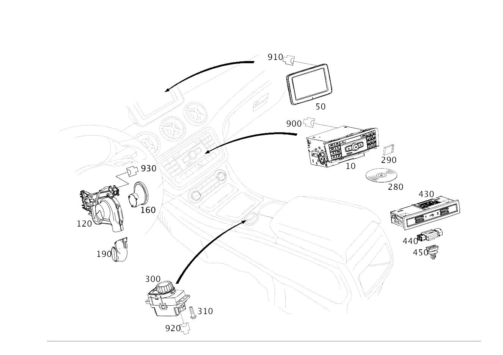

| № | Артикул | Название | Кол. | Примечание | Ограничение |
|---|---|---|---|---|---|
| 10 | A 246 900 49 15 | Блок управления | 1 | AUDIO/COMAND ПАНЕЛЬ УПРАВЛЕНИЯ [426] ДЛЯ ЦИФРОВОГО РУКОВОДСТВА ПО ЭКСПЛУАТАЦИИ ЗАКАЗАТЬ ТАКЖЕ ПРОГРАММНОЕ ОБЕСПЕЧЕНИЕ В КГ 58, TU300 [672] ДЕТАЛЬ ПОСЛЕ УСТАН.ПРОВЕРИТЬ НА АКТУАЛЬНОСТЬ "ПРОШИВНОГО" ПО [697] ДЕТАЛЬ ПОСТАВЛЯЕТСЯ ТОЛЬКО/ИЛИ ТАКЖЕ КАК ЗАП.ЧАСТЬ | (805+055/806+-140)+520+3U1 |
| 10 | A 246 900 77 15 | Блок управления | 1 | AUDIO/COMAND ПАНЕЛЬ УПРАВЛЕНИЯ [426] ДЛЯ ЦИФРОВОГО РУКОВОДСТВА ПО ЭКСПЛУАТАЦИИ ЗАКАЗАТЬ ТАКЖЕ ПРОГРАММНОЕ ОБЕСПЕЧЕНИЕ В КГ 58, TU300 [672] ДЕТАЛЬ ПОСЛЕ УСТАН.ПРОВЕРИТЬ НА АКТУАЛЬНОСТЬ "ПРОШИВНОГО" ПО [697] ДЕТАЛЬ ПОСТАВЛЯЕТСЯ ТОЛЬКО/ИЛИ ТАКЖЕ КАК ЗАП.ЧАСТЬ | (805+055/806+-140)+520+3U1 |
| 10 | A 246 900 52 13 | Блок управления | 1 | AUDIO/COMAND ПАНЕЛЬ УПРАВЛЕНИЯ [426] ДЛЯ ЦИФРОВОГО РУКОВОДСТВА ПО ЭКСПЛУАТАЦИИ ЗАКАЗАТЬ ТАКЖЕ ПРОГРАММНОЕ ОБЕСПЕЧЕНИЕ В КГ 58, TU300 [672] ДЕТАЛЬ ПОСЛЕ УСТАН.ПРОВЕРИТЬ НА АКТУАЛЬНОСТЬ "ПРОШИВНОГО" ПО [697] ДЕТАЛЬ ПОСТАВЛЯЕТСЯ ТОЛЬКО/ИЛИ ТАКЖЕ КАК ЗАП.ЧАСТЬ | (805+055/806+-140)+520+3U1 |
| 10 | A 246 900 45 16 | Блок управления | 1 | AUDIO/COMAND ПАНЕЛЬ УПРАВЛЕНИЯ [426] ДЛЯ ЦИФРОВОГО РУКОВОДСТВА ПО ЭКСПЛУАТАЦИИ ЗАКАЗАТЬ ТАКЖЕ ПРОГРАММНОЕ ОБЕСПЕЧЕНИЕ В КГ 58, TU300 [672] ДЕТАЛЬ ПОСЛЕ УСТАН.ПРОВЕРИТЬ НА АКТУАЛЬНОСТЬ "ПРОШИВНОГО" ПО [697] ДЕТАЛЬ ПОСТАВЛЯЕТСЯ ТОЛЬКО/ИЛИ ТАКЖЕ КАК ЗАП.ЧАСТЬ | (805+055/806+-140)+520+3U1 |
| 10 | A 246 900 50 15 | Блок управления | 1 | AUDIO/COMAND ПАНЕЛЬ УПРАВЛЕНИЯ [426] ДЛЯ ЦИФРОВОГО РУКОВОДСТВА ПО ЭКСПЛУАТАЦИИ ЗАКАЗАТЬ ТАКЖЕ ПРОГРАММНОЕ ОБЕСПЕЧЕНИЕ В КГ 58, TU300 [672] ДЕТАЛЬ ПОСЛЕ УСТАН.ПРОВЕРИТЬ НА АКТУАЛЬНОСТЬ "ПРОШИВНОГО" ПО [697] ДЕТАЛЬ ПОСТАВЛЯЕТСЯ ТОЛЬКО/ИЛИ ТАКЖЕ КАК ЗАП.ЧАСТЬ | (805+055/806+-140)+505+818+3U1 |
| 10 | A 246 900 78 15 | Блок управления | 1 | AUDIO/COMAND ПАНЕЛЬ УПРАВЛЕНИЯ [426] ДЛЯ ЦИФРОВОГО РУКОВОДСТВА ПО ЭКСПЛУАТАЦИИ ЗАКАЗАТЬ ТАКЖЕ ПРОГРАММНОЕ ОБЕСПЕЧЕНИЕ В КГ 58, TU300 [672] ДЕТАЛЬ ПОСЛЕ УСТАН.ПРОВЕРИТЬ НА АКТУАЛЬНОСТЬ "ПРОШИВНОГО" ПО [697] ДЕТАЛЬ ПОСТАВЛЯЕТСЯ ТОЛЬКО/ИЛИ ТАКЖЕ КАК ЗАП.ЧАСТЬ | (805+055/806+-140)+505+818+3U1 |
| 10 | A 246 900 53 13 | Блок управления | 1 | AUDIO/COMAND ПАНЕЛЬ УПРАВЛЕНИЯ [426] ДЛЯ ЦИФРОВОГО РУКОВОДСТВА ПО ЭКСПЛУАТАЦИИ ЗАКАЗАТЬ ТАКЖЕ ПРОГРАММНОЕ ОБЕСПЕЧЕНИЕ В КГ 58, TU300 [672] ДЕТАЛЬ ПОСЛЕ УСТАН.ПРОВЕРИТЬ НА АКТУАЛЬНОСТЬ "ПРОШИВНОГО" ПО [697] ДЕТАЛЬ ПОСТАВЛЯЕТСЯ ТОЛЬКО/ИЛИ ТАКЖЕ КАК ЗАП.ЧАСТЬ | (805+055/806+-140)+505+818+3U1 |
| 10 | A 246 900 46 16 | Блок управления | 1 | AUDIO/COMAND ПАНЕЛЬ УПРАВЛЕНИЯ [426] ДЛЯ ЦИФРОВОГО РУКОВОДСТВА ПО ЭКСПЛУАТАЦИИ ЗАКАЗАТЬ ТАКЖЕ ПРОГРАММНОЕ ОБЕСПЕЧЕНИЕ В КГ 58, TU300 [672] ДЕТАЛЬ ПОСЛЕ УСТАН.ПРОВЕРИТЬ НА АКТУАЛЬНОСТЬ "ПРОШИВНОГО" ПО [697] ДЕТАЛЬ ПОСТАВЛЯЕТСЯ ТОЛЬКО/ИЛИ ТАКЖЕ КАК ЗАП.ЧАСТЬ | (805+055/806+-140)+505+818+3U1 |
| 10 | A 246 900 51 15 | Блок управления | 1 | AUDIO/COMAND ПАНЕЛЬ УПРАВЛЕНИЯ [426] ДЛЯ ЦИФРОВОГО РУКОВОДСТВА ПО ЭКСПЛУАТАЦИИ ЗАКАЗАТЬ ТАКЖЕ ПРОГРАММНОЕ ОБЕСПЕЧЕНИЕ В КГ 58, TU300 [672] ДЕТАЛЬ ПОСЛЕ УСТАН.ПРОВЕРИТЬ НА АКТУАЛЬНОСТЬ "ПРОШИВНОГО" ПО [003828] НА А/М С КОДОМ 522 В СОЧЕТАНИИ С КОДОМ 357 ДОПОЛНИТ. ЗАКАЗАТЬ КАРТУ ПАМЯТИ ДЛЯ НАВИГАЦ.СИСТЕМЫ, РАБОТАЮЩЕЙ С КАРТОЙ ПАМЯТИ SD | (805+055/806+-140)+522+818+3U1 |
| 10 | A 246 900 79 15 | Блок управления | 1 | AUDIO/COMAND ПАНЕЛЬ УПРАВЛЕНИЯ [426] ДЛЯ ЦИФРОВОГО РУКОВОДСТВА ПО ЭКСПЛУАТАЦИИ ЗАКАЗАТЬ ТАКЖЕ ПРОГРАММНОЕ ОБЕСПЕЧЕНИЕ В КГ 58, TU300 [672] ДЕТАЛЬ ПОСЛЕ УСТАН.ПРОВЕРИТЬ НА АКТУАЛЬНОСТЬ "ПРОШИВНОГО" ПО [003828] НА А/М С КОДОМ 522 В СОЧЕТАНИИ С КОДОМ 357 ДОПОЛНИТ. ЗАКАЗАТЬ КАРТУ ПАМЯТИ ДЛЯ НАВИГАЦ.СИСТЕМЫ, РАБОТАЮЩЕЙ С КАРТОЙ ПАМЯТИ SD | (805+055/806+-140)+522+818+3U1 |
| 10 | A 246 900 54 13 | Блок управления | 1 | AUDIO/COMAND ПАНЕЛЬ УПРАВЛЕНИЯ [426] ДЛЯ ЦИФРОВОГО РУКОВОДСТВА ПО ЭКСПЛУАТАЦИИ ЗАКАЗАТЬ ТАКЖЕ ПРОГРАММНОЕ ОБЕСПЕЧЕНИЕ В КГ 58, TU300 [672] ДЕТАЛЬ ПОСЛЕ УСТАН.ПРОВЕРИТЬ НА АКТУАЛЬНОСТЬ "ПРОШИВНОГО" ПО [003828] НА А/М С КОДОМ 522 В СОЧЕТАНИИ С КОДОМ 357 ДОПОЛНИТ. ЗАКАЗАТЬ КАРТУ ПАМЯТИ ДЛЯ НАВИГАЦ.СИСТЕМЫ, РАБОТАЮЩЕЙ С КАРТОЙ ПАМЯТИ SD | (805+055/806+-140)+522+818+3U1 |
| 10 | A 246 900 47 16 | Блок управления | 1 | AUDIO/COMAND ПАНЕЛЬ УПРАВЛЕНИЯ [426] ДЛЯ ЦИФРОВОГО РУКОВОДСТВА ПО ЭКСПЛУАТАЦИИ ЗАКАЗАТЬ ТАКЖЕ ПРОГРАММНОЕ ОБЕСПЕЧЕНИЕ В КГ 58, TU300 [672] ДЕТАЛЬ ПОСЛЕ УСТАН.ПРОВЕРИТЬ НА АКТУАЛЬНОСТЬ "ПРОШИВНОГО" ПО [697] ДЕТАЛЬ ПОСТАВЛЯЕТСЯ ТОЛЬКО/ИЛИ ТАКЖЕ КАК ЗАП.ЧАСТЬ [003828] НА А/М С КОДОМ 522 В СОЧЕТАНИИ С КОДОМ 357 ДОПОЛНИТ. ЗАКАЗАТЬ КАРТУ ПАМЯТИ ДЛЯ НАВИГАЦ.СИСТЕМЫ, РАБОТАЮЩЕЙ С КАРТОЙ ПАМЯТИ SD | (805+055/806+-140)+522+818+3U1 |
| 10 | A 246 900 52 15 | Блок управления | 1 | AUDIO/COMAND ПАНЕЛЬ УПРАВЛЕНИЯ [426] ДЛЯ ЦИФРОВОГО РУКОВОДСТВА ПО ЭКСПЛУАТАЦИИ ЗАКАЗАТЬ ТАКЖЕ ПРОГРАММНОЕ ОБЕСПЕЧЕНИЕ В КГ 58, TU300 [672] ДЕТАЛЬ ПОСЛЕ УСТАН.ПРОВЕРИТЬ НА АКТУАЛЬНОСТЬ "ПРОШИВНОГО" ПО [003828] НА А/М С КОДОМ 522 В СОЧЕТАНИИ С КОДОМ 357 ДОПОЛНИТ. ЗАКАЗАТЬ КАРТУ ПАМЯТИ ДЛЯ НАВИГАЦ.СИСТЕМЫ, РАБОТАЮЩЕЙ С КАРТОЙ ПАМЯТИ SD | (805+055/806+-140)+522+818+3U2 |
| 10 | A 246 900 80 15 | Блок управления | 1 | AUDIO/COMAND ПАНЕЛЬ УПРАВЛЕНИЯ [426] ДЛЯ ЦИФРОВОГО РУКОВОДСТВА ПО ЭКСПЛУАТАЦИИ ЗАКАЗАТЬ ТАКЖЕ ПРОГРАММНОЕ ОБЕСПЕЧЕНИЕ В КГ 58, TU300 [672] ДЕТАЛЬ ПОСЛЕ УСТАН.ПРОВЕРИТЬ НА АКТУАЛЬНОСТЬ "ПРОШИВНОГО" ПО [003828] НА А/М С КОДОМ 522 В СОЧЕТАНИИ С КОДОМ 357 ДОПОЛНИТ. ЗАКАЗАТЬ КАРТУ ПАМЯТИ ДЛЯ НАВИГАЦ.СИСТЕМЫ, РАБОТАЮЩЕЙ С КАРТОЙ ПАМЯТИ SD | (805+055/806+-140)+522+818+3U2 |
| 10 | A 246 900 55 13 | Блок управления | 1 | AUDIO/COMAND ПАНЕЛЬ УПРАВЛЕНИЯ [426] ДЛЯ ЦИФРОВОГО РУКОВОДСТВА ПО ЭКСПЛУАТАЦИИ ЗАКАЗАТЬ ТАКЖЕ ПРОГРАММНОЕ ОБЕСПЕЧЕНИЕ В КГ 58, TU300 [672] ДЕТАЛЬ ПОСЛЕ УСТАН.ПРОВЕРИТЬ НА АКТУАЛЬНОСТЬ "ПРОШИВНОГО" ПО [003828] НА А/М С КОДОМ 522 В СОЧЕТАНИИ С КОДОМ 357 ДОПОЛНИТ. ЗАКАЗАТЬ КАРТУ ПАМЯТИ ДЛЯ НАВИГАЦ.СИСТЕМЫ, РАБОТАЮЩЕЙ С КАРТОЙ ПАМЯТИ SD | (805+055/806+-140)+522+818+3U2 |
| 10 | A 246 900 48 16 | Блок управления | 1 | AUDIO/COMAND ПАНЕЛЬ УПРАВЛЕНИЯ [426] ДЛЯ ЦИФРОВОГО РУКОВОДСТВА ПО ЭКСПЛУАТАЦИИ ЗАКАЗАТЬ ТАКЖЕ ПРОГРАММНОЕ ОБЕСПЕЧЕНИЕ В КГ 58, TU300 [672] ДЕТАЛЬ ПОСЛЕ УСТАН.ПРОВЕРИТЬ НА АКТУАЛЬНОСТЬ "ПРОШИВНОГО" ПО [003828] НА А/М С КОДОМ 522 В СОЧЕТАНИИ С КОДОМ 357 ДОПОЛНИТ. ЗАКАЗАТЬ КАРТУ ПАМЯТИ ДЛЯ НАВИГАЦ.СИСТЕМЫ, РАБОТАЮЩЕЙ С КАРТОЙ ПАМЯТИ SD | (805+055/806+-140)+522+818+3U2 |
| 10 | A 246 900 14 17 | Блок управления | 1 | AUDIO/COMAND ПАНЕЛЬ УПРАВЛЕНИЯ [426] ДЛЯ ЦИФРОВОГО РУКОВОДСТВА ПО ЭКСПЛУАТАЦИИ ЗАКАЗАТЬ ТАКЖЕ ПРОГРАММНОЕ ОБЕСПЕЧЕНИЕ В КГ 58, TU300 [672] ДЕТАЛЬ ПОСЛЕ УСТАН.ПРОВЕРИТЬ НА АКТУАЛЬНОСТЬ "ПРОШИВНОГО" ПО [697] ДЕТАЛЬ ПОСТАВЛЯЕТСЯ ТОЛЬКО/ИЛИ ТАКЖЕ КАК ЗАП.ЧАСТЬ [003828] НА А/М С КОДОМ 522 В СОЧЕТАНИИ С КОДОМ 357 ДОПОЛНИТ. ЗАКАЗАТЬ КАРТУ ПАМЯТИ ДЛЯ НАВИГАЦ.СИСТЕМЫ, РАБОТАЮЩЕЙ С КАРТОЙ ПАМЯТИ SD | (805+055/806+-140)+522+818+3U2 |
| 10 | A 246 900 58 15 | Блок управления | 1 | AUDIO/COMAND ПАНЕЛЬ УПРАВЛЕНИЯ [426] ДЛЯ ЦИФРОВОГО РУКОВОДСТВА ПО ЭКСПЛУАТАЦИИ ЗАКАЗАТЬ ТАКЖЕ ПРОГРАММНОЕ ОБЕСПЕЧЕНИЕ В КГ 58, TU300 [672] ДЕТАЛЬ ПОСЛЕ УСТАН.ПРОВЕРИТЬ НА АКТУАЛЬНОСТЬ "ПРОШИВНОГО" ПО [697] ДЕТАЛЬ ПОСТАВЛЯЕТСЯ ТОЛЬКО/ИЛИ ТАКЖЕ КАК ЗАП.ЧАСТЬ | (805+055/806+-140)+531+815+3U1 |
| 10 | A 246 900 56 13 | Блок управления | 1 | AUDIO/COMAND ПАНЕЛЬ УПРАВЛЕНИЯ [426] ДЛЯ ЦИФРОВОГО РУКОВОДСТВА ПО ЭКСПЛУАТАЦИИ ЗАКАЗАТЬ ТАКЖЕ ПРОГРАММНОЕ ОБЕСПЕЧЕНИЕ В КГ 58, TU300 [672] ДЕТАЛЬ ПОСЛЕ УСТАН.ПРОВЕРИТЬ НА АКТУАЛЬНОСТЬ "ПРОШИВНОГО" ПО [697] ДЕТАЛЬ ПОСТАВЛЯЕТСЯ ТОЛЬКО/ИЛИ ТАКЖЕ КАК ЗАП.ЧАСТЬ | (805+055/806+-140)+531+815+3U1 |
| 10 | A 246 900 86 16 | Блок управления | 1 | AUDIO/COMAND ПАНЕЛЬ УПРАВЛЕНИЯ [426] ДЛЯ ЦИФРОВОГО РУКОВОДСТВА ПО ЭКСПЛУАТАЦИИ ЗАКАЗАТЬ ТАКЖЕ ПРОГРАММНОЕ ОБЕСПЕЧЕНИЕ В КГ 58, TU300 [672] ДЕТАЛЬ ПОСЛЕ УСТАН.ПРОВЕРИТЬ НА АКТУАЛЬНОСТЬ "ПРОШИВНОГО" ПО [697] ДЕТАЛЬ ПОСТАВЛЯЕТСЯ ТОЛЬКО/ИЛИ ТАКЖЕ КАК ЗАП.ЧАСТЬ | (805+055/806+-140)+531+815+3U1 |
| 10 | A 246 900 59 15 | Блок управления | 1 | AUDIO/COMAND ПАНЕЛЬ УПРАВЛЕНИЯ [426] ДЛЯ ЦИФРОВОГО РУКОВОДСТВА ПО ЭКСПЛУАТАЦИИ ЗАКАЗАТЬ ТАКЖЕ ПРОГРАММНОЕ ОБЕСПЕЧЕНИЕ В КГ 58, TU300 [672] ДЕТАЛЬ ПОСЛЕ УСТАН.ПРОВЕРИТЬ НА АКТУАЛЬНОСТЬ "ПРОШИВНОГО" ПО [697] ДЕТАЛЬ ПОСТАВЛЯЕТСЯ ТОЛЬКО/ИЛИ ТАКЖЕ КАК ЗАП.ЧАСТЬ | (805+055/806+-140)+531+814+3U1 |
| 10 | A 246 900 57 13 | Блок управления | 1 | AUDIO/COMAND ПАНЕЛЬ УПРАВЛЕНИЯ [426] ДЛЯ ЦИФРОВОГО РУКОВОДСТВА ПО ЭКСПЛУАТАЦИИ ЗАКАЗАТЬ ТАКЖЕ ПРОГРАММНОЕ ОБЕСПЕЧЕНИЕ В КГ 58, TU300 [672] ДЕТАЛЬ ПОСЛЕ УСТАН.ПРОВЕРИТЬ НА АКТУАЛЬНОСТЬ "ПРОШИВНОГО" ПО [697] ДЕТАЛЬ ПОСТАВЛЯЕТСЯ ТОЛЬКО/ИЛИ ТАКЖЕ КАК ЗАП.ЧАСТЬ | (805+055/806+-140)+531+814+3U1 |
| 10 | A 246 900 87 16 | Блок управления | 1 | AUDIO/COMAND ПАНЕЛЬ УПРАВЛЕНИЯ [426] ДЛЯ ЦИФРОВОГО РУКОВОДСТВА ПО ЭКСПЛУАТАЦИИ ЗАКАЗАТЬ ТАКЖЕ ПРОГРАММНОЕ ОБЕСПЕЧЕНИЕ В КГ 58, TU300 [672] ДЕТАЛЬ ПОСЛЕ УСТАН.ПРОВЕРИТЬ НА АКТУАЛЬНОСТЬ "ПРОШИВНОГО" ПО | (805+055/806+-140)+531+814+3U1 |
| 10 | A 246 900 60 15 | Блок управления | 1 | AUDIO/COMAND ПАНЕЛЬ УПРАВЛЕНИЯ [426] ДЛЯ ЦИФРОВОГО РУКОВОДСТВА ПО ЭКСПЛУАТАЦИИ ЗАКАЗАТЬ ТАКЖЕ ПРОГРАММНОЕ ОБЕСПЕЧЕНИЕ В КГ 58, TU300 [672] ДЕТАЛЬ ПОСЛЕ УСТАН.ПРОВЕРИТЬ НА АКТУАЛЬНОСТЬ "ПРОШИВНОГО" ПО [697] ДЕТАЛЬ ПОСТАВЛЯЕТСЯ ТОЛЬКО/ИЛИ ТАКЖЕ КАК ЗАП.ЧАСТЬ | (805+055/806+-140)+531+815+3U2 |
| 10 | A 246 900 58 13 | Блок управления | 1 | AUDIO/COMAND ПАНЕЛЬ УПРАВЛЕНИЯ [426] ДЛЯ ЦИФРОВОГО РУКОВОДСТВА ПО ЭКСПЛУАТАЦИИ ЗАКАЗАТЬ ТАКЖЕ ПРОГРАММНОЕ ОБЕСПЕЧЕНИЕ В КГ 58, TU300 [672] ДЕТАЛЬ ПОСЛЕ УСТАН.ПРОВЕРИТЬ НА АКТУАЛЬНОСТЬ "ПРОШИВНОГО" ПО [697] ДЕТАЛЬ ПОСТАВЛЯЕТСЯ ТОЛЬКО/ИЛИ ТАКЖЕ КАК ЗАП.ЧАСТЬ | (805+055/806+-140)+531+815+3U2 |
| 10 | A 246 900 88 16 | Блок управления | 1 | AUDIO/COMAND ПАНЕЛЬ УПРАВЛЕНИЯ [426] ДЛЯ ЦИФРОВОГО РУКОВОДСТВА ПО ЭКСПЛУАТАЦИИ ЗАКАЗАТЬ ТАКЖЕ ПРОГРАММНОЕ ОБЕСПЕЧЕНИЕ В КГ 58, TU300 [672] ДЕТАЛЬ ПОСЛЕ УСТАН.ПРОВЕРИТЬ НА АКТУАЛЬНОСТЬ "ПРОШИВНОГО" ПО | (805+055/806+-140)+531+815+3U2 |
| 10 | A 246 900 62 15 | Блок управления | 1 | AUDIO/COMAND ПАНЕЛЬ УПРАВЛЕНИЯ [426] ДЛЯ ЦИФРОВОГО РУКОВОДСТВА ПО ЭКСПЛУАТАЦИИ ЗАКАЗАТЬ ТАКЖЕ ПРОГРАММНОЕ ОБЕСПЕЧЕНИЕ В КГ 58, TU300 [672] ДЕТАЛЬ ПОСЛЕ УСТАН.ПРОВЕРИТЬ НА АКТУАЛЬНОСТЬ "ПРОШИВНОГО" ПО [697] ДЕТАЛЬ ПОСТАВЛЯЕТСЯ ТОЛЬКО/ИЛИ ТАКЖЕ КАК ЗАП.ЧАСТЬ | (805+055/806+-140)+531+815+3U3 |
| 10 | A 246 900 59 13 | Блок управления | 1 | AUDIO/COMAND ПАНЕЛЬ УПРАВЛЕНИЯ [426] ДЛЯ ЦИФРОВОГО РУКОВОДСТВА ПО ЭКСПЛУАТАЦИИ ЗАКАЗАТЬ ТАКЖЕ ПРОГРАММНОЕ ОБЕСПЕЧЕНИЕ В КГ 58, TU300 [672] ДЕТАЛЬ ПОСЛЕ УСТАН.ПРОВЕРИТЬ НА АКТУАЛЬНОСТЬ "ПРОШИВНОГО" ПО | (805+055/806+-140)+531+815+3U3 |
| 10 | A 246 900 90 16 | Блок управления | 1 | AUDIO/COMAND ПАНЕЛЬ УПРАВЛЕНИЯ [426] ДЛЯ ЦИФРОВОГО РУКОВОДСТВА ПО ЭКСПЛУАТАЦИИ ЗАКАЗАТЬ ТАКЖЕ ПРОГРАММНОЕ ОБЕСПЕЧЕНИЕ В КГ 58, TU300 [672] ДЕТАЛЬ ПОСЛЕ УСТАН.ПРОВЕРИТЬ НА АКТУАЛЬНОСТЬ "ПРОШИВНОГО" ПО | (805+055/806+-140)+531+815+3U3 |
| 10 | A 246 900 63 15 | Блок управления | 1 | AUDIO/COMAND ПАНЕЛЬ УПРАВЛЕНИЯ [426] ДЛЯ ЦИФРОВОГО РУКОВОДСТВА ПО ЭКСПЛУАТАЦИИ ЗАКАЗАТЬ ТАКЖЕ ПРОГРАММНОЕ ОБЕСПЕЧЕНИЕ В КГ 58, TU300 [672] ДЕТАЛЬ ПОСЛЕ УСТАН.ПРОВЕРИТЬ НА АКТУАЛЬНОСТЬ "ПРОШИВНОГО" ПО | (805+055/806+-140)+531+814+3U4 |
| 10 | A 246 900 04 16 | Блок управления | 1 | AUDIO/COMAND ПАНЕЛЬ УПРАВЛЕНИЯ [426] ДЛЯ ЦИФРОВОГО РУКОВОДСТВА ПО ЭКСПЛУАТАЦИИ ЗАКАЗАТЬ ТАКЖЕ ПРОГРАММНОЕ ОБЕСПЕЧЕНИЕ В КГ 58, TU300 [672] ДЕТАЛЬ ПОСЛЕ УСТАН.ПРОВЕРИТЬ НА АКТУАЛЬНОСТЬ "ПРОШИВНОГО" ПО [697] ДЕТАЛЬ ПОСТАВЛЯЕТСЯ ТОЛЬКО/ИЛИ ТАКЖЕ КАК ЗАП.ЧАСТЬ | (805+055/806+-140)+531+814+3U4 |
| 10 | A 246 900 60 13 | Блок управления | 1 | AUDIO/COMAND ПАНЕЛЬ УПРАВЛЕНИЯ [426] ДЛЯ ЦИФРОВОГО РУКОВОДСТВА ПО ЭКСПЛУАТАЦИИ ЗАКАЗАТЬ ТАКЖЕ ПРОГРАММНОЕ ОБЕСПЕЧЕНИЕ В КГ 58, TU300 [672] ДЕТАЛЬ ПОСЛЕ УСТАН.ПРОВЕРИТЬ НА АКТУАЛЬНОСТЬ "ПРОШИВНОГО" ПО | (805+055/806+-140)+531+814+3U4 |
| 10 | A 246 900 91 16 | Блок управления | 1 | AUDIO/COMAND ПАНЕЛЬ УПРАВЛЕНИЯ [426] ДЛЯ ЦИФРОВОГО РУКОВОДСТВА ПО ЭКСПЛУАТАЦИИ ЗАКАЗАТЬ ТАКЖЕ ПРОГРАММНОЕ ОБЕСПЕЧЕНИЕ В КГ 58, TU300 [672] ДЕТАЛЬ ПОСЛЕ УСТАН.ПРОВЕРИТЬ НА АКТУАЛЬНОСТЬ "ПРОШИВНОГО" ПО [697] ДЕТАЛЬ ПОСТАВЛЯЕТСЯ ТОЛЬКО/ИЛИ ТАКЖЕ КАК ЗАП.ЧАСТЬ | (805+055/806+-140)+531+814+3U4 |
| 10 | A 246 900 61 15 | Блок управления | 1 | AUDIO/COMAND ПАНЕЛЬ УПРАВЛЕНИЯ [426] ДЛЯ ЦИФРОВОГО РУКОВОДСТВА ПО ЭКСПЛУАТАЦИИ ЗАКАЗАТЬ ТАКЖЕ ПРОГРАММНОЕ ОБЕСПЕЧЕНИЕ В КГ 58, TU300 [672] ДЕТАЛЬ ПОСЛЕ УСТАН.ПРОВЕРИТЬ НА АКТУАЛЬНОСТЬ "ПРОШИВНОГО" ПО | (805+055/806+-140)+532+815+3U3 |
| 10 | A 246 900 87 13 | Блок управления | 1 | AUDIO/COMAND ПАНЕЛЬ УПРАВЛЕНИЯ [426] ДЛЯ ЦИФРОВОГО РУКОВОДСТВА ПО ЭКСПЛУАТАЦИИ ЗАКАЗАТЬ ТАКЖЕ ПРОГРАММНОЕ ОБЕСПЕЧЕНИЕ В КГ 58, TU300 [672] ДЕТАЛЬ ПОСЛЕ УСТАН.ПРОВЕРИТЬ НА АКТУАЛЬНОСТЬ "ПРОШИВНОГО" ПО | (805+055/806+-140)+532+815+3U3 |
| 10 | A 246 900 89 16 | Блок управления | 1 | AUDIO/COMAND ПАНЕЛЬ УПРАВЛЕНИЯ [426] ДЛЯ ЦИФРОВОГО РУКОВОДСТВА ПО ЭКСПЛУАТАЦИИ ЗАКАЗАТЬ ТАКЖЕ ПРОГРАММНОЕ ОБЕСПЕЧЕНИЕ В КГ 58, TU300 [672] ДЕТАЛЬ ПОСЛЕ УСТАН.ПРОВЕРИТЬ НА АКТУАЛЬНОСТЬ "ПРОШИВНОГО" ПО | (805+055/806+-140)+532+815+3U3 |
| 10 | A 246 900 64 15 | Блок управления | 1 | AUDIO/COMAND ПАНЕЛЬ УПРАВЛЕНИЯ [426] ДЛЯ ЦИФРОВОГО РУКОВОДСТВА ПО ЭКСПЛУАТАЦИИ ЗАКАЗАТЬ ТАКЖЕ ПРОГРАММНОЕ ОБЕСПЕЧЕНИЕ В КГ 58, TU300 [672] ДЕТАЛЬ ПОСЛЕ УСТАН.ПРОВЕРИТЬ НА АКТУАЛЬНОСТЬ "ПРОШИВНОГО" ПО | 806+140+520+3U1 |
| 10 | A 246 900 63 16 | Блок управления | 1 | AUDIO/COMAND ПАНЕЛЬ УПРАВЛЕНИЯ [426] ДЛЯ ЦИФРОВОГО РУКОВОДСТВА ПО ЭКСПЛУАТАЦИИ ЗАКАЗАТЬ ТАКЖЕ ПРОГРАММНОЕ ОБЕСПЕЧЕНИЕ В КГ 58, TU300 [672] ДЕТАЛЬ ПОСЛЕ УСТАН.ПРОВЕРИТЬ НА АКТУАЛЬНОСТЬ "ПРОШИВНОГО" ПО | 806+140+520+3U1 |
| 10 | A 246 900 97 16 | Блок управления | 1 | AUDIO/COMAND ПАНЕЛЬ УПРАВЛЕНИЯ [426] ДЛЯ ЦИФРОВОГО РУКОВОДСТВА ПО ЭКСПЛУАТАЦИИ ЗАКАЗАТЬ ТАКЖЕ ПРОГРАММНОЕ ОБЕСПЕЧЕНИЕ В КГ 58, TU300 [672] ДЕТАЛЬ ПОСЛЕ УСТАН.ПРОВЕРИТЬ НА АКТУАЛЬНОСТЬ "ПРОШИВНОГО" ПО | 806+140+520+3U1 |
| 10 | A 246 900 61 17 | Блок управления | 1 | AUDIO/COMAND ПАНЕЛЬ УПРАВЛЕНИЯ [426] ДЛЯ ЦИФРОВОГО РУКОВОДСТВА ПО ЭКСПЛУАТАЦИИ ЗАКАЗАТЬ ТАКЖЕ ПРОГРАММНОЕ ОБЕСПЕЧЕНИЕ В КГ 58, TU300 [672] ДЕТАЛЬ ПОСЛЕ УСТАН.ПРОВЕРИТЬ НА АКТУАЛЬНОСТЬ "ПРОШИВНОГО" ПО | 806+140+520+3U1 |
| 10 | A 246 900 21 18 | Блок управления | 1 | AUDIO/COMAND ПАНЕЛЬ УПРАВЛЕНИЯ [426] ДЛЯ ЦИФРОВОГО РУКОВОДСТВА ПО ЭКСПЛУАТАЦИИ ЗАКАЗАТЬ ТАКЖЕ ПРОГРАММНОЕ ОБЕСПЕЧЕНИЕ В КГ 58, TU300 [672] ДЕТАЛЬ ПОСЛЕ УСТАН.ПРОВЕРИТЬ НА АКТУАЛЬНОСТЬ "ПРОШИВНОГО" ПО | 806+140+520+3U1 |
| 10 | A 246 900 36 18 | Блок управления | 1 | AUDIO/COMAND ПАНЕЛЬ УПРАВЛЕНИЯ [426] ДЛЯ ЦИФРОВОГО РУКОВОДСТВА ПО ЭКСПЛУАТАЦИИ ЗАКАЗАТЬ ТАКЖЕ ПРОГРАММНОЕ ОБЕСПЕЧЕНИЕ В КГ 58, TU300 [672] ДЕТАЛЬ ПОСЛЕ УСТАН.ПРОВЕРИТЬ НА АКТУАЛЬНОСТЬ "ПРОШИВНОГО" ПО | 806+140+520+3U1 |
| 10 | A 246 900 24 17 | Блок управления | 1 | AUDIO/COMAND ПАНЕЛЬ УПРАВЛЕНИЯ [426] ДЛЯ ЦИФРОВОГО РУКОВОДСТВА ПО ЭКСПЛУАТАЦИИ ЗАКАЗАТЬ ТАКЖЕ ПРОГРАММНОЕ ОБЕСПЕЧЕНИЕ В КГ 58, TU300 [672] ДЕТАЛЬ ПОСЛЕ УСТАН.ПРОВЕРИТЬ НА АКТУАЛЬНОСТЬ "ПРОШИВНОГО" ПО [697] ДЕТАЛЬ ПОСТАВЛЯЕТСЯ ТОЛЬКО/ИЛИ ТАКЖЕ КАК ЗАП.ЧАСТЬ | 806+140+520+3U1 |
| 10 | A 246 900 65 15 | Блок управления | 1 | AUDIO/COMAND ПАНЕЛЬ УПРАВЛЕНИЯ [426] ДЛЯ ЦИФРОВОГО РУКОВОДСТВА ПО ЭКСПЛУАТАЦИИ ЗАКАЗАТЬ ТАКЖЕ ПРОГРАММНОЕ ОБЕСПЕЧЕНИЕ В КГ 58, TU300 [672] ДЕТАЛЬ ПОСЛЕ УСТАН.ПРОВЕРИТЬ НА АКТУАЛЬНОСТЬ "ПРОШИВНОГО" ПО | 806+140+505+818+3U1 |
| 10 | A 246 900 64 16 | Блок управления | 1 | AUDIO/COMAND ПАНЕЛЬ УПРАВЛЕНИЯ [426] ДЛЯ ЦИФРОВОГО РУКОВОДСТВА ПО ЭКСПЛУАТАЦИИ ЗАКАЗАТЬ ТАКЖЕ ПРОГРАММНОЕ ОБЕСПЕЧЕНИЕ В КГ 58, TU300 [672] ДЕТАЛЬ ПОСЛЕ УСТАН.ПРОВЕРИТЬ НА АКТУАЛЬНОСТЬ "ПРОШИВНОГО" ПО | 806+140+505+818+3U1 |
| 10 | A 246 900 98 16 | Блок управления | 1 | AUDIO/COMAND ПАНЕЛЬ УПРАВЛЕНИЯ [426] ДЛЯ ЦИФРОВОГО РУКОВОДСТВА ПО ЭКСПЛУАТАЦИИ ЗАКАЗАТЬ ТАКЖЕ ПРОГРАММНОЕ ОБЕСПЕЧЕНИЕ В КГ 58, TU300 [672] ДЕТАЛЬ ПОСЛЕ УСТАН.ПРОВЕРИТЬ НА АКТУАЛЬНОСТЬ "ПРОШИВНОГО" ПО | 806+140+505+818+3U1 |
| 10 | A 246 900 62 17 | Блок управления | 1 | AUDIO/COMAND ПАНЕЛЬ УПРАВЛЕНИЯ [426] ДЛЯ ЦИФРОВОГО РУКОВОДСТВА ПО ЭКСПЛУАТАЦИИ ЗАКАЗАТЬ ТАКЖЕ ПРОГРАММНОЕ ОБЕСПЕЧЕНИЕ В КГ 58, TU300 [672] ДЕТАЛЬ ПОСЛЕ УСТАН.ПРОВЕРИТЬ НА АКТУАЛЬНОСТЬ "ПРОШИВНОГО" ПО | 806+140+505+818+3U1 |
| 10 | A 246 900 22 18 | Блок управления | 1 | AUDIO/COMAND ПАНЕЛЬ УПРАВЛЕНИЯ [426] ДЛЯ ЦИФРОВОГО РУКОВОДСТВА ПО ЭКСПЛУАТАЦИИ ЗАКАЗАТЬ ТАКЖЕ ПРОГРАММНОЕ ОБЕСПЕЧЕНИЕ В КГ 58, TU300 [672] ДЕТАЛЬ ПОСЛЕ УСТАН.ПРОВЕРИТЬ НА АКТУАЛЬНОСТЬ "ПРОШИВНОГО" ПО | 806+140+505+818+3U1 |
| 10 | A 246 900 37 18 | Блок управления | 1 | AUDIO/COMAND ПАНЕЛЬ УПРАВЛЕНИЯ [426] ДЛЯ ЦИФРОВОГО РУКОВОДСТВА ПО ЭКСПЛУАТАЦИИ ЗАКАЗАТЬ ТАКЖЕ ПРОГРАММНОЕ ОБЕСПЕЧЕНИЕ В КГ 58, TU300 [672] ДЕТАЛЬ ПОСЛЕ УСТАН.ПРОВЕРИТЬ НА АКТУАЛЬНОСТЬ "ПРОШИВНОГО" ПО | 806+140+505+818+3U1 |
| 10 | A 246 900 25 17 | Блок управления | 1 | AUDIO/COMAND ПАНЕЛЬ УПРАВЛЕНИЯ [426] ДЛЯ ЦИФРОВОГО РУКОВОДСТВА ПО ЭКСПЛУАТАЦИИ ЗАКАЗАТЬ ТАКЖЕ ПРОГРАММНОЕ ОБЕСПЕЧЕНИЕ В КГ 58, TU300 [672] ДЕТАЛЬ ПОСЛЕ УСТАН.ПРОВЕРИТЬ НА АКТУАЛЬНОСТЬ "ПРОШИВНОГО" ПО | 806+140+505+818+3U1 |
| 10 | A 246 900 66 15 | Блок управления | 1 | AUDIO/COMAND ПАНЕЛЬ УПРАВЛЕНИЯ [426] ДЛЯ ЦИФРОВОГО РУКОВОДСТВА ПО ЭКСПЛУАТАЦИИ ЗАКАЗАТЬ ТАКЖЕ ПРОГРАММНОЕ ОБЕСПЕЧЕНИЕ В КГ 58, TU300 [672] ДЕТАЛЬ ПОСЛЕ УСТАН.ПРОВЕРИТЬ НА АКТУАЛЬНОСТЬ "ПРОШИВНОГО" ПО [003828] НА А/М С КОДОМ 522 В СОЧЕТАНИИ С КОДОМ 357 ДОПОЛНИТ. ЗАКАЗАТЬ КАРТУ ПАМЯТИ ДЛЯ НАВИГАЦ.СИСТЕМЫ, РАБОТАЮЩЕЙ С КАРТОЙ ПАМЯТИ SD | 806+140+522+818+3U1 |
| 10 | A 246 900 65 16 | Блок управления | 1 | AUDIO/COMAND ПАНЕЛЬ УПРАВЛЕНИЯ [426] ДЛЯ ЦИФРОВОГО РУКОВОДСТВА ПО ЭКСПЛУАТАЦИИ ЗАКАЗАТЬ ТАКЖЕ ПРОГРАММНОЕ ОБЕСПЕЧЕНИЕ В КГ 58, TU300 [672] ДЕТАЛЬ ПОСЛЕ УСТАН.ПРОВЕРИТЬ НА АКТУАЛЬНОСТЬ "ПРОШИВНОГО" ПО [003828] НА А/М С КОДОМ 522 В СОЧЕТАНИИ С КОДОМ 357 ДОПОЛНИТ. ЗАКАЗАТЬ КАРТУ ПАМЯТИ ДЛЯ НАВИГАЦ.СИСТЕМЫ, РАБОТАЮЩЕЙ С КАРТОЙ ПАМЯТИ SD | 806+140+522+818+3U1 |
| 10 | A 246 900 99 16 | Блок управления | 1 | AUDIO/COMAND ПАНЕЛЬ УПРАВЛЕНИЯ [426] ДЛЯ ЦИФРОВОГО РУКОВОДСТВА ПО ЭКСПЛУАТАЦИИ ЗАКАЗАТЬ ТАКЖЕ ПРОГРАММНОЕ ОБЕСПЕЧЕНИЕ В КГ 58, TU300 [672] ДЕТАЛЬ ПОСЛЕ УСТАН.ПРОВЕРИТЬ НА АКТУАЛЬНОСТЬ "ПРОШИВНОГО" ПО [003828] НА А/М С КОДОМ 522 В СОЧЕТАНИИ С КОДОМ 357 ДОПОЛНИТ. ЗАКАЗАТЬ КАРТУ ПАМЯТИ ДЛЯ НАВИГАЦ.СИСТЕМЫ, РАБОТАЮЩЕЙ С КАРТОЙ ПАМЯТИ SD | 806+140+522+818+3U1 |
| 10 | A 246 900 63 17 | Блок управления | 1 | AUDIO/COMAND ПАНЕЛЬ УПРАВЛЕНИЯ [003828] НА А/М С КОДОМ 522 В СОЧЕТАНИИ С КОДОМ 357 ДОПОЛНИТ. ЗАКАЗАТЬ КАРТУ ПАМЯТИ ДЛЯ НАВИГАЦ.СИСТЕМЫ, РАБОТАЮЩЕЙ С КАРТОЙ ПАМЯТИ SD | 806+140+522+818+3U1 |
| 10 | A 246 900 23 18 | Блок управления | 1 | AUDIO/COMAND ПАНЕЛЬ УПРАВЛЕНИЯ [426] ДЛЯ ЦИФРОВОГО РУКОВОДСТВА ПО ЭКСПЛУАТАЦИИ ЗАКАЗАТЬ ТАКЖЕ ПРОГРАММНОЕ ОБЕСПЕЧЕНИЕ В КГ 58, TU300 [672] ДЕТАЛЬ ПОСЛЕ УСТАН.ПРОВЕРИТЬ НА АКТУАЛЬНОСТЬ "ПРОШИВНОГО" ПО [003828] НА А/М С КОДОМ 522 В СОЧЕТАНИИ С КОДОМ 357 ДОПОЛНИТ. ЗАКАЗАТЬ КАРТУ ПАМЯТИ ДЛЯ НАВИГАЦ.СИСТЕМЫ, РАБОТАЮЩЕЙ С КАРТОЙ ПАМЯТИ SD | 806+140+522+818+3U1 |
| 10 | A 246 900 38 18 | Блок управления | 1 | AUDIO/COMAND ПАНЕЛЬ УПРАВЛЕНИЯ [426] ДЛЯ ЦИФРОВОГО РУКОВОДСТВА ПО ЭКСПЛУАТАЦИИ ЗАКАЗАТЬ ТАКЖЕ ПРОГРАММНОЕ ОБЕСПЕЧЕНИЕ В КГ 58, TU300 [672] ДЕТАЛЬ ПОСЛЕ УСТАН.ПРОВЕРИТЬ НА АКТУАЛЬНОСТЬ "ПРОШИВНОГО" ПО [003828] НА А/М С КОДОМ 522 В СОЧЕТАНИИ С КОДОМ 357 ДОПОЛНИТ. ЗАКАЗАТЬ КАРТУ ПАМЯТИ ДЛЯ НАВИГАЦ.СИСТЕМЫ, РАБОТАЮЩЕЙ С КАРТОЙ ПАМЯТИ SD | 806+140+522+818+3U1 |
| 10 | A 246 900 26 17 | Блок управления | 1 | AUDIO/COMAND ПАНЕЛЬ УПРАВЛЕНИЯ [426] ДЛЯ ЦИФРОВОГО РУКОВОДСТВА ПО ЭКСПЛУАТАЦИИ ЗАКАЗАТЬ ТАКЖЕ ПРОГРАММНОЕ ОБЕСПЕЧЕНИЕ В КГ 58, TU300 [672] ДЕТАЛЬ ПОСЛЕ УСТАН.ПРОВЕРИТЬ НА АКТУАЛЬНОСТЬ "ПРОШИВНОГО" ПО [003828] НА А/М С КОДОМ 522 В СОЧЕТАНИИ С КОДОМ 357 ДОПОЛНИТ. ЗАКАЗАТЬ КАРТУ ПАМЯТИ ДЛЯ НАВИГАЦ.СИСТЕМЫ, РАБОТАЮЩЕЙ С КАРТОЙ ПАМЯТИ SD | 806+140+522+818+3U1 |
| 10 | A 246 900 67 15 | Блок управления | 1 | AUDIO/COMAND ПАНЕЛЬ УПРАВЛЕНИЯ [426] ДЛЯ ЦИФРОВОГО РУКОВОДСТВА ПО ЭКСПЛУАТАЦИИ ЗАКАЗАТЬ ТАКЖЕ ПРОГРАММНОЕ ОБЕСПЕЧЕНИЕ В КГ 58, TU300 [672] ДЕТАЛЬ ПОСЛЕ УСТАН.ПРОВЕРИТЬ НА АКТУАЛЬНОСТЬ "ПРОШИВНОГО" ПО [003828] НА А/М С КОДОМ 522 В СОЧЕТАНИИ С КОДОМ 357 ДОПОЛНИТ. ЗАКАЗАТЬ КАРТУ ПАМЯТИ ДЛЯ НАВИГАЦ.СИСТЕМЫ, РАБОТАЮЩЕЙ С КАРТОЙ ПАМЯТИ SD | 806+140+522+818+3U2 |
| 10 | A 246 900 66 16 | Блок управления | 1 | AUDIO/COMAND ПАНЕЛЬ УПРАВЛЕНИЯ [426] ДЛЯ ЦИФРОВОГО РУКОВОДСТВА ПО ЭКСПЛУАТАЦИИ ЗАКАЗАТЬ ТАКЖЕ ПРОГРАММНОЕ ОБЕСПЕЧЕНИЕ В КГ 58, TU300 [672] ДЕТАЛЬ ПОСЛЕ УСТАН.ПРОВЕРИТЬ НА АКТУАЛЬНОСТЬ "ПРОШИВНОГО" ПО [003828] НА А/М С КОДОМ 522 В СОЧЕТАНИИ С КОДОМ 357 ДОПОЛНИТ. ЗАКАЗАТЬ КАРТУ ПАМЯТИ ДЛЯ НАВИГАЦ.СИСТЕМЫ, РАБОТАЮЩЕЙ С КАРТОЙ ПАМЯТИ SD | 806+140+522+818+3U2 |
| 10 | A 246 900 00 17 | Блок управления | 1 | AUDIO/COMAND ПАНЕЛЬ УПРАВЛЕНИЯ [426] ДЛЯ ЦИФРОВОГО РУКОВОДСТВА ПО ЭКСПЛУАТАЦИИ ЗАКАЗАТЬ ТАКЖЕ ПРОГРАММНОЕ ОБЕСПЕЧЕНИЕ В КГ 58, TU300 [672] ДЕТАЛЬ ПОСЛЕ УСТАН.ПРОВЕРИТЬ НА АКТУАЛЬНОСТЬ "ПРОШИВНОГО" ПО [003828] НА А/М С КОДОМ 522 В СОЧЕТАНИИ С КОДОМ 357 ДОПОЛНИТ. ЗАКАЗАТЬ КАРТУ ПАМЯТИ ДЛЯ НАВИГАЦ.СИСТЕМЫ, РАБОТАЮЩЕЙ С КАРТОЙ ПАМЯТИ SD | 806+140+522+818+3U2 |
| 10 | A 246 900 15 17 | Блок управления | 1 | AUDIO/COMAND ПАНЕЛЬ УПРАВЛЕНИЯ [426] ДЛЯ ЦИФРОВОГО РУКОВОДСТВА ПО ЭКСПЛУАТАЦИИ ЗАКАЗАТЬ ТАКЖЕ ПРОГРАММНОЕ ОБЕСПЕЧЕНИЕ В КГ 58, TU300 [672] ДЕТАЛЬ ПОСЛЕ УСТАН.ПРОВЕРИТЬ НА АКТУАЛЬНОСТЬ "ПРОШИВНОГО" ПО [003828] НА А/М С КОДОМ 522 В СОЧЕТАНИИ С КОДОМ 357 ДОПОЛНИТ. ЗАКАЗАТЬ КАРТУ ПАМЯТИ ДЛЯ НАВИГАЦ.СИСТЕМЫ, РАБОТАЮЩЕЙ С КАРТОЙ ПАМЯТИ SD | 806+140+522+818+3U2 |
| 10 | A 246 900 64 17 | Блок управления | 1 | AUDIO/COMAND ПАНЕЛЬ УПРАВЛЕНИЯ [426] ДЛЯ ЦИФРОВОГО РУКОВОДСТВА ПО ЭКСПЛУАТАЦИИ ЗАКАЗАТЬ ТАКЖЕ ПРОГРАММНОЕ ОБЕСПЕЧЕНИЕ В КГ 58, TU300 [672] ДЕТАЛЬ ПОСЛЕ УСТАН.ПРОВЕРИТЬ НА АКТУАЛЬНОСТЬ "ПРОШИВНОГО" ПО [003828] НА А/М С КОДОМ 522 В СОЧЕТАНИИ С КОДОМ 357 ДОПОЛНИТ. ЗАКАЗАТЬ КАРТУ ПАМЯТИ ДЛЯ НАВИГАЦ.СИСТЕМЫ, РАБОТАЮЩЕЙ С КАРТОЙ ПАМЯТИ SD | 806+140+522+818+3U2 |
| 10 | A 246 900 24 18 | Блок управления | 1 | AUDIO/COMAND ПАНЕЛЬ УПРАВЛЕНИЯ [426] ДЛЯ ЦИФРОВОГО РУКОВОДСТВА ПО ЭКСПЛУАТАЦИИ ЗАКАЗАТЬ ТАКЖЕ ПРОГРАММНОЕ ОБЕСПЕЧЕНИЕ В КГ 58, TU300 [672] ДЕТАЛЬ ПОСЛЕ УСТАН.ПРОВЕРИТЬ НА АКТУАЛЬНОСТЬ "ПРОШИВНОГО" ПО [003828] НА А/М С КОДОМ 522 В СОЧЕТАНИИ С КОДОМ 357 ДОПОЛНИТ. ЗАКАЗАТЬ КАРТУ ПАМЯТИ ДЛЯ НАВИГАЦ.СИСТЕМЫ, РАБОТАЮЩЕЙ С КАРТОЙ ПАМЯТИ SD | 806+140+522+818+3U2 |
| 10 | A 246 900 39 18 | Блок управления | 1 | AUDIO/COMAND ПАНЕЛЬ УПРАВЛЕНИЯ [426] ДЛЯ ЦИФРОВОГО РУКОВОДСТВА ПО ЭКСПЛУАТАЦИИ ЗАКАЗАТЬ ТАКЖЕ ПРОГРАММНОЕ ОБЕСПЕЧЕНИЕ В КГ 58, TU300 [672] ДЕТАЛЬ ПОСЛЕ УСТАН.ПРОВЕРИТЬ НА АКТУАЛЬНОСТЬ "ПРОШИВНОГО" ПО [003828] НА А/М С КОДОМ 522 В СОЧЕТАНИИ С КОДОМ 357 ДОПОЛНИТ. ЗАКАЗАТЬ КАРТУ ПАМЯТИ ДЛЯ НАВИГАЦ.СИСТЕМЫ, РАБОТАЮЩЕЙ С КАРТОЙ ПАМЯТИ SD | 806+140+522+818+3U2 |
| 10 | A 246 900 27 17 | Блок управления | 1 | AUDIO/COMAND ПАНЕЛЬ УПРАВЛЕНИЯ [426] ДЛЯ ЦИФРОВОГО РУКОВОДСТВА ПО ЭКСПЛУАТАЦИИ ЗАКАЗАТЬ ТАКЖЕ ПРОГРАММНОЕ ОБЕСПЕЧЕНИЕ В КГ 58, TU300 [672] ДЕТАЛЬ ПОСЛЕ УСТАН.ПРОВЕРИТЬ НА АКТУАЛЬНОСТЬ "ПРОШИВНОГО" ПО [003828] НА А/М С КОДОМ 522 В СОЧЕТАНИИ С КОДОМ 357 ДОПОЛНИТ. ЗАКАЗАТЬ КАРТУ ПАМЯТИ ДЛЯ НАВИГАЦ.СИСТЕМЫ, РАБОТАЮЩЕЙ С КАРТОЙ ПАМЯТИ SD | 806+140+522+818+3U2 |
| 10 | A 246 900 68 15 | Блок управления | 1 | AUDIO/COMAND ПАНЕЛЬ УПРАВЛЕНИЯ [426] ДЛЯ ЦИФРОВОГО РУКОВОДСТВА ПО ЭКСПЛУАТАЦИИ ЗАКАЗАТЬ ТАКЖЕ ПРОГРАММНОЕ ОБЕСПЕЧЕНИЕ В КГ 58, TU300 [672] ДЕТАЛЬ ПОСЛЕ УСТАН.ПРОВЕРИТЬ НА АКТУАЛЬНОСТЬ "ПРОШИВНОГО" ПО [697] ДЕТАЛЬ ПОСТАВЛЯЕТСЯ ТОЛЬКО/ИЛИ ТАКЖЕ КАК ЗАП.ЧАСТЬ | 806+140+531+815+3U1 |
| 10 | A 246 900 57 16 | Блок управления | 1 | AUDIO/COMAND ПАНЕЛЬ УПРАВЛЕНИЯ [426] ДЛЯ ЦИФРОВОГО РУКОВОДСТВА ПО ЭКСПЛУАТАЦИИ ЗАКАЗАТЬ ТАКЖЕ ПРОГРАММНОЕ ОБЕСПЕЧЕНИЕ В КГ 58, TU300 [672] ДЕТАЛЬ ПОСЛЕ УСТАН.ПРОВЕРИТЬ НА АКТУАЛЬНОСТЬ "ПРОШИВНОГО" ПО [697] ДЕТАЛЬ ПОСТАВЛЯЕТСЯ ТОЛЬКО/ИЛИ ТАКЖЕ КАК ЗАП.ЧАСТЬ | 806+140+531+815+3U1 |
| 10 | A 246 900 74 16 | Блок управления | 1 | AUDIO/COMAND ПАНЕЛЬ УПРАВЛЕНИЯ [426] ДЛЯ ЦИФРОВОГО РУКОВОДСТВА ПО ЭКСПЛУАТАЦИИ ЗАКАЗАТЬ ТАКЖЕ ПРОГРАММНОЕ ОБЕСПЕЧЕНИЕ В КГ 58, TU300 [672] ДЕТАЛЬ ПОСЛЕ УСТАН.ПРОВЕРИТЬ НА АКТУАЛЬНОСТЬ "ПРОШИВНОГО" ПО [697] ДЕТАЛЬ ПОСТАВЛЯЕТСЯ ТОЛЬКО/ИЛИ ТАКЖЕ КАК ЗАП.ЧАСТЬ | 806+140+531+815+3U1 |
| 10 | A 246 900 55 17 | Блок управления | 1 | AUDIO/COMAND ПАНЕЛЬ УПРАВЛЕНИЯ [426] ДЛЯ ЦИФРОВОГО РУКОВОДСТВА ПО ЭКСПЛУАТАЦИИ ЗАКАЗАТЬ ТАКЖЕ ПРОГРАММНОЕ ОБЕСПЕЧЕНИЕ В КГ 58, TU300 [672] ДЕТАЛЬ ПОСЛЕ УСТАН.ПРОВЕРИТЬ НА АКТУАЛЬНОСТЬ "ПРОШИВНОГО" ПО [697] ДЕТАЛЬ ПОСТАВЛЯЕТСЯ ТОЛЬКО/ИЛИ ТАКЖЕ КАК ЗАП.ЧАСТЬ | 806+140+531+815+3U1 |
| 10 | A 246 900 69 15 | Блок управления | 1 | AUDIO/COMAND ПАНЕЛЬ УПРАВЛЕНИЯ [426] ДЛЯ ЦИФРОВОГО РУКОВОДСТВА ПО ЭКСПЛУАТАЦИИ ЗАКАЗАТЬ ТАКЖЕ ПРОГРАММНОЕ ОБЕСПЕЧЕНИЕ В КГ 58, TU300 [672] ДЕТАЛЬ ПОСЛЕ УСТАН.ПРОВЕРИТЬ НА АКТУАЛЬНОСТЬ "ПРОШИВНОГО" ПО [697] ДЕТАЛЬ ПОСТАВЛЯЕТСЯ ТОЛЬКО/ИЛИ ТАКЖЕ КАК ЗАП.ЧАСТЬ | 806+140+531+814+3U1 |
| 10 | A 246 900 58 16 | Блок управления | 1 | AUDIO/COMAND ПАНЕЛЬ УПРАВЛЕНИЯ [426] ДЛЯ ЦИФРОВОГО РУКОВОДСТВА ПО ЭКСПЛУАТАЦИИ ЗАКАЗАТЬ ТАКЖЕ ПРОГРАММНОЕ ОБЕСПЕЧЕНИЕ В КГ 58, TU300 [672] ДЕТАЛЬ ПОСЛЕ УСТАН.ПРОВЕРИТЬ НА АКТУАЛЬНОСТЬ "ПРОШИВНОГО" ПО [697] ДЕТАЛЬ ПОСТАВЛЯЕТСЯ ТОЛЬКО/ИЛИ ТАКЖЕ КАК ЗАП.ЧАСТЬ | 806+140+531+814+3U1 |
| 10 | A 246 900 75 16 | Блок управления | 1 | AUDIO/COMAND ПАНЕЛЬ УПРАВЛЕНИЯ [426] ДЛЯ ЦИФРОВОГО РУКОВОДСТВА ПО ЭКСПЛУАТАЦИИ ЗАКАЗАТЬ ТАКЖЕ ПРОГРАММНОЕ ОБЕСПЕЧЕНИЕ В КГ 58, TU300 [672] ДЕТАЛЬ ПОСЛЕ УСТАН.ПРОВЕРИТЬ НА АКТУАЛЬНОСТЬ "ПРОШИВНОГО" ПО [697] ДЕТАЛЬ ПОСТАВЛЯЕТСЯ ТОЛЬКО/ИЛИ ТАКЖЕ КАК ЗАП.ЧАСТЬ | 806+140+531+814+3U1 |
| 10 | A 246 900 56 17 | Блок управления | 1 | AUDIO/COMAND ПАНЕЛЬ УПРАВЛЕНИЯ [426] ДЛЯ ЦИФРОВОГО РУКОВОДСТВА ПО ЭКСПЛУАТАЦИИ ЗАКАЗАТЬ ТАКЖЕ ПРОГРАММНОЕ ОБЕСПЕЧЕНИЕ В КГ 58, TU300 [672] ДЕТАЛЬ ПОСЛЕ УСТАН.ПРОВЕРИТЬ НА АКТУАЛЬНОСТЬ "ПРОШИВНОГО" ПО [697] ДЕТАЛЬ ПОСТАВЛЯЕТСЯ ТОЛЬКО/ИЛИ ТАКЖЕ КАК ЗАП.ЧАСТЬ | 806+140+531+814+3U1 |
| 10 | A 246 900 70 15 | Блок управления | 1 | AUDIO/COMAND ПАНЕЛЬ УПРАВЛЕНИЯ [426] ДЛЯ ЦИФРОВОГО РУКОВОДСТВА ПО ЭКСПЛУАТАЦИИ ЗАКАЗАТЬ ТАКЖЕ ПРОГРАММНОЕ ОБЕСПЕЧЕНИЕ В КГ 58, TU300 [672] ДЕТАЛЬ ПОСЛЕ УСТАН.ПРОВЕРИТЬ НА АКТУАЛЬНОСТЬ "ПРОШИВНОГО" ПО | 806+140+531+815+3U2 |
| 10 | A 246 900 59 16 | Блок управления | 1 | AUDIO/COMAND ПАНЕЛЬ УПРАВЛЕНИЯ [426] ДЛЯ ЦИФРОВОГО РУКОВОДСТВА ПО ЭКСПЛУАТАЦИИ ЗАКАЗАТЬ ТАКЖЕ ПРОГРАММНОЕ ОБЕСПЕЧЕНИЕ В КГ 58, TU300 [672] ДЕТАЛЬ ПОСЛЕ УСТАН.ПРОВЕРИТЬ НА АКТУАЛЬНОСТЬ "ПРОШИВНОГО" ПО | 806+140+531+815+3U2 |
| 10 | A 246 900 76 16 | Блок управления | 1 | AUDIO/COMAND ПАНЕЛЬ УПРАВЛЕНИЯ [426] ДЛЯ ЦИФРОВОГО РУКОВОДСТВА ПО ЭКСПЛУАТАЦИИ ЗАКАЗАТЬ ТАКЖЕ ПРОГРАММНОЕ ОБЕСПЕЧЕНИЕ В КГ 58, TU300 [672] ДЕТАЛЬ ПОСЛЕ УСТАН.ПРОВЕРИТЬ НА АКТУАЛЬНОСТЬ "ПРОШИВНОГО" ПО | 806+140+531+815+3U2 |
| 10 | A 246 900 93 16 | Блок управления | 1 | AUDIO/COMAND ПАНЕЛЬ УПРАВЛЕНИЯ [426] ДЛЯ ЦИФРОВОГО РУКОВОДСТВА ПО ЭКСПЛУАТАЦИИ ЗАКАЗАТЬ ТАКЖЕ ПРОГРАММНОЕ ОБЕСПЕЧЕНИЕ В КГ 58, TU300 [672] ДЕТАЛЬ ПОСЛЕ УСТАН.ПРОВЕРИТЬ НА АКТУАЛЬНОСТЬ "ПРОШИВНОГО" ПО [697] ДЕТАЛЬ ПОСТАВЛЯЕТСЯ ТОЛЬКО/ИЛИ ТАКЖЕ КАК ЗАП.ЧАСТЬ | 806+140+531+815+3U2 |
| 10 | A 246 900 57 17 | Блок управления | 1 | AUDIO/COMAND ПАНЕЛЬ УПРАВЛЕНИЯ [426] ДЛЯ ЦИФРОВОГО РУКОВОДСТВА ПО ЭКСПЛУАТАЦИИ ЗАКАЗАТЬ ТАКЖЕ ПРОГРАММНОЕ ОБЕСПЕЧЕНИЕ В КГ 58, TU300 [672] ДЕТАЛЬ ПОСЛЕ УСТАН.ПРОВЕРИТЬ НА АКТУАЛЬНОСТЬ "ПРОШИВНОГО" ПО [697] ДЕТАЛЬ ПОСТАВЛЯЕТСЯ ТОЛЬКО/ИЛИ ТАКЖЕ КАК ЗАП.ЧАСТЬ | 806+140+531+815+3U2 |
| 10 | A 246 900 72 15 | Блок управления | 1 | AUDIO/COMAND ПАНЕЛЬ УПРАВЛЕНИЯ [426] ДЛЯ ЦИФРОВОГО РУКОВОДСТВА ПО ЭКСПЛУАТАЦИИ ЗАКАЗАТЬ ТАКЖЕ ПРОГРАММНОЕ ОБЕСПЕЧЕНИЕ В КГ 58, TU300 [672] ДЕТАЛЬ ПОСЛЕ УСТАН.ПРОВЕРИТЬ НА АКТУАЛЬНОСТЬ "ПРОШИВНОГО" ПО | 531+815+3U3+806+140 |
| 10 | A 246 900 61 16 | Блок управления | 1 | AUDIO/COMAND ПАНЕЛЬ УПРАВЛЕНИЯ [426] ДЛЯ ЦИФРОВОГО РУКОВОДСТВА ПО ЭКСПЛУАТАЦИИ ЗАКАЗАТЬ ТАКЖЕ ПРОГРАММНОЕ ОБЕСПЕЧЕНИЕ В КГ 58, TU300 [672] ДЕТАЛЬ ПОСЛЕ УСТАН.ПРОВЕРИТЬ НА АКТУАЛЬНОСТЬ "ПРОШИВНОГО" ПО | 806+140+531+815+3U3 |
| 10 | A 246 900 95 16 | Блок управления | 1 | AUDIO/COMAND ПАНЕЛЬ УПРАВЛЕНИЯ [426] ДЛЯ ЦИФРОВОГО РУКОВОДСТВА ПО ЭКСПЛУАТАЦИИ ЗАКАЗАТЬ ТАКЖЕ ПРОГРАММНОЕ ОБЕСПЕЧЕНИЕ В КГ 58, TU300 [672] ДЕТАЛЬ ПОСЛЕ УСТАН.ПРОВЕРИТЬ НА АКТУАЛЬНОСТЬ "ПРОШИВНОГО" ПО | 806+140+531+815+3U3 |
| 10 | A 246 900 59 17 | Блок управления | 1 | AUDIO/COMAND ПАНЕЛЬ УПРАВЛЕНИЯ [426] ДЛЯ ЦИФРОВОГО РУКОВОДСТВА ПО ЭКСПЛУАТАЦИИ ЗАКАЗАТЬ ТАКЖЕ ПРОГРАММНОЕ ОБЕСПЕЧЕНИЕ В КГ 58, TU300 [672] ДЕТАЛЬ ПОСЛЕ УСТАН.ПРОВЕРИТЬ НА АКТУАЛЬНОСТЬ "ПРОШИВНОГО" ПО [697] ДЕТАЛЬ ПОСТАВЛЯЕТСЯ ТОЛЬКО/ИЛИ ТАКЖЕ КАК ЗАП.ЧАСТЬ | 806+140+531+815+3U3 |
| 10 | A 246 900 73 15 | Блок управления | 1 | AUDIO/COMAND ПАНЕЛЬ УПРАВЛЕНИЯ [426] ДЛЯ ЦИФРОВОГО РУКОВОДСТВА ПО ЭКСПЛУАТАЦИИ ЗАКАЗАТЬ ТАКЖЕ ПРОГРАММНОЕ ОБЕСПЕЧЕНИЕ В КГ 58, TU300 [672] ДЕТАЛЬ ПОСЛЕ УСТАН.ПРОВЕРИТЬ НА АКТУАЛЬНОСТЬ "ПРОШИВНОГО" ПО | 806+140+531+814+3U4 |
| 10 | A 246 900 62 16 | Блок управления | 1 | AUDIO/COMAND ПАНЕЛЬ УПРАВЛЕНИЯ [426] ДЛЯ ЦИФРОВОГО РУКОВОДСТВА ПО ЭКСПЛУАТАЦИИ ЗАКАЗАТЬ ТАКЖЕ ПРОГРАММНОЕ ОБЕСПЕЧЕНИЕ В КГ 58, TU300 [672] ДЕТАЛЬ ПОСЛЕ УСТАН.ПРОВЕРИТЬ НА АКТУАЛЬНОСТЬ "ПРОШИВНОГО" ПО | 806+140+531+814+3U4 |
| 10 | A 246 900 96 16 | Блок управления | 1 | AUDIO/COMAND ПАНЕЛЬ УПРАВЛЕНИЯ [426] ДЛЯ ЦИФРОВОГО РУКОВОДСТВА ПО ЭКСПЛУАТАЦИИ ЗАКАЗАТЬ ТАКЖЕ ПРОГРАММНОЕ ОБЕСПЕЧЕНИЕ В КГ 58, TU300 [672] ДЕТАЛЬ ПОСЛЕ УСТАН.ПРОВЕРИТЬ НА АКТУАЛЬНОСТЬ "ПРОШИВНОГО" ПО | 806+140+531+814+3U4 |
| 10 | A 246 900 60 17 | Блок управления | 1 | AUDIO/COMAND ПАНЕЛЬ УПРАВЛЕНИЯ [426] ДЛЯ ЦИФРОВОГО РУКОВОДСТВА ПО ЭКСПЛУАТАЦИИ ЗАКАЗАТЬ ТАКЖЕ ПРОГРАММНОЕ ОБЕСПЕЧЕНИЕ В КГ 58, TU300 [672] ДЕТАЛЬ ПОСЛЕ УСТАН.ПРОВЕРИТЬ НА АКТУАЛЬНОСТЬ "ПРОШИВНОГО" ПО | 806+140+531+814+3U4 |
| 10 | A 246 900 71 15 | Блок управления | 1 | AUDIO/COMAND ПАНЕЛЬ УПРАВЛЕНИЯ [426] ДЛЯ ЦИФРОВОГО РУКОВОДСТВА ПО ЭКСПЛУАТАЦИИ ЗАКАЗАТЬ ТАКЖЕ ПРОГРАММНОЕ ОБЕСПЕЧЕНИЕ В КГ 58, TU300 [672] ДЕТАЛЬ ПОСЛЕ УСТАН.ПРОВЕРИТЬ НА АКТУАЛЬНОСТЬ "ПРОШИВНОГО" ПО | 806+140+532+815+3U3 |
| 10 | A 246 900 60 16 | Блок управления | 1 | AUDIO/COMAND ПАНЕЛЬ УПРАВЛЕНИЯ [426] ДЛЯ ЦИФРОВОГО РУКОВОДСТВА ПО ЭКСПЛУАТАЦИИ ЗАКАЗАТЬ ТАКЖЕ ПРОГРАММНОЕ ОБЕСПЕЧЕНИЕ В КГ 58, TU300 [672] ДЕТАЛЬ ПОСЛЕ УСТАН.ПРОВЕРИТЬ НА АКТУАЛЬНОСТЬ "ПРОШИВНОГО" ПО | 806+140+532+815+3U3 |
| 10 | A 246 900 94 16 | Блок управления | 1 | AUDIO/COMAND ПАНЕЛЬ УПРАВЛЕНИЯ [426] ДЛЯ ЦИФРОВОГО РУКОВОДСТВА ПО ЭКСПЛУАТАЦИИ ЗАКАЗАТЬ ТАКЖЕ ПРОГРАММНОЕ ОБЕСПЕЧЕНИЕ В КГ 58, TU300 [672] ДЕТАЛЬ ПОСЛЕ УСТАН.ПРОВЕРИТЬ НА АКТУАЛЬНОСТЬ "ПРОШИВНОГО" ПО | 806+140+532+815+3U3 |
| 10 | A 246 900 58 17 | Блок управления | 1 | AUDIO/COMAND ПАНЕЛЬ УПРАВЛЕНИЯ [426] ДЛЯ ЦИФРОВОГО РУКОВОДСТВА ПО ЭКСПЛУАТАЦИИ ЗАКАЗАТЬ ТАКЖЕ ПРОГРАММНОЕ ОБЕСПЕЧЕНИЕ В КГ 58, TU300 [672] ДЕТАЛЬ ПОСЛЕ УСТАН.ПРОВЕРИТЬ НА АКТУАЛЬНОСТЬ "ПРОШИВНОГО" ПО | 806+140+532+815+3U3 |
| 10 | A 246 900 20 17 | Блок управления | 1 | AUDIO/COMAND ПАНЕЛЬ УПРАВЛЕНИЯ [426] ДЛЯ ЦИФРОВОГО РУКОВОДСТВА ПО ЭКСПЛУАТАЦИИ ЗАКАЗАТЬ ТАКЖЕ ПРОГРАММНОЕ ОБЕСПЕЧЕНИЕ В КГ 58, TU300 [672] ДЕТАЛЬ ПОСЛЕ УСТАН.ПРОВЕРИТЬ НА АКТУАЛЬНОСТЬ "ПРОШИВНОГО" ПО | 807+520+3U1 |
| 10 | A 246 900 25 18 | Блок управления | 1 | AUDIO/COMAND ПАНЕЛЬ УПРАВЛЕНИЯ [426] ДЛЯ ЦИФРОВОГО РУКОВОДСТВА ПО ЭКСПЛУАТАЦИИ ЗАКАЗАТЬ ТАКЖЕ ПРОГРАММНОЕ ОБЕСПЕЧЕНИЕ В КГ 58, TU300 [672] ДЕТАЛЬ ПОСЛЕ УСТАН.ПРОВЕРИТЬ НА АКТУАЛЬНОСТЬ "ПРОШИВНОГО" ПО | 807+520+3U1 |
| 10 | A 246 900 72 18 | Блок управления | 1 | AUDIO/COMAND ПАНЕЛЬ УПРАВЛЕНИЯ [426] ДЛЯ ЦИФРОВОГО РУКОВОДСТВА ПО ЭКСПЛУАТАЦИИ ЗАКАЗАТЬ ТАКЖЕ ПРОГРАММНОЕ ОБЕСПЕЧЕНИЕ В КГ 58, TU300 [672] ДЕТАЛЬ ПОСЛЕ УСТАН.ПРОВЕРИТЬ НА АКТУАЛЬНОСТЬ "ПРОШИВНОГО" ПО [697] ДЕТАЛЬ ПОСТАВЛЯЕТСЯ ТОЛЬКО/ИЛИ ТАКЖЕ КАК ЗАП.ЧАСТЬ | 807+520+3U1 |
| 10 | A 246 900 76 18 | Блок управления | 1 | AUDIO/COMAND ПАНЕЛЬ УПРАВЛЕНИЯ [426] ДЛЯ ЦИФРОВОГО РУКОВОДСТВА ПО ЭКСПЛУАТАЦИИ ЗАКАЗАТЬ ТАКЖЕ ПРОГРАММНОЕ ОБЕСПЕЧЕНИЕ В КГ 58, TU300 [672] ДЕТАЛЬ ПОСЛЕ УСТАН.ПРОВЕРИТЬ НА АКТУАЛЬНОСТЬ "ПРОШИВНОГО" ПО | 807+520+3U1 |
| 10 | A 246 900 21 17 | Блок управления | 1 | AUDIO/COMAND ПАНЕЛЬ УПРАВЛЕНИЯ [426] ДЛЯ ЦИФРОВОГО РУКОВОДСТВА ПО ЭКСПЛУАТАЦИИ ЗАКАЗАТЬ ТАКЖЕ ПРОГРАММНОЕ ОБЕСПЕЧЕНИЕ В КГ 58, TU300 [672] ДЕТАЛЬ ПОСЛЕ УСТАН.ПРОВЕРИТЬ НА АКТУАЛЬНОСТЬ "ПРОШИВНОГО" ПО | 807+505+818+3U1 |
| 10 | A 246 900 26 18 | Блок управления | 1 | AUDIO/COMAND ПАНЕЛЬ УПРАВЛЕНИЯ [426] ДЛЯ ЦИФРОВОГО РУКОВОДСТВА ПО ЭКСПЛУАТАЦИИ ЗАКАЗАТЬ ТАКЖЕ ПРОГРАММНОЕ ОБЕСПЕЧЕНИЕ В КГ 58, TU300 [672] ДЕТАЛЬ ПОСЛЕ УСТАН.ПРОВЕРИТЬ НА АКТУАЛЬНОСТЬ "ПРОШИВНОГО" ПО [697] ДЕТАЛЬ ПОСТАВЛЯЕТСЯ ТОЛЬКО/ИЛИ ТАКЖЕ КАК ЗАП.ЧАСТЬ | 807+505+818+3U1 |
| 10 | A 246 900 73 18 | Блок управления | 1 | AUDIO/COMAND ПАНЕЛЬ УПРАВЛЕНИЯ [426] ДЛЯ ЦИФРОВОГО РУКОВОДСТВА ПО ЭКСПЛУАТАЦИИ ЗАКАЗАТЬ ТАКЖЕ ПРОГРАММНОЕ ОБЕСПЕЧЕНИЕ В КГ 58, TU300 [672] ДЕТАЛЬ ПОСЛЕ УСТАН.ПРОВЕРИТЬ НА АКТУАЛЬНОСТЬ "ПРОШИВНОГО" ПО | 807+505+818+3U1 |
| 10 | A 246 900 77 18 | Блок управления | 1 | AUDIO/COMAND ПАНЕЛЬ УПРАВЛЕНИЯ [426] ДЛЯ ЦИФРОВОГО РУКОВОДСТВА ПО ЭКСПЛУАТАЦИИ ЗАКАЗАТЬ ТАКЖЕ ПРОГРАММНОЕ ОБЕСПЕЧЕНИЕ В КГ 58, TU300 [672] ДЕТАЛЬ ПОСЛЕ УСТАН.ПРОВЕРИТЬ НА АКТУАЛЬНОСТЬ "ПРОШИВНОГО" ПО | 807+505+818+3U1 |
| 10 | A 246 900 22 17 | Блок управления | 1 | AUDIO/COMAND ПАНЕЛЬ УПРАВЛЕНИЯ [426] ДЛЯ ЦИФРОВОГО РУКОВОДСТВА ПО ЭКСПЛУАТАЦИИ ЗАКАЗАТЬ ТАКЖЕ ПРОГРАММНОЕ ОБЕСПЕЧЕНИЕ В КГ 58, TU300 [672] ДЕТАЛЬ ПОСЛЕ УСТАН.ПРОВЕРИТЬ НА АКТУАЛЬНОСТЬ "ПРОШИВНОГО" ПО [003828] НА А/М С КОДОМ 522 В СОЧЕТАНИИ С КОДОМ 357 ДОПОЛНИТ. ЗАКАЗАТЬ КАРТУ ПАМЯТИ ДЛЯ НАВИГАЦ.СИСТЕМЫ, РАБОТАЮЩЕЙ С КАРТОЙ ПАМЯТИ SD | 807+522+818+3U1 |
| 10 | A 246 900 27 18 | Блок управления | 1 | AUDIO/COMAND ПАНЕЛЬ УПРАВЛЕНИЯ [426] ДЛЯ ЦИФРОВОГО РУКОВОДСТВА ПО ЭКСПЛУАТАЦИИ ЗАКАЗАТЬ ТАКЖЕ ПРОГРАММНОЕ ОБЕСПЕЧЕНИЕ В КГ 58, TU300 [672] ДЕТАЛЬ ПОСЛЕ УСТАН.ПРОВЕРИТЬ НА АКТУАЛЬНОСТЬ "ПРОШИВНОГО" ПО [697] ДЕТАЛЬ ПОСТАВЛЯЕТСЯ ТОЛЬКО/ИЛИ ТАКЖЕ КАК ЗАП.ЧАСТЬ [003828] НА А/М С КОДОМ 522 В СОЧЕТАНИИ С КОДОМ 357 ДОПОЛНИТ. ЗАКАЗАТЬ КАРТУ ПАМЯТИ ДЛЯ НАВИГАЦ.СИСТЕМЫ, РАБОТАЮЩЕЙ С КАРТОЙ ПАМЯТИ SD | 807+522+818+3U1 |
| 10 | A 246 900 74 18 | Блок управления | 1 | AUDIO/COMAND ПАНЕЛЬ УПРАВЛЕНИЯ [426] ДЛЯ ЦИФРОВОГО РУКОВОДСТВА ПО ЭКСПЛУАТАЦИИ ЗАКАЗАТЬ ТАКЖЕ ПРОГРАММНОЕ ОБЕСПЕЧЕНИЕ В КГ 58, TU300 [672] ДЕТАЛЬ ПОСЛЕ УСТАН.ПРОВЕРИТЬ НА АКТУАЛЬНОСТЬ "ПРОШИВНОГО" ПО [003828] НА А/М С КОДОМ 522 В СОЧЕТАНИИ С КОДОМ 357 ДОПОЛНИТ. ЗАКАЗАТЬ КАРТУ ПАМЯТИ ДЛЯ НАВИГАЦ.СИСТЕМЫ, РАБОТАЮЩЕЙ С КАРТОЙ ПАМЯТИ SD | 807+522+818+3U1 |
| 10 | A 246 900 78 18 | Блок управления | 1 | AUDIO/COMAND ПАНЕЛЬ УПРАВЛЕНИЯ [426] ДЛЯ ЦИФРОВОГО РУКОВОДСТВА ПО ЭКСПЛУАТАЦИИ ЗАКАЗАТЬ ТАКЖЕ ПРОГРАММНОЕ ОБЕСПЕЧЕНИЕ В КГ 58, TU300 [672] ДЕТАЛЬ ПОСЛЕ УСТАН.ПРОВЕРИТЬ НА АКТУАЛЬНОСТЬ "ПРОШИВНОГО" ПО [697] ДЕТАЛЬ ПОСТАВЛЯЕТСЯ ТОЛЬКО/ИЛИ ТАКЖЕ КАК ЗАП.ЧАСТЬ [003828] НА А/М С КОДОМ 522 В СОЧЕТАНИИ С КОДОМ 357 ДОПОЛНИТ. ЗАКАЗАТЬ КАРТУ ПАМЯТИ ДЛЯ НАВИГАЦ.СИСТЕМЫ, РАБОТАЮЩЕЙ С КАРТОЙ ПАМЯТИ SD | 807+522+818+3U1 |
| 10 | A 246 900 23 17 | Блок управления | 1 | AUDIO/COMAND ПАНЕЛЬ УПРАВЛЕНИЯ [426] ДЛЯ ЦИФРОВОГО РУКОВОДСТВА ПО ЭКСПЛУАТАЦИИ ЗАКАЗАТЬ ТАКЖЕ ПРОГРАММНОЕ ОБЕСПЕЧЕНИЕ В КГ 58, TU300 [672] ДЕТАЛЬ ПОСЛЕ УСТАН.ПРОВЕРИТЬ НА АКТУАЛЬНОСТЬ "ПРОШИВНОГО" ПО [003828] НА А/М С КОДОМ 522 В СОЧЕТАНИИ С КОДОМ 357 ДОПОЛНИТ. ЗАКАЗАТЬ КАРТУ ПАМЯТИ ДЛЯ НАВИГАЦ.СИСТЕМЫ, РАБОТАЮЩЕЙ С КАРТОЙ ПАМЯТИ SD | 807+522+818+3U2 |
| 10 | A 246 900 28 18 | Блок управления | 1 | AUDIO/COMAND ПАНЕЛЬ УПРАВЛЕНИЯ [426] ДЛЯ ЦИФРОВОГО РУКОВОДСТВА ПО ЭКСПЛУАТАЦИИ ЗАКАЗАТЬ ТАКЖЕ ПРОГРАММНОЕ ОБЕСПЕЧЕНИЕ В КГ 58, TU300 [672] ДЕТАЛЬ ПОСЛЕ УСТАН.ПРОВЕРИТЬ НА АКТУАЛЬНОСТЬ "ПРОШИВНОГО" ПО [003828] НА А/М С КОДОМ 522 В СОЧЕТАНИИ С КОДОМ 357 ДОПОЛНИТ. ЗАКАЗАТЬ КАРТУ ПАМЯТИ ДЛЯ НАВИГАЦ.СИСТЕМЫ, РАБОТАЮЩЕЙ С КАРТОЙ ПАМЯТИ SD | 807+522+818+3U2 |
| 10 | A 246 900 75 18 | Блок управления | 1 | AUDIO/COMAND ПАНЕЛЬ УПРАВЛЕНИЯ [426] ДЛЯ ЦИФРОВОГО РУКОВОДСТВА ПО ЭКСПЛУАТАЦИИ ЗАКАЗАТЬ ТАКЖЕ ПРОГРАММНОЕ ОБЕСПЕЧЕНИЕ В КГ 58, TU300 [672] ДЕТАЛЬ ПОСЛЕ УСТАН.ПРОВЕРИТЬ НА АКТУАЛЬНОСТЬ "ПРОШИВНОГО" ПО [697] ДЕТАЛЬ ПОСТАВЛЯЕТСЯ ТОЛЬКО/ИЛИ ТАКЖЕ КАК ЗАП.ЧАСТЬ [003828] НА А/М С КОДОМ 522 В СОЧЕТАНИИ С КОДОМ 357 ДОПОЛНИТ. ЗАКАЗАТЬ КАРТУ ПАМЯТИ ДЛЯ НАВИГАЦ.СИСТЕМЫ, РАБОТАЮЩЕЙ С КАРТОЙ ПАМЯТИ SD | 807+522+818+3U2 |
| 10 | A 246 900 79 18 | Блок управления | 1 | AUDIO/COMAND ПАНЕЛЬ УПРАВЛЕНИЯ [426] ДЛЯ ЦИФРОВОГО РУКОВОДСТВА ПО ЭКСПЛУАТАЦИИ ЗАКАЗАТЬ ТАКЖЕ ПРОГРАММНОЕ ОБЕСПЕЧЕНИЕ В КГ 58, TU300 [672] ДЕТАЛЬ ПОСЛЕ УСТАН.ПРОВЕРИТЬ НА АКТУАЛЬНОСТЬ "ПРОШИВНОГО" ПО [003828] НА А/М С КОДОМ 522 В СОЧЕТАНИИ С КОДОМ 357 ДОПОЛНИТ. ЗАКАЗАТЬ КАРТУ ПАМЯТИ ДЛЯ НАВИГАЦ.СИСТЕМЫ, РАБОТАЮЩЕЙ С КАРТОЙ ПАМЯТИ SD | 807+522+818+3U2 |
| 10 | A 246 900 28 17 | Блок управления | 1 | AUDIO/COMAND ПАНЕЛЬ УПРАВЛЕНИЯ [426] ДЛЯ ЦИФРОВОГО РУКОВОДСТВА ПО ЭКСПЛУАТАЦИИ ЗАКАЗАТЬ ТАКЖЕ ПРОГРАММНОЕ ОБЕСПЕЧЕНИЕ В КГ 58, TU300 [672] ДЕТАЛЬ ПОСЛЕ УСТАН.ПРОВЕРИТЬ НА АКТУАЛЬНОСТЬ "ПРОШИВНОГО" ПО | 807+531+815+3U1 |
| 10 | A 246 900 77 17 | Блок управления | 1 | AUDIO/COMAND ПАНЕЛЬ УПРАВЛЕНИЯ [426] ДЛЯ ЦИФРОВОГО РУКОВОДСТВА ПО ЭКСПЛУАТАЦИИ ЗАКАЗАТЬ ТАКЖЕ ПРОГРАММНОЕ ОБЕСПЕЧЕНИЕ В КГ 58, TU300 [672] ДЕТАЛЬ ПОСЛЕ УСТАН.ПРОВЕРИТЬ НА АКТУАЛЬНОСТЬ "ПРОШИВНОГО" ПО | 807+531+815+3U1 |
| 10 | A 246 900 29 18 | Блок управления | 1 | AUDIO/COMAND ПАНЕЛЬ УПРАВЛЕНИЯ [426] ДЛЯ ЦИФРОВОГО РУКОВОДСТВА ПО ЭКСПЛУАТАЦИИ ЗАКАЗАТЬ ТАКЖЕ ПРОГРАММНОЕ ОБЕСПЕЧЕНИЕ В КГ 58, TU300 [672] ДЕТАЛЬ ПОСЛЕ УСТАН.ПРОВЕРИТЬ НА АКТУАЛЬНОСТЬ "ПРОШИВНОГО" ПО | 807+531+815+3U1 |
| 10 | A 246 900 62 18 | Блок управления | 1 | AUDIO/COMAND ПАНЕЛЬ УПРАВЛЕНИЯ [426] ДЛЯ ЦИФРОВОГО РУКОВОДСТВА ПО ЭКСПЛУАТАЦИИ ЗАКАЗАТЬ ТАКЖЕ ПРОГРАММНОЕ ОБЕСПЕЧЕНИЕ В КГ 58, TU300 [672] ДЕТАЛЬ ПОСЛЕ УСТАН.ПРОВЕРИТЬ НА АКТУАЛЬНОСТЬ "ПРОШИВНОГО" ПО | 807+531+815+3U1 |
| 10 | A 246 900 54 18 | Блок управления | 1 | AUDIO/COMAND ПАНЕЛЬ УПРАВЛЕНИЯ [426] ДЛЯ ЦИФРОВОГО РУКОВОДСТВА ПО ЭКСПЛУАТАЦИИ ЗАКАЗАТЬ ТАКЖЕ ПРОГРАММНОЕ ОБЕСПЕЧЕНИЕ В КГ 58, TU300 [672] ДЕТАЛЬ ПОСЛЕ УСТАН.ПРОВЕРИТЬ НА АКТУАЛЬНОСТЬ "ПРОШИВНОГО" ПО [697] ДЕТАЛЬ ПОСТАВЛЯЕТСЯ ТОЛЬКО/ИЛИ ТАКЖЕ КАК ЗАП.ЧАСТЬ | 807+531+815+3U1 |
| 10 | A 246 900 29 17 | Блок управления | 1 | AUDIO/COMAND ПАНЕЛЬ УПРАВЛЕНИЯ [426] ДЛЯ ЦИФРОВОГО РУКОВОДСТВА ПО ЭКСПЛУАТАЦИИ ЗАКАЗАТЬ ТАКЖЕ ПРОГРАММНОЕ ОБЕСПЕЧЕНИЕ В КГ 58, TU300 [672] ДЕТАЛЬ ПОСЛЕ УСТАН.ПРОВЕРИТЬ НА АКТУАЛЬНОСТЬ "ПРОШИВНОГО" ПО | 807+531+814+3U1 |
| 10 | A 246 900 78 17 | Блок управления | 1 | AUDIO/COMAND ПАНЕЛЬ УПРАВЛЕНИЯ [426] ДЛЯ ЦИФРОВОГО РУКОВОДСТВА ПО ЭКСПЛУАТАЦИИ ЗАКАЗАТЬ ТАКЖЕ ПРОГРАММНОЕ ОБЕСПЕЧЕНИЕ В КГ 58, TU300 [672] ДЕТАЛЬ ПОСЛЕ УСТАН.ПРОВЕРИТЬ НА АКТУАЛЬНОСТЬ "ПРОШИВНОГО" ПО | 807+531+814+3U1 |
| 10 | A 246 900 30 18 | Блок управления | 1 | AUDIO/COMAND ПАНЕЛЬ УПРАВЛЕНИЯ [426] ДЛЯ ЦИФРОВОГО РУКОВОДСТВА ПО ЭКСПЛУАТАЦИИ ЗАКАЗАТЬ ТАКЖЕ ПРОГРАММНОЕ ОБЕСПЕЧЕНИЕ В КГ 58, TU300 [672] ДЕТАЛЬ ПОСЛЕ УСТАН.ПРОВЕРИТЬ НА АКТУАЛЬНОСТЬ "ПРОШИВНОГО" ПО | 807+531+814+3U1 |
| 10 | A 246 900 63 18 | Блок управления | 1 | AUDIO/COMAND ПАНЕЛЬ УПРАВЛЕНИЯ [426] ДЛЯ ЦИФРОВОГО РУКОВОДСТВА ПО ЭКСПЛУАТАЦИИ ЗАКАЗАТЬ ТАКЖЕ ПРОГРАММНОЕ ОБЕСПЕЧЕНИЕ В КГ 58, TU300 [672] ДЕТАЛЬ ПОСЛЕ УСТАН.ПРОВЕРИТЬ НА АКТУАЛЬНОСТЬ "ПРОШИВНОГО" ПО [697] ДЕТАЛЬ ПОСТАВЛЯЕТСЯ ТОЛЬКО/ИЛИ ТАКЖЕ КАК ЗАП.ЧАСТЬ | 807+531+814+3U1 |
| 10 | A 246 900 55 18 | Блок управления | 1 | AUDIO/COMAND ПАНЕЛЬ УПРАВЛЕНИЯ [426] ДЛЯ ЦИФРОВОГО РУКОВОДСТВА ПО ЭКСПЛУАТАЦИИ ЗАКАЗАТЬ ТАКЖЕ ПРОГРАММНОЕ ОБЕСПЕЧЕНИЕ В КГ 58, TU300 [672] ДЕТАЛЬ ПОСЛЕ УСТАН.ПРОВЕРИТЬ НА АКТУАЛЬНОСТЬ "ПРОШИВНОГО" ПО [697] ДЕТАЛЬ ПОСТАВЛЯЕТСЯ ТОЛЬКО/ИЛИ ТАКЖЕ КАК ЗАП.ЧАСТЬ | 807+531+814+3U1 |
| 10 | A 246 900 30 17 | Блок управления | 1 | AUDIO/COMAND ПАНЕЛЬ УПРАВЛЕНИЯ [426] ДЛЯ ЦИФРОВОГО РУКОВОДСТВА ПО ЭКСПЛУАТАЦИИ ЗАКАЗАТЬ ТАКЖЕ ПРОГРАММНОЕ ОБЕСПЕЧЕНИЕ В КГ 58, TU300 [672] ДЕТАЛЬ ПОСЛЕ УСТАН.ПРОВЕРИТЬ НА АКТУАЛЬНОСТЬ "ПРОШИВНОГО" ПО [697] ДЕТАЛЬ ПОСТАВЛЯЕТСЯ ТОЛЬКО/ИЛИ ТАКЖЕ КАК ЗАП.ЧАСТЬ | 807+531+815+3U2 |
| 10 | A 246 900 79 17 | Блок управления | 1 | AUDIO/COMAND ПАНЕЛЬ УПРАВЛЕНИЯ [426] ДЛЯ ЦИФРОВОГО РУКОВОДСТВА ПО ЭКСПЛУАТАЦИИ ЗАКАЗАТЬ ТАКЖЕ ПРОГРАММНОЕ ОБЕСПЕЧЕНИЕ В КГ 58, TU300 [672] ДЕТАЛЬ ПОСЛЕ УСТАН.ПРОВЕРИТЬ НА АКТУАЛЬНОСТЬ "ПРОШИВНОГО" ПО [697] ДЕТАЛЬ ПОСТАВЛЯЕТСЯ ТОЛЬКО/ИЛИ ТАКЖЕ КАК ЗАП.ЧАСТЬ | 807+531+815+3U2 |
| 10 | A 246 900 31 18 | Блок управления | 1 | AUDIO/COMAND ПАНЕЛЬ УПРАВЛЕНИЯ [426] ДЛЯ ЦИФРОВОГО РУКОВОДСТВА ПО ЭКСПЛУАТАЦИИ ЗАКАЗАТЬ ТАКЖЕ ПРОГРАММНОЕ ОБЕСПЕЧЕНИЕ В КГ 58, TU300 [672] ДЕТАЛЬ ПОСЛЕ УСТАН.ПРОВЕРИТЬ НА АКТУАЛЬНОСТЬ "ПРОШИВНОГО" ПО [697] ДЕТАЛЬ ПОСТАВЛЯЕТСЯ ТОЛЬКО/ИЛИ ТАКЖЕ КАК ЗАП.ЧАСТЬ | 807+531+815+3U2 |
| 10 | A 246 900 64 18 | Блок управления | 1 | AUDIO/COMAND ПАНЕЛЬ УПРАВЛЕНИЯ [426] ДЛЯ ЦИФРОВОГО РУКОВОДСТВА ПО ЭКСПЛУАТАЦИИ ЗАКАЗАТЬ ТАКЖЕ ПРОГРАММНОЕ ОБЕСПЕЧЕНИЕ В КГ 58, TU300 [672] ДЕТАЛЬ ПОСЛЕ УСТАН.ПРОВЕРИТЬ НА АКТУАЛЬНОСТЬ "ПРОШИВНОГО" ПО [697] ДЕТАЛЬ ПОСТАВЛЯЕТСЯ ТОЛЬКО/ИЛИ ТАКЖЕ КАК ЗАП.ЧАСТЬ | 807+531+815+3U2 |
| 10 | A 246 900 56 18 | Блок управления | 1 | AUDIO/COMAND ПАНЕЛЬ УПРАВЛЕНИЯ [426] ДЛЯ ЦИФРОВОГО РУКОВОДСТВА ПО ЭКСПЛУАТАЦИИ ЗАКАЗАТЬ ТАКЖЕ ПРОГРАММНОЕ ОБЕСПЕЧЕНИЕ В КГ 58, TU300 [672] ДЕТАЛЬ ПОСЛЕ УСТАН.ПРОВЕРИТЬ НА АКТУАЛЬНОСТЬ "ПРОШИВНОГО" ПО [697] ДЕТАЛЬ ПОСТАВЛЯЕТСЯ ТОЛЬКО/ИЛИ ТАКЖЕ КАК ЗАП.ЧАСТЬ | 807+531+815+3U2 |
| 10 | A 246 900 32 17 | Блок управления | 1 | AUDIO/COMAND ПАНЕЛЬ УПРАВЛЕНИЯ [426] ДЛЯ ЦИФРОВОГО РУКОВОДСТВА ПО ЭКСПЛУАТАЦИИ ЗАКАЗАТЬ ТАКЖЕ ПРОГРАММНОЕ ОБЕСПЕЧЕНИЕ В КГ 58, TU300 [672] ДЕТАЛЬ ПОСЛЕ УСТАН.ПРОВЕРИТЬ НА АКТУАЛЬНОСТЬ "ПРОШИВНОГО" ПО | 807+531+815+3U3 |
| 10 | A 246 900 81 17 | Блок управления | 1 | AUDIO/COMAND ПАНЕЛЬ УПРАВЛЕНИЯ [426] ДЛЯ ЦИФРОВОГО РУКОВОДСТВА ПО ЭКСПЛУАТАЦИИ ЗАКАЗАТЬ ТАКЖЕ ПРОГРАММНОЕ ОБЕСПЕЧЕНИЕ В КГ 58, TU300 [672] ДЕТАЛЬ ПОСЛЕ УСТАН.ПРОВЕРИТЬ НА АКТУАЛЬНОСТЬ "ПРОШИВНОГО" ПО | 807+531+815+3U3 |
| 10 | A 246 900 33 18 | Блок управления | 1 | AUDIO/COMAND ПАНЕЛЬ УПРАВЛЕНИЯ [426] ДЛЯ ЦИФРОВОГО РУКОВОДСТВА ПО ЭКСПЛУАТАЦИИ ЗАКАЗАТЬ ТАКЖЕ ПРОГРАММНОЕ ОБЕСПЕЧЕНИЕ В КГ 58, TU300 [672] ДЕТАЛЬ ПОСЛЕ УСТАН.ПРОВЕРИТЬ НА АКТУАЛЬНОСТЬ "ПРОШИВНОГО" ПО | 807+531+815+3U3 |
| 10 | A 246 900 66 18 | Блок управления | 1 | AUDIO/COMAND ПАНЕЛЬ УПРАВЛЕНИЯ [426] ДЛЯ ЦИФРОВОГО РУКОВОДСТВА ПО ЭКСПЛУАТАЦИИ ЗАКАЗАТЬ ТАКЖЕ ПРОГРАММНОЕ ОБЕСПЕЧЕНИЕ В КГ 58, TU300 [672] ДЕТАЛЬ ПОСЛЕ УСТАН.ПРОВЕРИТЬ НА АКТУАЛЬНОСТЬ "ПРОШИВНОГО" ПО | 807+531+815+3U3 |
| 10 | A 246 900 58 18 | Блок управления | 1 | AUDIO/COMAND ПАНЕЛЬ УПРАВЛЕНИЯ [426] ДЛЯ ЦИФРОВОГО РУКОВОДСТВА ПО ЭКСПЛУАТАЦИИ ЗАКАЗАТЬ ТАКЖЕ ПРОГРАММНОЕ ОБЕСПЕЧЕНИЕ В КГ 58, TU300 [672] ДЕТАЛЬ ПОСЛЕ УСТАН.ПРОВЕРИТЬ НА АКТУАЛЬНОСТЬ "ПРОШИВНОГО" ПО | 807+531+815+3U3 |
| 10 | A 246 900 33 17 | Блок управления | 1 | AUDIO/COMAND ПАНЕЛЬ УПРАВЛЕНИЯ [426] ДЛЯ ЦИФРОВОГО РУКОВОДСТВА ПО ЭКСПЛУАТАЦИИ ЗАКАЗАТЬ ТАКЖЕ ПРОГРАММНОЕ ОБЕСПЕЧЕНИЕ В КГ 58, TU300 [672] ДЕТАЛЬ ПОСЛЕ УСТАН.ПРОВЕРИТЬ НА АКТУАЛЬНОСТЬ "ПРОШИВНОГО" ПО | 807+531+814+3U4 |
| 10 | A 246 900 82 17 | Блок управления | 1 | AUDIO/COMAND ПАНЕЛЬ УПРАВЛЕНИЯ [426] ДЛЯ ЦИФРОВОГО РУКОВОДСТВА ПО ЭКСПЛУАТАЦИИ ЗАКАЗАТЬ ТАКЖЕ ПРОГРАММНОЕ ОБЕСПЕЧЕНИЕ В КГ 58, TU300 [672] ДЕТАЛЬ ПОСЛЕ УСТАН.ПРОВЕРИТЬ НА АКТУАЛЬНОСТЬ "ПРОШИВНОГО" ПО | 807+531+814+3U4 |
| 10 | A 246 900 34 18 | Блок управления | 1 | AUDIO/COMAND ПАНЕЛЬ УПРАВЛЕНИЯ [426] ДЛЯ ЦИФРОВОГО РУКОВОДСТВА ПО ЭКСПЛУАТАЦИИ ЗАКАЗАТЬ ТАКЖЕ ПРОГРАММНОЕ ОБЕСПЕЧЕНИЕ В КГ 58, TU300 [672] ДЕТАЛЬ ПОСЛЕ УСТАН.ПРОВЕРИТЬ НА АКТУАЛЬНОСТЬ "ПРОШИВНОГО" ПО | 807+531+814+3U4 |
| 10 | A 246 900 67 18 | Блок управления | 1 | AUDIO/COMAND ПАНЕЛЬ УПРАВЛЕНИЯ [426] ДЛЯ ЦИФРОВОГО РУКОВОДСТВА ПО ЭКСПЛУАТАЦИИ ЗАКАЗАТЬ ТАКЖЕ ПРОГРАММНОЕ ОБЕСПЕЧЕНИЕ В КГ 58, TU300 [672] ДЕТАЛЬ ПОСЛЕ УСТАН.ПРОВЕРИТЬ НА АКТУАЛЬНОСТЬ "ПРОШИВНОГО" ПО | 807+531+814+3U4 |
| 10 | A 246 900 59 18 | Блок управления | 1 | AUDIO/COMAND ПАНЕЛЬ УПРАВЛЕНИЯ [426] ДЛЯ ЦИФРОВОГО РУКОВОДСТВА ПО ЭКСПЛУАТАЦИИ ЗАКАЗАТЬ ТАКЖЕ ПРОГРАММНОЕ ОБЕСПЕЧЕНИЕ В КГ 58, TU300 [672] ДЕТАЛЬ ПОСЛЕ УСТАН.ПРОВЕРИТЬ НА АКТУАЛЬНОСТЬ "ПРОШИВНОГО" ПО [697] ДЕТАЛЬ ПОСТАВЛЯЕТСЯ ТОЛЬКО/ИЛИ ТАКЖЕ КАК ЗАП.ЧАСТЬ | 807+531+814+3U4 |
| 10 | A 246 900 31 17 | Блок управления | 1 | AUDIO/COMAND ПАНЕЛЬ УПРАВЛЕНИЯ [426] ДЛЯ ЦИФРОВОГО РУКОВОДСТВА ПО ЭКСПЛУАТАЦИИ ЗАКАЗАТЬ ТАКЖЕ ПРОГРАММНОЕ ОБЕСПЕЧЕНИЕ В КГ 58, TU300 [672] ДЕТАЛЬ ПОСЛЕ УСТАН.ПРОВЕРИТЬ НА АКТУАЛЬНОСТЬ "ПРОШИВНОГО" ПО | 807+532+815+3U3 |
| 10 | A 246 900 80 17 | Блок управления | 1 | AUDIO/COMAND ПАНЕЛЬ УПРАВЛЕНИЯ [426] ДЛЯ ЦИФРОВОГО РУКОВОДСТВА ПО ЭКСПЛУАТАЦИИ ЗАКАЗАТЬ ТАКЖЕ ПРОГРАММНОЕ ОБЕСПЕЧЕНИЕ В КГ 58, TU300 [672] ДЕТАЛЬ ПОСЛЕ УСТАН.ПРОВЕРИТЬ НА АКТУАЛЬНОСТЬ "ПРОШИВНОГО" ПО | 807+532+815+3U3 |
| 10 | A 246 900 32 18 | Блок управления | 1 | AUDIO/COMAND ПАНЕЛЬ УПРАВЛЕНИЯ [426] ДЛЯ ЦИФРОВОГО РУКОВОДСТВА ПО ЭКСПЛУАТАЦИИ ЗАКАЗАТЬ ТАКЖЕ ПРОГРАММНОЕ ОБЕСПЕЧЕНИЕ В КГ 58, TU300 [672] ДЕТАЛЬ ПОСЛЕ УСТАН.ПРОВЕРИТЬ НА АКТУАЛЬНОСТЬ "ПРОШИВНОГО" ПО | 807+532+815+3U3 |
| 10 | A 246 900 65 18 | Блок управления | 1 | AUDIO/COMAND ПАНЕЛЬ УПРАВЛЕНИЯ [426] ДЛЯ ЦИФРОВОГО РУКОВОДСТВА ПО ЭКСПЛУАТАЦИИ ЗАКАЗАТЬ ТАКЖЕ ПРОГРАММНОЕ ОБЕСПЕЧЕНИЕ В КГ 58, TU300 [672] ДЕТАЛЬ ПОСЛЕ УСТАН.ПРОВЕРИТЬ НА АКТУАЛЬНОСТЬ "ПРОШИВНОГО" ПО | 807+532+815+3U3 |
| 10 | A 246 900 57 18 | Блок управления | 1 | AUDIO/COMAND ПАНЕЛЬ УПРАВЛЕНИЯ [426] ДЛЯ ЦИФРОВОГО РУКОВОДСТВА ПО ЭКСПЛУАТАЦИИ ЗАКАЗАТЬ ТАКЖЕ ПРОГРАММНОЕ ОБЕСПЕЧЕНИЕ В КГ 58, TU300 | 807+532+815+3U3 |
| 10 | A 246 900 46 18 | Блок управления | 1 | AUDIO/COMAND ПАНЕЛЬ УПРАВЛЕНИЯ [426] ДЛЯ ЦИФРОВОГО РУКОВОДСТВА ПО ЭКСПЛУАТАЦИИ ЗАКАЗАТЬ ТАКЖЕ ПРОГРАММНОЕ ОБЕСПЕЧЕНИЕ В КГ 58, TU300 [672] ДЕТАЛЬ ПОСЛЕ УСТАН.ПРОВЕРИТЬ НА АКТУАЛЬНОСТЬ "ПРОШИВНОГО" ПО [697] ДЕТАЛЬ ПОСТАВЛЯЕТСЯ ТОЛЬКО/ИЛИ ТАКЖЕ КАК ЗАП.ЧАСТЬ [003828] НА А/М С КОДОМ 522 В СОЧЕТАНИИ С КОДОМ 357 ДОПОЛНИТ. ЗАКАЗАТЬ КАРТУ ПАМЯТИ ДЛЯ НАВИГАЦ.СИСТЕМЫ, РАБОТАЮЩЕЙ С КАРТОЙ ПАМЯТИ SD | 807+522+818+3U1+830 |
| 10 | A 246 900 76 18 | Блок управления | 1 | AUDIO/COMAND ПАНЕЛЬ УПРАВЛЕНИЯ [426] ДЛЯ ЦИФРОВОГО РУКОВОДСТВА ПО ЭКСПЛУАТАЦИИ ЗАКАЗАТЬ ТАКЖЕ ПРОГРАММНОЕ ОБЕСПЕЧЕНИЕ В КГ 58, TU300 [672] ДЕТАЛЬ ПОСЛЕ УСТАН.ПРОВЕРИТЬ НА АКТУАЛЬНОСТЬ "ПРОШИВНОГО" ПО | (808/809/800)+520+3U1 |
| 10 | A 246 900 54 19 | Блок управления | 1 | AUDIO/COMAND ПАНЕЛЬ УПРАВЛЕНИЯ [426] ДЛЯ ЦИФРОВОГО РУКОВОДСТВА ПО ЭКСПЛУАТАЦИИ ЗАКАЗАТЬ ТАКЖЕ ПРОГРАММНОЕ ОБЕСПЕЧЕНИЕ В КГ 58, TU300 [672] ДЕТАЛЬ ПОСЛЕ УСТАН.ПРОВЕРИТЬ НА АКТУАЛЬНОСТЬ "ПРОШИВНОГО" ПО | (808/809/800)+520+3U1 |
| 10 | A 246 900 86 19 | Блок управления | 1 | AUDIO/COMAND ПАНЕЛЬ УПРАВЛЕНИЯ [426] ДЛЯ ЦИФРОВОГО РУКОВОДСТВА ПО ЭКСПЛУАТАЦИИ ЗАКАЗАТЬ ТАКЖЕ ПРОГРАММНОЕ ОБЕСПЕЧЕНИЕ В КГ 58, TU300 [672] ДЕТАЛЬ ПОСЛЕ УСТАН.ПРОВЕРИТЬ НА АКТУАЛЬНОСТЬ "ПРОШИВНОГО" ПО | (808/809/800)+520+3U1 |
| 10 | A 246 900 90 19 | Блок управления | 1 | AUDIO/COMAND ПАНЕЛЬ УПРАВЛЕНИЯ [426] ДЛЯ ЦИФРОВОГО РУКОВОДСТВА ПО ЭКСПЛУАТАЦИИ ЗАКАЗАТЬ ТАКЖЕ ПРОГРАММНОЕ ОБЕСПЕЧЕНИЕ В КГ 58, TU300 [672] ДЕТАЛЬ ПОСЛЕ УСТАН.ПРОВЕРИТЬ НА АКТУАЛЬНОСТЬ "ПРОШИВНОГО" ПО | (808/809/800)+520+3U1 |
| 10 | A 246 900 08 21 | Блок управления | 1 | AUDIO/COMAND ПАНЕЛЬ УПРАВЛЕНИЯ [426] ДЛЯ ЦИФРОВОГО РУКОВОДСТВА ПО ЭКСПЛУАТАЦИИ ЗАКАЗАТЬ ТАКЖЕ ПРОГРАММНОЕ ОБЕСПЕЧЕНИЕ В КГ 58, TU300 [672] ДЕТАЛЬ ПОСЛЕ УСТАН.ПРОВЕРИТЬ НА АКТУАЛЬНОСТЬ "ПРОШИВНОГО" ПО | (808/809/800)+520+3U1 |
| 10 | A 246 900 77 18 | Блок управления | 1 | AUDIO/COMAND ПАНЕЛЬ УПРАВЛЕНИЯ [426] ДЛЯ ЦИФРОВОГО РУКОВОДСТВА ПО ЭКСПЛУАТАЦИИ ЗАКАЗАТЬ ТАКЖЕ ПРОГРАММНОЕ ОБЕСПЕЧЕНИЕ В КГ 58, TU300 [672] ДЕТАЛЬ ПОСЛЕ УСТАН.ПРОВЕРИТЬ НА АКТУАЛЬНОСТЬ "ПРОШИВНОГО" ПО | (808/809/800)+505+818+3U1 |
| 10 | A 246 900 56 19 | Блок управления | 1 | AUDIO/COMAND ПАНЕЛЬ УПРАВЛЕНИЯ [426] ДЛЯ ЦИФРОВОГО РУКОВОДСТВА ПО ЭКСПЛУАТАЦИИ ЗАКАЗАТЬ ТАКЖЕ ПРОГРАММНОЕ ОБЕСПЕЧЕНИЕ В КГ 58, TU300 [672] ДЕТАЛЬ ПОСЛЕ УСТАН.ПРОВЕРИТЬ НА АКТУАЛЬНОСТЬ "ПРОШИВНОГО" ПО | (808/809/800)+505+818+3U1 |
| 10 | A 246 900 87 19 | Блок управления | 1 | AUDIO/COMAND ПАНЕЛЬ УПРАВЛЕНИЯ [426] ДЛЯ ЦИФРОВОГО РУКОВОДСТВА ПО ЭКСПЛУАТАЦИИ ЗАКАЗАТЬ ТАКЖЕ ПРОГРАММНОЕ ОБЕСПЕЧЕНИЕ В КГ 58, TU300 [672] ДЕТАЛЬ ПОСЛЕ УСТАН.ПРОВЕРИТЬ НА АКТУАЛЬНОСТЬ "ПРОШИВНОГО" ПО | (808/809/800)+505+818+3U1 |
| 10 | A 246 900 91 19 | Блок управления | 1 | AUDIO/COMAND ПАНЕЛЬ УПРАВЛЕНИЯ [426] ДЛЯ ЦИФРОВОГО РУКОВОДСТВА ПО ЭКСПЛУАТАЦИИ ЗАКАЗАТЬ ТАКЖЕ ПРОГРАММНОЕ ОБЕСПЕЧЕНИЕ В КГ 58, TU300 [672] ДЕТАЛЬ ПОСЛЕ УСТАН.ПРОВЕРИТЬ НА АКТУАЛЬНОСТЬ "ПРОШИВНОГО" ПО | (808/809/800)+505+818+3U1 |
| 10 | A 246 900 09 21 | Блок управления | 1 | AUDIO/COMAND ПАНЕЛЬ УПРАВЛЕНИЯ [426] ДЛЯ ЦИФРОВОГО РУКОВОДСТВА ПО ЭКСПЛУАТАЦИИ ЗАКАЗАТЬ ТАКЖЕ ПРОГРАММНОЕ ОБЕСПЕЧЕНИЕ В КГ 58, TU300 [672] ДЕТАЛЬ ПОСЛЕ УСТАН.ПРОВЕРИТЬ НА АКТУАЛЬНОСТЬ "ПРОШИВНОГО" ПО | (808/809/800)+505+818+3U1 |
| 10 | A 246 900 78 18 | Блок управления | 1 | AUDIO/COMAND ПАНЕЛЬ УПРАВЛЕНИЯ [426] ДЛЯ ЦИФРОВОГО РУКОВОДСТВА ПО ЭКСПЛУАТАЦИИ ЗАКАЗАТЬ ТАКЖЕ ПРОГРАММНОЕ ОБЕСПЕЧЕНИЕ В КГ 58, TU300 [672] ДЕТАЛЬ ПОСЛЕ УСТАН.ПРОВЕРИТЬ НА АКТУАЛЬНОСТЬ "ПРОШИВНОГО" ПО [697] ДЕТАЛЬ ПОСТАВЛЯЕТСЯ ТОЛЬКО/ИЛИ ТАКЖЕ КАК ЗАП.ЧАСТЬ [003828] НА А/М С КОДОМ 522 В СОЧЕТАНИИ С КОДОМ 357 ДОПОЛНИТ. ЗАКАЗАТЬ КАРТУ ПАМЯТИ ДЛЯ НАВИГАЦ.СИСТЕМЫ, РАБОТАЮЩЕЙ С КАРТОЙ ПАМЯТИ SD | (808/809/800)+522+818+3U1 |
| 10 | A 246 900 57 19 | Блок управления | 1 | AUDIO/COMAND ПАНЕЛЬ УПРАВЛЕНИЯ [426] ДЛЯ ЦИФРОВОГО РУКОВОДСТВА ПО ЭКСПЛУАТАЦИИ ЗАКАЗАТЬ ТАКЖЕ ПРОГРАММНОЕ ОБЕСПЕЧЕНИЕ В КГ 58, TU300 [672] ДЕТАЛЬ ПОСЛЕ УСТАН.ПРОВЕРИТЬ НА АКТУАЛЬНОСТЬ "ПРОШИВНОГО" ПО [697] ДЕТАЛЬ ПОСТАВЛЯЕТСЯ ТОЛЬКО/ИЛИ ТАКЖЕ КАК ЗАП.ЧАСТЬ [003828] НА А/М С КОДОМ 522 В СОЧЕТАНИИ С КОДОМ 357 ДОПОЛНИТ. ЗАКАЗАТЬ КАРТУ ПАМЯТИ ДЛЯ НАВИГАЦ.СИСТЕМЫ, РАБОТАЮЩЕЙ С КАРТОЙ ПАМЯТИ SD | (808/809/800)+522+818+3U1 |
| 10 | A 246 900 88 19 | Блок управления | 1 | AUDIO/COMAND ПАНЕЛЬ УПРАВЛЕНИЯ [426] ДЛЯ ЦИФРОВОГО РУКОВОДСТВА ПО ЭКСПЛУАТАЦИИ ЗАКАЗАТЬ ТАКЖЕ ПРОГРАММНОЕ ОБЕСПЕЧЕНИЕ В КГ 58, TU300 [672] ДЕТАЛЬ ПОСЛЕ УСТАН.ПРОВЕРИТЬ НА АКТУАЛЬНОСТЬ "ПРОШИВНОГО" ПО [697] ДЕТАЛЬ ПОСТАВЛЯЕТСЯ ТОЛЬКО/ИЛИ ТАКЖЕ КАК ЗАП.ЧАСТЬ [003828] НА А/М С КОДОМ 522 В СОЧЕТАНИИ С КОДОМ 357 ДОПОЛНИТ. ЗАКАЗАТЬ КАРТУ ПАМЯТИ ДЛЯ НАВИГАЦ.СИСТЕМЫ, РАБОТАЮЩЕЙ С КАРТОЙ ПАМЯТИ SD | (808/809/800)+522+818+3U1 |
| 10 | A 246 900 92 19 | Блок управления | 1 | AUDIO/COMAND ПАНЕЛЬ УПРАВЛЕНИЯ [426] ДЛЯ ЦИФРОВОГО РУКОВОДСТВА ПО ЭКСПЛУАТАЦИИ ЗАКАЗАТЬ ТАКЖЕ ПРОГРАММНОЕ ОБЕСПЕЧЕНИЕ В КГ 58, TU300 [672] ДЕТАЛЬ ПОСЛЕ УСТАН.ПРОВЕРИТЬ НА АКТУАЛЬНОСТЬ "ПРОШИВНОГО" ПО [697] ДЕТАЛЬ ПОСТАВЛЯЕТСЯ ТОЛЬКО/ИЛИ ТАКЖЕ КАК ЗАП.ЧАСТЬ [003828] НА А/М С КОДОМ 522 В СОЧЕТАНИИ С КОДОМ 357 ДОПОЛНИТ. ЗАКАЗАТЬ КАРТУ ПАМЯТИ ДЛЯ НАВИГАЦ.СИСТЕМЫ, РАБОТАЮЩЕЙ С КАРТОЙ ПАМЯТИ SD | (808/809/800)+522+818+3U1 |
| 10 | A 246 900 10 21 | Блок управления | 1 | AUDIO/COMAND ПАНЕЛЬ УПРАВЛЕНИЯ [426] ДЛЯ ЦИФРОВОГО РУКОВОДСТВА ПО ЭКСПЛУАТАЦИИ ЗАКАЗАТЬ ТАКЖЕ ПРОГРАММНОЕ ОБЕСПЕЧЕНИЕ В КГ 58, TU300 [672] ДЕТАЛЬ ПОСЛЕ УСТАН.ПРОВЕРИТЬ НА АКТУАЛЬНОСТЬ "ПРОШИВНОГО" ПО [697] ДЕТАЛЬ ПОСТАВЛЯЕТСЯ ТОЛЬКО/ИЛИ ТАКЖЕ КАК ЗАП.ЧАСТЬ [003828] НА А/М С КОДОМ 522 В СОЧЕТАНИИ С КОДОМ 357 ДОПОЛНИТ. ЗАКАЗАТЬ КАРТУ ПАМЯТИ ДЛЯ НАВИГАЦ.СИСТЕМЫ, РАБОТАЮЩЕЙ С КАРТОЙ ПАМЯТИ SD | (808/809/800)+522+818+3U1 |
| 10 | A 246 900 79 18 | Блок управления | 1 | AUDIO/COMAND ПАНЕЛЬ УПРАВЛЕНИЯ [426] ДЛЯ ЦИФРОВОГО РУКОВОДСТВА ПО ЭКСПЛУАТАЦИИ ЗАКАЗАТЬ ТАКЖЕ ПРОГРАММНОЕ ОБЕСПЕЧЕНИЕ В КГ 58, TU300 [672] ДЕТАЛЬ ПОСЛЕ УСТАН.ПРОВЕРИТЬ НА АКТУАЛЬНОСТЬ "ПРОШИВНОГО" ПО [003828] НА А/М С КОДОМ 522 В СОЧЕТАНИИ С КОДОМ 357 ДОПОЛНИТ. ЗАКАЗАТЬ КАРТУ ПАМЯТИ ДЛЯ НАВИГАЦ.СИСТЕМЫ, РАБОТАЮЩЕЙ С КАРТОЙ ПАМЯТИ SD | (808/809/800)+522+818+3U2 |
| 10 | A 246 900 58 19 | Блок управления | 1 | AUDIO/COMAND ПАНЕЛЬ УПРАВЛЕНИЯ [426] ДЛЯ ЦИФРОВОГО РУКОВОДСТВА ПО ЭКСПЛУАТАЦИИ ЗАКАЗАТЬ ТАКЖЕ ПРОГРАММНОЕ ОБЕСПЕЧЕНИЕ В КГ 58, TU300 [672] ДЕТАЛЬ ПОСЛЕ УСТАН.ПРОВЕРИТЬ НА АКТУАЛЬНОСТЬ "ПРОШИВНОГО" ПО [003828] НА А/М С КОДОМ 522 В СОЧЕТАНИИ С КОДОМ 357 ДОПОЛНИТ. ЗАКАЗАТЬ КАРТУ ПАМЯТИ ДЛЯ НАВИГАЦ.СИСТЕМЫ, РАБОТАЮЩЕЙ С КАРТОЙ ПАМЯТИ SD | (808/809/800)+522+818+3U2 |
| 10 | A 246 900 89 19 | Блок управления | 1 | AUDIO/COMAND ПАНЕЛЬ УПРАВЛЕНИЯ [426] ДЛЯ ЦИФРОВОГО РУКОВОДСТВА ПО ЭКСПЛУАТАЦИИ ЗАКАЗАТЬ ТАКЖЕ ПРОГРАММНОЕ ОБЕСПЕЧЕНИЕ В КГ 58, TU300 [672] ДЕТАЛЬ ПОСЛЕ УСТАН.ПРОВЕРИТЬ НА АКТУАЛЬНОСТЬ "ПРОШИВНОГО" ПО [003828] НА А/М С КОДОМ 522 В СОЧЕТАНИИ С КОДОМ 357 ДОПОЛНИТ. ЗАКАЗАТЬ КАРТУ ПАМЯТИ ДЛЯ НАВИГАЦ.СИСТЕМЫ, РАБОТАЮЩЕЙ С КАРТОЙ ПАМЯТИ SD | (808/809/800)+522+818+3U2 |
| 10 | A 246 900 93 19 | Блок управления | 1 | AUDIO/COMAND ПАНЕЛЬ УПРАВЛЕНИЯ [426] ДЛЯ ЦИФРОВОГО РУКОВОДСТВА ПО ЭКСПЛУАТАЦИИ ЗАКАЗАТЬ ТАКЖЕ ПРОГРАММНОЕ ОБЕСПЕЧЕНИЕ В КГ 58, TU300 [672] ДЕТАЛЬ ПОСЛЕ УСТАН.ПРОВЕРИТЬ НА АКТУАЛЬНОСТЬ "ПРОШИВНОГО" ПО [003828] НА А/М С КОДОМ 522 В СОЧЕТАНИИ С КОДОМ 357 ДОПОЛНИТ. ЗАКАЗАТЬ КАРТУ ПАМЯТИ ДЛЯ НАВИГАЦ.СИСТЕМЫ, РАБОТАЮЩЕЙ С КАРТОЙ ПАМЯТИ SD | (808/809/800)+522+818+3U2 |
| 10 | A 246 900 11 21 | Блок управления | 1 | AUDIO/COMAND ПАНЕЛЬ УПРАВЛЕНИЯ [426] ДЛЯ ЦИФРОВОГО РУКОВОДСТВА ПО ЭКСПЛУАТАЦИИ ЗАКАЗАТЬ ТАКЖЕ ПРОГРАММНОЕ ОБЕСПЕЧЕНИЕ В КГ 58, TU300 [672] ДЕТАЛЬ ПОСЛЕ УСТАН.ПРОВЕРИТЬ НА АКТУАЛЬНОСТЬ "ПРОШИВНОГО" ПО [003828] НА А/М С КОДОМ 522 В СОЧЕТАНИИ С КОДОМ 357 ДОПОЛНИТ. ЗАКАЗАТЬ КАРТУ ПАМЯТИ ДЛЯ НАВИГАЦ.СИСТЕМЫ, РАБОТАЮЩЕЙ С КАРТОЙ ПАМЯТИ SD | (808/809/800)+522+818+3U2 |
| 10 | A 246 900 22 21 | Блок управления | 1 | AUDIO/COMAND ПАНЕЛЬ УПРАВЛЕНИЯ [426] ДЛЯ ЦИФРОВОГО РУКОВОДСТВА ПО ЭКСПЛУАТАЦИИ ЗАКАЗАТЬ ТАКЖЕ ПРОГРАММНОЕ ОБЕСПЕЧЕНИЕ В КГ 58, TU300 [672] ДЕТАЛЬ ПОСЛЕ УСТАН.ПРОВЕРИТЬ НА АКТУАЛЬНОСТЬ "ПРОШИВНОГО" ПО [003828] НА А/М С КОДОМ 522 В СОЧЕТАНИИ С КОДОМ 357 ДОПОЛНИТ. ЗАКАЗАТЬ КАРТУ ПАМЯТИ ДЛЯ НАВИГАЦ.СИСТЕМЫ, РАБОТАЮЩЕЙ С КАРТОЙ ПАМЯТИ SD | (808/809/800)+522+818+3U2 |
| 10 | A 246 900 46 19 | Блок управления | 1 | AUDIO/COMAND ПАНЕЛЬ УПРАВЛЕНИЯ [426] ДЛЯ ЦИФРОВОГО РУКОВОДСТВА ПО ЭКСПЛУАТАЦИИ ЗАКАЗАТЬ ТАКЖЕ ПРОГРАММНОЕ ОБЕСПЕЧЕНИЕ В КГ 58, TU300 [672] ДЕТАЛЬ ПОСЛЕ УСТАН.ПРОВЕРИТЬ НА АКТУАЛЬНОСТЬ "ПРОШИВНОГО" ПО | (808/809/800)+520+3U1 |
| 10 | A 246 900 47 19 | Блок управления | 1 | AUDIO/COMAND ПАНЕЛЬ УПРАВЛЕНИЯ [426] ДЛЯ ЦИФРОВОГО РУКОВОДСТВА ПО ЭКСПЛУАТАЦИИ ЗАКАЗАТЬ ТАКЖЕ ПРОГРАММНОЕ ОБЕСПЕЧЕНИЕ В КГ 58, TU300 [672] ДЕТАЛЬ ПОСЛЕ УСТАН.ПРОВЕРИТЬ НА АКТУАЛЬНОСТЬ "ПРОШИВНОГО" ПО | (808/809/800)+505+818+3U1 |
| 10 | A 246 900 48 19 | Блок управления | 1 | AUDIO/COMAND ПАНЕЛЬ УПРАВЛЕНИЯ [426] ДЛЯ ЦИФРОВОГО РУКОВОДСТВА ПО ЭКСПЛУАТАЦИИ ЗАКАЗАТЬ ТАКЖЕ ПРОГРАММНОЕ ОБЕСПЕЧЕНИЕ В КГ 58, TU300 [672] ДЕТАЛЬ ПОСЛЕ УСТАН.ПРОВЕРИТЬ НА АКТУАЛЬНОСТЬ "ПРОШИВНОГО" ПО [697] ДЕТАЛЬ ПОСТАВЛЯЕТСЯ ТОЛЬКО/ИЛИ ТАКЖЕ КАК ЗАП.ЧАСТЬ [003828] НА А/М С КОДОМ 522 В СОЧЕТАНИИ С КОДОМ 357 ДОПОЛНИТ. ЗАКАЗАТЬ КАРТУ ПАМЯТИ ДЛЯ НАВИГАЦ.СИСТЕМЫ, РАБОТАЮЩЕЙ С КАРТОЙ ПАМЯТИ SD | (808/809/800)+522+818+3U1 |
| 10 | A 246 900 49 19 | Блок управления | 1 | AUDIO/COMAND ПАНЕЛЬ УПРАВЛЕНИЯ [426] ДЛЯ ЦИФРОВОГО РУКОВОДСТВА ПО ЭКСПЛУАТАЦИИ ЗАКАЗАТЬ ТАКЖЕ ПРОГРАММНОЕ ОБЕСПЕЧЕНИЕ В КГ 58, TU300 [672] ДЕТАЛЬ ПОСЛЕ УСТАН.ПРОВЕРИТЬ НА АКТУАЛЬНОСТЬ "ПРОШИВНОГО" ПО [003828] НА А/М С КОДОМ 522 В СОЧЕТАНИИ С КОДОМ 357 ДОПОЛНИТ. ЗАКАЗАТЬ КАРТУ ПАМЯТИ ДЛЯ НАВИГАЦ.СИСТЕМЫ, РАБОТАЮЩЕЙ С КАРТОЙ ПАМЯТИ SD | (808/809/800)+522+818+3U2 |
| 10 | A 246 900 80 18 | Блок управления | 1 | AUDIO/COMAND ПАНЕЛЬ УПРАВЛЕНИЯ [426] ДЛЯ ЦИФРОВОГО РУКОВОДСТВА ПО ЭКСПЛУАТАЦИИ ЗАКАЗАТЬ ТАКЖЕ ПРОГРАММНОЕ ОБЕСПЕЧЕНИЕ В КГ 58, TU300 [672] ДЕТАЛЬ ПОСЛЕ УСТАН.ПРОВЕРИТЬ НА АКТУАЛЬНОСТЬ "ПРОШИВНОГО" ПО | (808/809/800/801)+531+815+3U1 |
| 10 | A 246 900 35 19 | Блок управления | 1 | AUDIO/COMAND ПАНЕЛЬ УПРАВЛЕНИЯ [426] ДЛЯ ЦИФРОВОГО РУКОВОДСТВА ПО ЭКСПЛУАТАЦИИ ЗАКАЗАТЬ ТАКЖЕ ПРОГРАММНОЕ ОБЕСПЕЧЕНИЕ В КГ 58, TU300 [672] ДЕТАЛЬ ПОСЛЕ УСТАН.ПРОВЕРИТЬ НА АКТУАЛЬНОСТЬ "ПРОШИВНОГО" ПО [697] ДЕТАЛЬ ПОСТАВЛЯЕТСЯ ТОЛЬКО/ИЛИ ТАКЖЕ КАК ЗАП.ЧАСТЬ | (808/809/800/801)+531+815+3U1 |
| 10 | A 246 900 62 19 | Блок управления | 1 | AUDIO/COMAND ПАНЕЛЬ УПРАВЛЕНИЯ [426] ДЛЯ ЦИФРОВОГО РУКОВОДСТВА ПО ЭКСПЛУАТАЦИИ ЗАКАЗАТЬ ТАКЖЕ ПРОГРАММНОЕ ОБЕСПЕЧЕНИЕ В КГ 58, TU300 [672] ДЕТАЛЬ ПОСЛЕ УСТАН.ПРОВЕРИТЬ НА АКТУАЛЬНОСТЬ "ПРОШИВНОГО" ПО [697] ДЕТАЛЬ ПОСТАВЛЯЕТСЯ ТОЛЬКО/ИЛИ ТАКЖЕ КАК ЗАП.ЧАСТЬ | (808/809/800/801)+531+815+3U1 |
| 10 | A 246 900 98 18 | Блок управления | 1 | AUDIO/COMAND ПАНЕЛЬ УПРАВЛЕНИЯ [426] ДЛЯ ЦИФРОВОГО РУКОВОДСТВА ПО ЭКСПЛУАТАЦИИ ЗАКАЗАТЬ ТАКЖЕ ПРОГРАММНОЕ ОБЕСПЕЧЕНИЕ В КГ 58, TU300 [672] ДЕТАЛЬ ПОСЛЕ УСТАН.ПРОВЕРИТЬ НА АКТУАЛЬНОСТЬ "ПРОШИВНОГО" ПО [697] ДЕТАЛЬ ПОСТАВЛЯЕТСЯ ТОЛЬКО/ИЛИ ТАКЖЕ КАК ЗАП.ЧАСТЬ | (808/809/800/801)+531+815+3U1 |
| 10 | A 246 900 02 21 | Блок управления | 1 | AUDIO/COMAND ПАНЕЛЬ УПРАВЛЕНИЯ [426] ДЛЯ ЦИФРОВОГО РУКОВОДСТВА ПО ЭКСПЛУАТАЦИИ ЗАКАЗАТЬ ТАКЖЕ ПРОГРАММНОЕ ОБЕСПЕЧЕНИЕ В КГ 58, TU300 [672] ДЕТАЛЬ ПОСЛЕ УСТАН.ПРОВЕРИТЬ НА АКТУАЛЬНОСТЬ "ПРОШИВНОГО" ПО [697] ДЕТАЛЬ ПОСТАВЛЯЕТСЯ ТОЛЬКО/ИЛИ ТАКЖЕ КАК ЗАП.ЧАСТЬ | (808/809/800/801)+531+815+3U1 |
| 10 | A 246 900 81 18 | Блок управления | 1 | AUDIO/COMAND ПАНЕЛЬ УПРАВЛЕНИЯ [426] ДЛЯ ЦИФРОВОГО РУКОВОДСТВА ПО ЭКСПЛУАТАЦИИ ЗАКАЗАТЬ ТАКЖЕ ПРОГРАММНОЕ ОБЕСПЕЧЕНИЕ В КГ 58, TU300 [672] ДЕТАЛЬ ПОСЛЕ УСТАН.ПРОВЕРИТЬ НА АКТУАЛЬНОСТЬ "ПРОШИВНОГО" ПО | (808/809/800/801)+531+814+3U1 |
| 10 | A 246 900 36 19 | Блок управления | 1 | AUDIO/COMAND ПАНЕЛЬ УПРАВЛЕНИЯ [426] ДЛЯ ЦИФРОВОГО РУКОВОДСТВА ПО ЭКСПЛУАТАЦИИ ЗАКАЗАТЬ ТАКЖЕ ПРОГРАММНОЕ ОБЕСПЕЧЕНИЕ В КГ 58, TU300 [672] ДЕТАЛЬ ПОСЛЕ УСТАН.ПРОВЕРИТЬ НА АКТУАЛЬНОСТЬ "ПРОШИВНОГО" ПО [697] ДЕТАЛЬ ПОСТАВЛЯЕТСЯ ТОЛЬКО/ИЛИ ТАКЖЕ КАК ЗАП.ЧАСТЬ | (808/809/800/801)+531+814+3U1 |
| 10 | A 246 900 63 19 | Блок управления | 1 | AUDIO/COMAND ПАНЕЛЬ УПРАВЛЕНИЯ [426] ДЛЯ ЦИФРОВОГО РУКОВОДСТВА ПО ЭКСПЛУАТАЦИИ ЗАКАЗАТЬ ТАКЖЕ ПРОГРАММНОЕ ОБЕСПЕЧЕНИЕ В КГ 58, TU300 [672] ДЕТАЛЬ ПОСЛЕ УСТАН.ПРОВЕРИТЬ НА АКТУАЛЬНОСТЬ "ПРОШИВНОГО" ПО [697] ДЕТАЛЬ ПОСТАВЛЯЕТСЯ ТОЛЬКО/ИЛИ ТАКЖЕ КАК ЗАП.ЧАСТЬ | (808/809/800/801)+531+814+3U1 |
| 10 | A 246 900 99 18 | Блок управления | 1 | AUDIO/COMAND ПАНЕЛЬ УПРАВЛЕНИЯ [426] ДЛЯ ЦИФРОВОГО РУКОВОДСТВА ПО ЭКСПЛУАТАЦИИ ЗАКАЗАТЬ ТАКЖЕ ПРОГРАММНОЕ ОБЕСПЕЧЕНИЕ В КГ 58, TU300 [672] ДЕТАЛЬ ПОСЛЕ УСТАН.ПРОВЕРИТЬ НА АКТУАЛЬНОСТЬ "ПРОШИВНОГО" ПО | (808/809/800/801)+531+814+3U1 |
| 10 | A 246 900 03 21 | Блок управления | 1 | AUDIO/COMAND ПАНЕЛЬ УПРАВЛЕНИЯ [426] ДЛЯ ЦИФРОВОГО РУКОВОДСТВА ПО ЭКСПЛУАТАЦИИ ЗАКАЗАТЬ ТАКЖЕ ПРОГРАММНОЕ ОБЕСПЕЧЕНИЕ В КГ 58, TU300 [672] ДЕТАЛЬ ПОСЛЕ УСТАН.ПРОВЕРИТЬ НА АКТУАЛЬНОСТЬ "ПРОШИВНОГО" ПО [697] ДЕТАЛЬ ПОСТАВЛЯЕТСЯ ТОЛЬКО/ИЛИ ТАКЖЕ КАК ЗАП.ЧАСТЬ | (808/809/800/801)+531+814+3U1 |
| 10 | A 246 900 82 18 | Блок управления | 1 | AUDIO/COMAND ПАНЕЛЬ УПРАВЛЕНИЯ [426] ДЛЯ ЦИФРОВОГО РУКОВОДСТВА ПО ЭКСПЛУАТАЦИИ ЗАКАЗАТЬ ТАКЖЕ ПРОГРАММНОЕ ОБЕСПЕЧЕНИЕ В КГ 58, TU300 [672] ДЕТАЛЬ ПОСЛЕ УСТАН.ПРОВЕРИТЬ НА АКТУАЛЬНОСТЬ "ПРОШИВНОГО" ПО | (808/809/800/801)+531+815+3U2 |
| 10 | A 246 900 37 19 | Блок управления | 1 | AUDIO/COMAND ПАНЕЛЬ УПРАВЛЕНИЯ [426] ДЛЯ ЦИФРОВОГО РУКОВОДСТВА ПО ЭКСПЛУАТАЦИИ ЗАКАЗАТЬ ТАКЖЕ ПРОГРАММНОЕ ОБЕСПЕЧЕНИЕ В КГ 58, TU300 [672] ДЕТАЛЬ ПОСЛЕ УСТАН.ПРОВЕРИТЬ НА АКТУАЛЬНОСТЬ "ПРОШИВНОГО" ПО [697] ДЕТАЛЬ ПОСТАВЛЯЕТСЯ ТОЛЬКО/ИЛИ ТАКЖЕ КАК ЗАП.ЧАСТЬ | (808/809/800/801)+531+815+3U2 |
| 10 | A 246 900 64 19 | Блок управления | 1 | AUDIO/COMAND ПАНЕЛЬ УПРАВЛЕНИЯ [426] ДЛЯ ЦИФРОВОГО РУКОВОДСТВА ПО ЭКСПЛУАТАЦИИ ЗАКАЗАТЬ ТАКЖЕ ПРОГРАММНОЕ ОБЕСПЕЧЕНИЕ В КГ 58, TU300 [672] ДЕТАЛЬ ПОСЛЕ УСТАН.ПРОВЕРИТЬ НА АКТУАЛЬНОСТЬ "ПРОШИВНОГО" ПО | (808/809/800/801)+531+815+3U2 |
| 10 | A 246 900 00 19 | Блок управления | 1 | AUDIO/COMAND ПАНЕЛЬ УПРАВЛЕНИЯ [426] ДЛЯ ЦИФРОВОГО РУКОВОДСТВА ПО ЭКСПЛУАТАЦИИ ЗАКАЗАТЬ ТАКЖЕ ПРОГРАММНОЕ ОБЕСПЕЧЕНИЕ В КГ 58, TU300 [672] ДЕТАЛЬ ПОСЛЕ УСТАН.ПРОВЕРИТЬ НА АКТУАЛЬНОСТЬ "ПРОШИВНОГО" ПО | (808/809/800/801)+531+815+3U2 |
| 10 | A 246 900 98 20 | Блок управления | 1 | AUDIO/COMAND ПАНЕЛЬ УПРАВЛЕНИЯ [426] ДЛЯ ЦИФРОВОГО РУКОВОДСТВА ПО ЭКСПЛУАТАЦИИ ЗАКАЗАТЬ ТАКЖЕ ПРОГРАММНОЕ ОБЕСПЕЧЕНИЕ В КГ 58, TU300 [672] ДЕТАЛЬ ПОСЛЕ УСТАН.ПРОВЕРИТЬ НА АКТУАЛЬНОСТЬ "ПРОШИВНОГО" ПО | (808/809/800/801)+531+815+3U2 |
| 10 | A 246 900 84 18 | Блок управления | 1 | AUDIO/COMAND ПАНЕЛЬ УПРАВЛЕНИЯ [426] ДЛЯ ЦИФРОВОГО РУКОВОДСТВА ПО ЭКСПЛУАТАЦИИ ЗАКАЗАТЬ ТАКЖЕ ПРОГРАММНОЕ ОБЕСПЕЧЕНИЕ В КГ 58, TU300 [672] ДЕТАЛЬ ПОСЛЕ УСТАН.ПРОВЕРИТЬ НА АКТУАЛЬНОСТЬ "ПРОШИВНОГО" ПО [697] ДЕТАЛЬ ПОСТАВЛЯЕТСЯ ТОЛЬКО/ИЛИ ТАКЖЕ КАК ЗАП.ЧАСТЬ | (808/809/800/801)+531+815+3U3 |
| 10 | A 246 900 39 19 | Блок управления | 1 | AUDIO/COMAND ПАНЕЛЬ УПРАВЛЕНИЯ [426] ДЛЯ ЦИФРОВОГО РУКОВОДСТВА ПО ЭКСПЛУАТАЦИИ ЗАКАЗАТЬ ТАКЖЕ ПРОГРАММНОЕ ОБЕСПЕЧЕНИЕ В КГ 58, TU300 [672] ДЕТАЛЬ ПОСЛЕ УСТАН.ПРОВЕРИТЬ НА АКТУАЛЬНОСТЬ "ПРОШИВНОГО" ПО | (808/809/800/801)+531+815+3U3 |
| 10 | A 246 900 66 19 | Блок управления | 1 | AUDIO/COMAND ПАНЕЛЬ УПРАВЛЕНИЯ [426] ДЛЯ ЦИФРОВОГО РУКОВОДСТВА ПО ЭКСПЛУАТАЦИИ ЗАКАЗАТЬ ТАКЖЕ ПРОГРАММНОЕ ОБЕСПЕЧЕНИЕ В КГ 58, TU300 [672] ДЕТАЛЬ ПОСЛЕ УСТАН.ПРОВЕРИТЬ НА АКТУАЛЬНОСТЬ "ПРОШИВНОГО" ПО | (808/809/800/801)+531+815+3U3 |
| 10 | A 246 900 02 19 | Блок управления | 1 | AUDIO/COMAND ПАНЕЛЬ УПРАВЛЕНИЯ [426] ДЛЯ ЦИФРОВОГО РУКОВОДСТВА ПО ЭКСПЛУАТАЦИИ ЗАКАЗАТЬ ТАКЖЕ ПРОГРАММНОЕ ОБЕСПЕЧЕНИЕ В КГ 58, TU300 [672] ДЕТАЛЬ ПОСЛЕ УСТАН.ПРОВЕРИТЬ НА АКТУАЛЬНОСТЬ "ПРОШИВНОГО" ПО | (808/809/800/801)+531+815+3U3 |
| 10 | A 246 900 00 21 | Блок управления | 1 | AUDIO/COMAND ПАНЕЛЬ УПРАВЛЕНИЯ [426] ДЛЯ ЦИФРОВОГО РУКОВОДСТВА ПО ЭКСПЛУАТАЦИИ ЗАКАЗАТЬ ТАКЖЕ ПРОГРАММНОЕ ОБЕСПЕЧЕНИЕ В КГ 58, TU300 [672] ДЕТАЛЬ ПОСЛЕ УСТАН.ПРОВЕРИТЬ НА АКТУАЛЬНОСТЬ "ПРОШИВНОГО" ПО | (808/809/800/801)+531+815+3U3 |
| 10 | A 246 900 85 18 | Блок управления | 1 | AUDIO/COMAND ПАНЕЛЬ УПРАВЛЕНИЯ [426] ДЛЯ ЦИФРОВОГО РУКОВОДСТВА ПО ЭКСПЛУАТАЦИИ ЗАКАЗАТЬ ТАКЖЕ ПРОГРАММНОЕ ОБЕСПЕЧЕНИЕ В КГ 58, TU300 [672] ДЕТАЛЬ ПОСЛЕ УСТАН.ПРОВЕРИТЬ НА АКТУАЛЬНОСТЬ "ПРОШИВНОГО" ПО | (808/809/800/801)+531+814+3U4 |
| 10 | A 246 900 40 19 | Блок управления | 1 | AUDIO/COMAND ПАНЕЛЬ УПРАВЛЕНИЯ [426] ДЛЯ ЦИФРОВОГО РУКОВОДСТВА ПО ЭКСПЛУАТАЦИИ ЗАКАЗАТЬ ТАКЖЕ ПРОГРАММНОЕ ОБЕСПЕЧЕНИЕ В КГ 58, TU300 [672] ДЕТАЛЬ ПОСЛЕ УСТАН.ПРОВЕРИТЬ НА АКТУАЛЬНОСТЬ "ПРОШИВНОГО" ПО | (808/809/800/801)+531+814+3U4 |
| 10 | A 246 900 67 19 | Блок управления | 1 | AUDIO/COMAND ПАНЕЛЬ УПРАВЛЕНИЯ [426] ДЛЯ ЦИФРОВОГО РУКОВОДСТВА ПО ЭКСПЛУАТАЦИИ ЗАКАЗАТЬ ТАКЖЕ ПРОГРАММНОЕ ОБЕСПЕЧЕНИЕ В КГ 58, TU300 [672] ДЕТАЛЬ ПОСЛЕ УСТАН.ПРОВЕРИТЬ НА АКТУАЛЬНОСТЬ "ПРОШИВНОГО" ПО | (808/809/800/801)+531+814+3U4 |
| 10 | A 246 900 03 19 | Блок управления | 1 | AUDIO/COMAND ПАНЕЛЬ УПРАВЛЕНИЯ [426] ДЛЯ ЦИФРОВОГО РУКОВОДСТВА ПО ЭКСПЛУАТАЦИИ ЗАКАЗАТЬ ТАКЖЕ ПРОГРАММНОЕ ОБЕСПЕЧЕНИЕ В КГ 58, TU300 [672] ДЕТАЛЬ ПОСЛЕ УСТАН.ПРОВЕРИТЬ НА АКТУАЛЬНОСТЬ "ПРОШИВНОГО" ПО | (808/809/800/801)+531+814+3U4 |
| 10 | A 246 900 01 21 | Блок управления | 1 | AUDIO/COMAND ПАНЕЛЬ УПРАВЛЕНИЯ [426] ДЛЯ ЦИФРОВОГО РУКОВОДСТВА ПО ЭКСПЛУАТАЦИИ ЗАКАЗАТЬ ТАКЖЕ ПРОГРАММНОЕ ОБЕСПЕЧЕНИЕ В КГ 58, TU300 [672] ДЕТАЛЬ ПОСЛЕ УСТАН.ПРОВЕРИТЬ НА АКТУАЛЬНОСТЬ "ПРОШИВНОГО" ПО | (808/809/800/801)+531+814+3U4 |
| 10 | A 246 900 12 21 | Блок управления | 1 | AUDIO/COMAND ПАНЕЛЬ УПРАВЛЕНИЯ [426] ДЛЯ ЦИФРОВОГО РУКОВОДСТВА ПО ЭКСПЛУАТАЦИИ ЗАКАЗАТЬ ТАКЖЕ ПРОГРАММНОЕ ОБЕСПЕЧЕНИЕ В КГ 58, TU300 [672] ДЕТАЛЬ ПОСЛЕ УСТАН.ПРОВЕРИТЬ НА АКТУАЛЬНОСТЬ "ПРОШИВНОГО" ПО | (808/809/800/801)+531+814+3U4 |
| 10 | A 246 900 83 18 | Блок управления | 1 | AUDIO/COMAND ПАНЕЛЬ УПРАВЛЕНИЯ [426] ДЛЯ ЦИФРОВОГО РУКОВОДСТВА ПО ЭКСПЛУАТАЦИИ ЗАКАЗАТЬ ТАКЖЕ ПРОГРАММНОЕ ОБЕСПЕЧЕНИЕ В КГ 58, TU300 [672] ДЕТАЛЬ ПОСЛЕ УСТАН.ПРОВЕРИТЬ НА АКТУАЛЬНОСТЬ "ПРОШИВНОГО" ПО | (808/809/800/801)+532+815+3U3 |
| 10 | A 246 900 38 19 | Блок управления | 1 | AUDIO/COMAND ПАНЕЛЬ УПРАВЛЕНИЯ [426] ДЛЯ ЦИФРОВОГО РУКОВОДСТВА ПО ЭКСПЛУАТАЦИИ ЗАКАЗАТЬ ТАКЖЕ ПРОГРАММНОЕ ОБЕСПЕЧЕНИЕ В КГ 58, TU300 [672] ДЕТАЛЬ ПОСЛЕ УСТАН.ПРОВЕРИТЬ НА АКТУАЛЬНОСТЬ "ПРОШИВНОГО" ПО | (808/809/800/801)+532+815+3U3 |
| 10 | A 246 900 65 19 | Блок управления | 1 | AUDIO/COMAND ПАНЕЛЬ УПРАВЛЕНИЯ [426] ДЛЯ ЦИФРОВОГО РУКОВОДСТВА ПО ЭКСПЛУАТАЦИИ ЗАКАЗАТЬ ТАКЖЕ ПРОГРАММНОЕ ОБЕСПЕЧЕНИЕ В КГ 58, TU300 [672] ДЕТАЛЬ ПОСЛЕ УСТАН.ПРОВЕРИТЬ НА АКТУАЛЬНОСТЬ "ПРОШИВНОГО" ПО [697] ДЕТАЛЬ ПОСТАВЛЯЕТСЯ ТОЛЬКО/ИЛИ ТАКЖЕ КАК ЗАП.ЧАСТЬ | (808/809/800/801)+532+815+3U3 |
| 10 | A 246 900 01 19 | Блок управления | 1 | AUDIO/COMAND ПАНЕЛЬ УПРАВЛЕНИЯ [426] ДЛЯ ЦИФРОВОГО РУКОВОДСТВА ПО ЭКСПЛУАТАЦИИ ЗАКАЗАТЬ ТАКЖЕ ПРОГРАММНОЕ ОБЕСПЕЧЕНИЕ В КГ 58, TU300 [672] ДЕТАЛЬ ПОСЛЕ УСТАН.ПРОВЕРИТЬ НА АКТУАЛЬНОСТЬ "ПРОШИВНОГО" ПО | (808/809/800/801)+532+815+3U3 |
| 10 | A 246 900 99 20 | Блок управления | 1 | AUDIO/COMAND ПАНЕЛЬ УПРАВЛЕНИЯ [426] ДЛЯ ЦИФРОВОГО РУКОВОДСТВА ПО ЭКСПЛУАТАЦИИ ЗАКАЗАТЬ ТАКЖЕ ПРОГРАММНОЕ ОБЕСПЕЧЕНИЕ В КГ 58, TU300 [672] ДЕТАЛЬ ПОСЛЕ УСТАН.ПРОВЕРИТЬ НА АКТУАЛЬНОСТЬ "ПРОШИВНОГО" ПО | (808/809/800/801)+532+815+3U3 |
| 50 | A 166 900 78 14 | Блок управления | 1 | ЦЕНТРАЛЬНЫЙ ДИСПЛЕЙ [672] ДЕТАЛЬ ПОСЛЕ УСТАН.ПРОВЕРИТЬ НА АКТУАЛЬНОСТЬ "ПРОШИВНОГО" ПО | (805+055/806)+(531/532/857+(505/520/522)) |
| 50 | A 246 900 73 14 | Блок управления | 1 | ЦЕНТРАЛЬНЫЙ ДИСПЛЕЙ [672] ДЕТАЛЬ ПОСЛЕ УСТАН.ПРОВЕРИТЬ НА АКТУАЛЬНОСТЬ "ПРОШИВНОГО" ПО | (805+055/806)+(505/520/522) |
| 50 | A 246 900 68 19 | Блок управления | 1 | ЦЕНТРАЛЬНЫЙ ДИСПЛЕЙ [672] ДЕТАЛЬ ПОСЛЕ УСТАН.ПРОВЕРИТЬ НА АКТУАЛЬНОСТЬ "ПРОШИВНОГО" ПО | (805+055/806/807/808/809)+(505/520/522) |
| 50 | A 246 900 23 21 | Блок управления | 1 | ЦЕНТРАЛЬНЫЙ ДИСПЛЕЙ [672] ДЕТАЛЬ ПОСЛЕ УСТАН.ПРОВЕРИТЬ НА АКТУАЛЬНОСТЬ "ПРОШИВНОГО" ПО | (805+055/806/807/808/809)+(505/520/522) |
| 50 | A 166 900 44 21 | Блок управления | 1 | ЦЕНТРАЛЬНЫЙ ДИСПЛЕЙ [672] ДЕТАЛЬ ПОСЛЕ УСТАН.ПРОВЕРИТЬ НА АКТУАЛЬНОСТЬ "ПРОШИВНОГО" ПО [697] ДЕТАЛЬ ПОСТАВЛЯЕТСЯ ТОЛЬКО/ИЛИ ТАКЖЕ КАК ЗАП.ЧАСТЬ | (807/808/809/800)+(531/532/857+(505/520/522)) |
| 50 | A 166 900 81 22 | Блок управления | 1 | ЦЕНТРАЛЬНЫЙ ДИСПЛЕЙ [672] ДЕТАЛЬ ПОСЛЕ УСТАН.ПРОВЕРИТЬ НА АКТУАЛЬНОСТЬ "ПРОШИВНОГО" ПО [697] ДЕТАЛЬ ПОСТАВЛЯЕТСЯ ТОЛЬКО/ИЛИ ТАКЖЕ КАК ЗАП.ЧАСТЬ | (807/808/809/800)+(531/532/857+(505/520/522)) |
| 50 | A 166 900 82 22 | Блок управления | 1 | ЦЕНТРАЛЬНЫЙ ДИСПЛЕЙ [697] ДЕТАЛЬ ПОСТАВЛЯЕТСЯ ТОЛЬКО/ИЛИ ТАКЖЕ КАК ЗАП.ЧАСТЬ | (807/808/809/800)+(531/532/857+(505/520/522)) |
| 50 | A 166 900 01 15 | Блок управления | 1 | ЦЕНТРАЛЬНЫЙ ДИСПЛЕЙ [672] ДЕТАЛЬ ПОСЛЕ УСТАН.ПРОВЕРИТЬ НА АКТУАЛЬНОСТЬ "ПРОШИВНОГО" ПО | (807/808/809/800)+(531/532/857+(505/520/522)) |
| 50 | A 166 900 14 20 | Блок управления | 1 | ЦЕНТРАЛЬНЫЙ ДИСПЛЕЙ [672] ДЕТАЛЬ ПОСЛЕ УСТАН.ПРОВЕРИТЬ НА АКТУАЛЬНОСТЬ "ПРОШИВНОГО" ПО [697] ДЕТАЛЬ ПОСТАВЛЯЕТСЯ ТОЛЬКО/ИЛИ ТАКЖЕ КАК ЗАП.ЧАСТЬ | (807/808/809/800)+(531/532/857+(505/520/522)) |
| 50 | A 246 900 70 18 | Блок управления | 1 | ЦЕНТРАЛЬНЫЙ ДИСПЛЕЙ [672] ДЕТАЛЬ ПОСЛЕ УСТАН.ПРОВЕРИТЬ НА АКТУАЛЬНОСТЬ "ПРОШИВНОГО" ПО | (805+055/806/807/808)+(505/520/522) |
| 120 | A 246 906 47 00 | Радиальный вентилятор | 1 | БУ COMAND | 505/512/514/520/522/526/527/531/532 |
| 160 | A 176 831 00 45 | Воздушный канал | 1 | БЛОК УПРАВЛЕНИЯ ВОЗДУХОВОДОМ | 505/512/514/520/522/526/527/531/532 |
| 190 | A 176 831 01 45 | Воздушный канал | 1 | БЛОК УПРАВЛЕНИЯ ВОЗДУХОВОДОМ | (531/532)+-810 |
| 280 | A 172 827 99 59 | DVD-ROM | 1 | НАВИГАЦИЯ | (803/804/805+-055)+(512/527)+835+-(701L/705L) |
| 280 | A 172 827 22 00 | DVD-ROM | 1 | НАВИГАЦИЯ | (803/804/805+-055)+(512/527)+835+-(701L/705L) |
| 280 | A 172 827 80 59 | DVD-ROM | 1 | НАВИГАЦИЯ | 514 |
| 290 | A 218 906 36 01 | Карта памяти | 1 | ВВОД В ЭКСПЛУАТАЦИЮ НАВИГАЦИОННОЙ СИСТЕМЫ | (803/804/805/806+-140)+357+522+(2XXL/5XXL/808L/810L/812L/814L/816L/818L/820L/821L/837L/863L) |
| 290 | A 218 906 89 01 | Карта памяти | 1 | ВВОД В ЭКСПЛУАТАЦИЮ НАВИГАЦИОННОЙ СИСТЕМЫ [697] ДЕТАЛЬ ПОСТАВЛЯЕТСЯ ТОЛЬКО/ИЛИ ТАКЖЕ КАК ЗАП.ЧАСТЬ | (803/804/805/806+-140)+357+522+(2XXL/5XXL/808L/810L/812L/814L/816L/818L/820L/821L/837L/863L) |
| 290 | A 218 906 40 01 | Карта памяти | 1 | ВВОД В ЭКСПЛУАТАЦИЮ НАВИГАЦИОННОЙ СИСТЕМЫ | (803/804/805/806+-140)+357+522+7XXL+(701L/705L/737L/749L) |
| 290 | A 218 906 92 01 | Карта памяти | 1 | ВВОД В ЭКСПЛУАТАЦИЮ НАВИГАЦИОННОЙ СИСТЕМЫ [697] ДЕТАЛЬ ПОСТАВЛЯЕТСЯ ТОЛЬКО/ИЛИ ТАКЖЕ КАК ЗАП.ЧАСТЬ | (803/804/805/806+-140)+357+522+7XXL+(701L/705L/737L/749L) |
| 290 | A 218 906 37 01 | Карта памяти | 1 | ВВОД В ЭКСПЛУАТАЦИЮ НАВИГАЦИОННОЙ СИСТЕМЫ | (803/804/805/806+-140)+357+522+(6XXL/623/803L/833L/835L/853L/867L) |
| 290 | A 218 906 46 01 | Карта памяти | 1 | ВВОД В ЭКСПЛУАТАЦИЮ НАВИГАЦИОННОЙ СИСТЕМЫ [697] ДЕТАЛЬ ПОСТАВЛЯЕТСЯ ТОЛЬКО/ИЛИ ТАКЖЕ КАК ЗАП.ЧАСТЬ | (803/804/805/806+-140)+357+522+(6XXL/623/803L/833L/835L/853L/867L) |
| 290 | A 218 906 38 01 | Карта памяти | 1 | ВВОД В ЭКСПЛУАТАЦИЮ НАВИГАЦИОННОЙ СИСТЕМЫ | (803/804/805/806+-140)+357+522+9XXL |
| 290 | A 218 906 47 01 | Карта памяти | 1 | ВВОД В ЭКСПЛУАТАЦИЮ НАВИГАЦИОННОЙ СИСТЕМЫ [697] ДЕТАЛЬ ПОСТАВЛЯЕТСЯ ТОЛЬКО/ИЛИ ТАКЖЕ КАК ЗАП.ЧАСТЬ | (803/804/805/806+-140)+357+522+9XXL |
| 290 | A 218 906 43 01 | Карта памяти | 1 | ВВОД В ЭКСПЛУАТАЦИЮ НАВИГАЦИОННОЙ СИСТЕМЫ | (803/804/805/806+-140)+357+522+(811L/813L/815L/831L/845L/851L/855L/857L/865L/868L/869L/875L/879L/882L/915L+9XXL) |
| 290 | A 218 906 52 01 | Карта памяти | 1 | ВВОД В ЭКСПЛУАТАЦИЮ НАВИГАЦИОННОЙ СИСТЕМЫ [697] ДЕТАЛЬ ПОСТАВЛЯЕТСЯ ТОЛЬКО/ИЛИ ТАКЖЕ КАК ЗАП.ЧАСТЬ | (803/804/805/806+-140)+357+522+(811L/813L/815L/831L/845L/851L/855L/857L/865L/868L/869L/875L/879L/882L/915L+9XXL) |
| 290 | A 218 906 44 01 | Карта памяти | 1 | ВВОД В ЭКСПЛУАТАЦИЮ НАВИГАЦИОННОЙ СИСТЕМЫ | (803/804/805/806+-140)+357+522+825L |
| 290 | A 218 906 91 01 | Карта памяти | 1 | ВВОД В ЭКСПЛУАТАЦИЮ НАВИГАЦИОННОЙ СИСТЕМЫ [697] ДЕТАЛЬ ПОСТАВЛЯЕТСЯ ТОЛЬКО/ИЛИ ТАКЖЕ КАК ЗАП.ЧАСТЬ | (803/804/805/806+-140)+357+522+825L |
| 290 | A 218 906 39 01 | Карта памяти | 1 | ВВОД В ЭКСПЛУАТАЦИЮ НАВИГАЦИОННОЙ СИСТЕМЫ | (803/804/805/806+-140)+357+522+7XXL |
| 290 | A 218 906 48 01 | Карта памяти | 1 | ВВОД В ЭКСПЛУАТАЦИЮ НАВИГАЦИОННОЙ СИСТЕМЫ [697] ДЕТАЛЬ ПОСТАВЛЯЕТСЯ ТОЛЬКО/ИЛИ ТАКЖЕ КАК ЗАП.ЧАСТЬ | (803/804/805/806+-140)+357+522+7XXL |
| 290 | A 218 906 41 01 | Карта памяти | 1 | ВВОД В ЭКСПЛУАТАЦИЮ НАВИГАЦИОННОЙ СИСТЕМЫ | (803/804/805/806+-140)+357+522+(819L/823L/824L) |
| 290 | A 218 906 50 01 | Карта памяти | 1 | ВВОД В ЭКСПЛУАТАЦИЮ НАВИГАЦИОННОЙ СИСТЕМЫ | (803/804/805/806+-140)+357+522+(819L/823L/824L) |
| 290 | A 218 906 42 01 | Карта памяти | 1 | ВВОД В ЭКСПЛУАТАЦИЮ НАВИГАЦИОННОЙ СИСТЕМЫ | (803/804/805/806+-140)+357+522+817L |
| 290 | A 218 906 51 01 | Карта памяти | 1 | ВВОД В ЭКСПЛУАТАЦИЮ НАВИГАЦИОННОЙ СИСТЕМЫ [697] ДЕТАЛЬ ПОСТАВЛЯЕТСЯ ТОЛЬКО/ИЛИ ТАКЖЕ КАК ЗАП.ЧАСТЬ | (803/804/805/806+-140)+357+522+817L |
| 290 | A 218 827 04 00 | Флеш-накопитель | 1 | НАВИГАЦИОННАЯ СИСТЕМА, ОБНОВЛЕНИЕ ДАННЫХ | 531+(512L/516L/520L/521L/524L/526L/528L/541L/549L/808L/810L/812L/814L/816L/818L/820L/821L/837L/863L) |
| 290 | A 218 827 05 00 | Флеш-накопитель | 1 | НАВИГАЦИОННАЯ СИСТЕМА, ОБНОВЛЕНИЕ ДАННЫХ | 531+(701L/705L/737L/749L)+7XXL |
| 290 | A 218 827 06 00 | Флеш-накопитель | 1 | НАВИГАЦИОННАЯ СИСТЕМА, ОБНОВЛЕНИЕ ДАННЫХ | 531+(6XXL/623/803L/833L/835L/853L/867L) |
| 290 | A 218 827 07 00 | Флеш-накопитель | 1 | НАВИГАЦИОННАЯ СИСТЕМА, ОБНОВЛЕНИЕ ДАННЫХ [402] БОЛЬШЕ НЕ ПОСТАВЛЯЕТСЯ | 531+9XXL |
| 290 | A 218 827 08 00 | Флеш-накопитель | 1 | НАВИГАЦИОННАЯ СИСТЕМА, ОБНОВЛЕНИЕ ДАННЫХ | 531+(811L/813L/815L/831L/845L/851L/855L/857L/865L/868L/869L/875L/879L/882L/915L+9XXL) |
| 290 | A 218 827 09 00 | Флеш-накопитель | 1 | НАВИГАЦИОННАЯ СИСТЕМА, ОБНОВЛЕНИЕ ДАННЫХ [402] БОЛЬШЕ НЕ ПОСТАВЛЯЕТСЯ | 531+825L |
| 290 | A 218 827 10 00 | Флеш-накопитель | 1 | НАВИГАЦИОННАЯ СИСТЕМА, ОБНОВЛЕНИЕ ДАННЫХ | 531+7XXL |
| 290 | A 218 827 11 00 | Флеш-накопитель | 1 | НАВИГАЦИОННАЯ СИСТЕМА, ОБНОВЛЕНИЕ ДАННЫХ | 531+(819L/823L/824L) |
| 290 | A 218 827 12 00 | Флеш-накопитель | 1 | НАВИГАЦИОННАЯ СИСТЕМА, ОБНОВЛЕНИЕ ДАННЫХ | 531+(847L/848L) |
| 290 | A 218 827 13 00 | Флеш-накопитель | 1 | НАВИГАЦИОННАЯ СИСТЕМА, ОБНОВЛЕНИЕ ДАННЫХ | 531+817L |
| 290 | A 218 906 53 01 | Карта памяти | 1 | ВВОД В ЭКСПЛУАТАЦИЮ НАВИГАЦИОННОЙ СИСТЕМЫ | 357+522+(2XXL/5XXL/808L/810L/812L/814L/816L/818L/820L/821L/837L/863L)+806+140 |
| 290 | A 218 906 23 02 | Карта памяти | 1 | ВВОД В ЭКСПЛУАТАЦИЮ НАВИГАЦИОННОЙ СИСТЕМЫ [697] ДЕТАЛЬ ПОСТАВЛЯЕТСЯ ТОЛЬКО/ИЛИ ТАКЖЕ КАК ЗАП.ЧАСТЬ | 357+522+(2XXL/5XXL/808L/810L/812L/814L/816L/818L/820L/821L/837L/863L)+806+140 |
| 290 | A 218 906 45 01 | Карта памяти | 1 | ВВОД В ЭКСПЛУАТАЦИЮ НАВИГАЦИОННОЙ СИСТЕМЫ [697] ДЕТАЛЬ ПОСТАВЛЯЕТСЯ ТОЛЬКО/ИЛИ ТАКЖЕ КАК ЗАП.ЧАСТЬ | (806+140)+357+522+(2XXL/5XXL/808L/810L/812L/814L/816L/818L/820L/821L/837L/863L) |
| 290 | A 218 906 49 01 | Карта памяти | 1 | ВВОД В ЭКСПЛУАТАЦИЮ НАВИГАЦИОННОЙ СИСТЕМЫ | 357+522+7XXL+(701L/705L/737L/749L)+806+140 |
| 290 | A 218 906 93 01 | Карта памяти | 1 | ВВОД В ЭКСПЛУАТАЦИЮ НАВИГАЦИОННОЙ СИСТЕМЫ [697] ДЕТАЛЬ ПОСТАВЛЯЕТСЯ ТОЛЬКО/ИЛИ ТАКЖЕ КАК ЗАП.ЧАСТЬ | 357+522+7XXL+(701L/705L/737L/749L)+806+140 |
| 290 | A 218 906 35 02 | Карта памяти | 1 | ВВОД В ЭКСПЛУАТАЦИЮ НАВИГАЦИОННОЙ СИСТЕМЫ [697] ДЕТАЛЬ ПОСТАВЛЯЕТСЯ ТОЛЬКО/ИЛИ ТАКЖЕ КАК ЗАП.ЧАСТЬ | (806+140)+357+522+7XXL+(701L/705L/737L/749L) |
| 290 | A 218 906 94 01 | Карта памяти | 1 | ВВОД В ЭКСПЛУАТАЦИЮ НАВИГАЦИОННОЙ СИСТЕМЫ | 357+522+(6XXL/623/803L/833L/835L/853L/867L)+806+140 |
| 290 | A 218 906 24 02 | Карта памяти | 1 | ВВОД В ЭКСПЛУАТАЦИЮ НАВИГАЦИОННОЙ СИСТЕМЫ [697] ДЕТАЛЬ ПОСТАВЛЯЕТСЯ ТОЛЬКО/ИЛИ ТАКЖЕ КАК ЗАП.ЧАСТЬ | 357+522+(6XXL/623/803L/833L/835L/853L/867L)+806+140 |
| 290 | A 218 906 33 02 | Карта памяти | 1 | ВВОД В ЭКСПЛУАТАЦИЮ НАВИГАЦИОННОЙ СИСТЕМЫ [697] ДЕТАЛЬ ПОСТАВЛЯЕТСЯ ТОЛЬКО/ИЛИ ТАКЖЕ КАК ЗАП.ЧАСТЬ | (806+140)+357+522+(6XXL/623/803L/833L/835L/853L/867L) |
| 290 | A 218 906 95 01 | Карта памяти | 1 | ВВОД В ЭКСПЛУАТАЦИЮ НАВИГАЦИОННОЙ СИСТЕМЫ | 357+522+9XXL+806+140 |
| 290 | A 218 906 25 02 | Карта памяти | 1 | ВВОД В ЭКСПЛУАТАЦИЮ НАВИГАЦИОННОЙ СИСТЕМЫ [697] ДЕТАЛЬ ПОСТАВЛЯЕТСЯ ТОЛЬКО/ИЛИ ТАКЖЕ КАК ЗАП.ЧАСТЬ | 357+522+9XXL+806+140 |
| 290 | A 218 906 47 02 | Карта памяти | 1 | ВВОД В ЭКСПЛУАТАЦИЮ НАВИГАЦИОННОЙ СИСТЕМЫ [697] ДЕТАЛЬ ПОСТАВЛЯЕТСЯ ТОЛЬКО/ИЛИ ТАКЖЕ КАК ЗАП.ЧАСТЬ | (806+140)+357+522+9XXL |
| 290 | A 218 906 97 01 | Карта памяти | 1 | ВВОД В ЭКСПЛУАТАЦИЮ НАВИГАЦИОННОЙ СИСТЕМЫ | 357+522+(811L/813L/815L/831L/845L/851L/855L/857L/865L/868L/869L/875L/879L/882L/915L+9XXL)+806+140 |
| 290 | A 218 906 29 02 | Карта памяти | 1 | ВВОД В ЭКСПЛУАТАЦИЮ НАВИГАЦИОННОЙ СИСТЕМЫ | 357+522+(811L/813L/815L/831L/845L/851L/855L/857L/865L/868L/869L/875L/879L/882L/915L+9XXL)+806+140 |
| 290 | A 218 906 51 02 | Карта памяти | 1 | ВВОД В ЭКСПЛУАТАЦИЮ НАВИГАЦИОННОЙ СИСТЕМЫ [697] ДЕТАЛЬ ПОСТАВЛЯЕТСЯ ТОЛЬКО/ИЛИ ТАКЖЕ КАК ЗАП.ЧАСТЬ | (806+140)+357+522+(811L/813L/815L/831L/845L/851L/855L/857L/865L/868L/869L/875L/879L/882L/915L+9XXL) |
| 290 | A 218 906 07 02 | Карта памяти | 1 | ВВОД В ЭКСПЛУАТАЦИЮ НАВИГАЦИОННОЙ СИСТЕМЫ | 357+522+825L+806+140 |
| 290 | A 218 906 31 02 | Карта памяти | 1 | ВВОД В ЭКСПЛУАТАЦИЮ НАВИГАЦИОННОЙ СИСТЕМЫ [697] ДЕТАЛЬ ПОСТАВЛЯЕТСЯ ТОЛЬКО/ИЛИ ТАКЖЕ КАК ЗАП.ЧАСТЬ | 357+522+825L+806+140 |
| 290 | A 218 906 52 02 | Карта памяти | 1 | ВВОД В ЭКСПЛУАТАЦИЮ НАВИГАЦИОННОЙ СИСТЕМЫ [697] ДЕТАЛЬ ПОСТАВЛЯЕТСЯ ТОЛЬКО/ИЛИ ТАКЖЕ КАК ЗАП.ЧАСТЬ | (806+140)+357+522+825L |
| 290 | A 218 906 98 01 | Карта памяти | 1 | ВВОД В ЭКСПЛУАТАЦИЮ НАВИГАЦИОННОЙ СИСТЕМЫ | 357+522+7XXL+806+140 |
| 290 | A 218 906 28 02 | Карта памяти | 1 | ВВОД В ЭКСПЛУАТАЦИЮ НАВИГАЦИОННОЙ СИСТЕМЫ [697] ДЕТАЛЬ ПОСТАВЛЯЕТСЯ ТОЛЬКО/ИЛИ ТАКЖЕ КАК ЗАП.ЧАСТЬ | 357+522+7XXL+806+140 |
| 290 | A 218 906 48 02 | Карта памяти | 1 | ВВОД В ЭКСПЛУАТАЦИЮ НАВИГАЦИОННОЙ СИСТЕМЫ [697] ДЕТАЛЬ ПОСТАВЛЯЕТСЯ ТОЛЬКО/ИЛИ ТАКЖЕ КАК ЗАП.ЧАСТЬ | (806+140)+357+522+7XXL |
| 290 | A 218 906 96 01 | Карта памяти | 1 | ВВОД В ЭКСПЛУАТАЦИЮ НАВИГАЦИОННОЙ СИСТЕМЫ | 357+522+(819L/823L/824L)+806+140 |
| 290 | A 218 906 30 02 | Карта памяти | 1 | ВВОД В ЭКСПЛУАТАЦИЮ НАВИГАЦИОННОЙ СИСТЕМЫ | 357+522+(819L/823L/824L)+806+140 |
| 290 | A 218 906 90 01 | Карта памяти | 1 | ВВОД В ЭКСПЛУАТАЦИЮ НАВИГАЦИОННОЙ СИСТЕМЫ | (806+140)+357+522+(819L/823L/824L) |
| 290 | A 218 906 49 02 | Карта памяти | 1 | ВВОД В ЭКСПЛУАТАЦИЮ НАВИГАЦИОННОЙ СИСТЕМЫ | (806+140)+357+522+(819L/823L/824L) |
| 290 | A 218 906 08 02 | Карта памяти | 1 | ВВОД В ЭКСПЛУАТАЦИЮ НАВИГАЦИОННОЙ СИСТЕМЫ | (806+140)+357+522+(819L/823L/824L) |
| 290 | A 218 906 99 01 | Карта памяти | 1 | ВВОД В ЭКСПЛУАТАЦИЮ НАВИГАЦИОННОЙ СИСТЕМЫ | 357+522+817L+806+140 |
| 290 | A 218 906 27 02 | Карта памяти | 1 | ВВОД В ЭКСПЛУАТАЦИЮ НАВИГАЦИОННОЙ СИСТЕМЫ [697] ДЕТАЛЬ ПОСТАВЛЯЕТСЯ ТОЛЬКО/ИЛИ ТАКЖЕ КАК ЗАП.ЧАСТЬ | 357+522+817L+806+140 |
| 290 | A 218 906 50 02 | Карта памяти | 1 | ВВОД В ЭКСПЛУАТАЦИЮ НАВИГАЦИОННОЙ СИСТЕМЫ [697] ДЕТАЛЬ ПОСТАВЛЯЕТСЯ ТОЛЬКО/ИЛИ ТАКЖЕ КАК ЗАП.ЧАСТЬ | (806+140)+357+522+817L |
| 290 | A 218 906 23 02 | Карта памяти | 1 | ВВОД В ЭКСПЛУАТАЦИЮ НАВИГАЦИОННОЙ СИСТЕМЫ [697] ДЕТАЛЬ ПОСТАВЛЯЕТСЯ ТОЛЬКО/ИЛИ ТАКЖЕ КАК ЗАП.ЧАСТЬ | 807+357+522+(2XXL/5XXL/808L/810L/812L/814L/816L/818L/820L/821L/837L/863L) |
| 290 | A 218 906 45 01 | Карта памяти | 1 | ВВОД В ЭКСПЛУАТАЦИЮ НАВИГАЦИОННОЙ СИСТЕМЫ [697] ДЕТАЛЬ ПОСТАВЛЯЕТСЯ ТОЛЬКО/ИЛИ ТАКЖЕ КАК ЗАП.ЧАСТЬ | 807+357+522+(2XXL/5XXL/808L/810L/812L/814L/816L/818L/820L/821L/837L/863L) |
| 290 | A 218 906 59 02 | Карта памяти | 1 | ВВОД В ЭКСПЛУАТАЦИЮ НАВИГАЦИОННОЙ СИСТЕМЫ [697] ДЕТАЛЬ ПОСТАВЛЯЕТСЯ ТОЛЬКО/ИЛИ ТАКЖЕ КАК ЗАП.ЧАСТЬ | 807+357+522+(2XXL/5XXL/808L/810L/812L/814L/816L/818L/820L/821L/837L/863L) |
| 290 | A 218 906 70 02 | Карта памяти | 1 | ВВОД В ЭКСПЛУАТАЦИЮ НАВИГАЦИОННОЙ СИСТЕМЫ [697] ДЕТАЛЬ ПОСТАВЛЯЕТСЯ ТОЛЬКО/ИЛИ ТАКЖЕ КАК ЗАП.ЧАСТЬ | 807+357+522+(2XXL/5XXL/808L/810L/812L/814L/816L/818L/820L/821L/837L/863L) |
| 290 | A 218 906 92 02 | Карта памяти | 1 | ВВОД В ЭКСПЛУАТАЦИЮ НАВИГАЦИОННОЙ СИСТЕМЫ [697] ДЕТАЛЬ ПОСТАВЛЯЕТСЯ ТОЛЬКО/ИЛИ ТАКЖЕ КАК ЗАП.ЧАСТЬ | 807+357+522+(2XXL/5XXL/808L/810L/812L/814L/816L/818L/820L/821L/837L/863L) |
| 290 | A 218 906 93 01 | Карта памяти | 1 | ВВОД В ЭКСПЛУАТАЦИЮ НАВИГАЦИОННОЙ СИСТЕМЫ [697] ДЕТАЛЬ ПОСТАВЛЯЕТСЯ ТОЛЬКО/ИЛИ ТАКЖЕ КАК ЗАП.ЧАСТЬ | 807+357+522+7XXL+(701L/705L/737L/749L) |
| 290 | A 218 906 35 02 | Карта памяти | 1 | ВВОД В ЭКСПЛУАТАЦИЮ НАВИГАЦИОННОЙ СИСТЕМЫ [697] ДЕТАЛЬ ПОСТАВЛЯЕТСЯ ТОЛЬКО/ИЛИ ТАКЖЕ КАК ЗАП.ЧАСТЬ | 807+357+522+7XXL+(701L/705L/737L/749L) |
| 290 | A 218 906 60 02 | Карта памяти | 1 | ВВОД В ЭКСПЛУАТАЦИЮ НАВИГАЦИОННОЙ СИСТЕМЫ [697] ДЕТАЛЬ ПОСТАВЛЯЕТСЯ ТОЛЬКО/ИЛИ ТАКЖЕ КАК ЗАП.ЧАСТЬ | 807+357+522+7XXL+(701L/705L/737L/749L) |
| 290 | A 218 906 83 02 | Карта памяти | 1 | ВВОД В ЭКСПЛУАТАЦИЮ НАВИГАЦИОННОЙ СИСТЕМЫ [697] ДЕТАЛЬ ПОСТАВЛЯЕТСЯ ТОЛЬКО/ИЛИ ТАКЖЕ КАК ЗАП.ЧАСТЬ | 807+357+522+7XXL+(701L/705L/737L/749L) |
| 290 | A 218 906 13 02 | Карта памяти | 1 | ВВОД В ЭКСПЛУАТАЦИЮ НАВИГАЦИОННОЙ СИСТЕМЫ | 807+357+522+7XXL+(701L/705L/737L/749L) |
| 290 | A 218 906 20 03 | Карта памяти | 1 | ВВОД В ЭКСПЛУАТАЦИЮ НАВИГАЦИОННОЙ СИСТЕМЫ [697] ДЕТАЛЬ ПОСТАВЛЯЕТСЯ ТОЛЬКО/ИЛИ ТАКЖЕ КАК ЗАП.ЧАСТЬ | 807+357+522+7XXL+(701L/705L/737L/749L) |
| 290 | A 218 906 30 03 | Карта памяти | 1 | ВВОД В ЭКСПЛУАТАЦИЮ НАВИГАЦИОННОЙ СИСТЕМЫ [697] ДЕТАЛЬ ПОСТАВЛЯЕТСЯ ТОЛЬКО/ИЛИ ТАКЖЕ КАК ЗАП.ЧАСТЬ | 807+357+522+7XXL+(701L/705L/737L/749L) |
| 290 | A 218 906 34 03 | Карта памяти | 1 | ВВОД В ЭКСПЛУАТАЦИЮ НАВИГАЦИОННОЙ СИСТЕМЫ [697] ДЕТАЛЬ ПОСТАВЛЯЕТСЯ ТОЛЬКО/ИЛИ ТАКЖЕ КАК ЗАП.ЧАСТЬ | 807+357+522+7XXL+(701L/705L/737L/749L) |
| 290 | A 218 906 60 03 | Карта памяти | 1 | ВВОД В ЭКСПЛУАТАЦИЮ НАВИГАЦИОННОЙ СИСТЕМЫ [697] ДЕТАЛЬ ПОСТАВЛЯЕТСЯ ТОЛЬКО/ИЛИ ТАКЖЕ КАК ЗАП.ЧАСТЬ | 807+357+522+7XXL+(701L/705L/737L/749L) |
| 290 | A 218 906 24 02 | Карта памяти | 1 | ВВОД В ЭКСПЛУАТАЦИЮ НАВИГАЦИОННОЙ СИСТЕМЫ [697] ДЕТАЛЬ ПОСТАВЛЯЕТСЯ ТОЛЬКО/ИЛИ ТАКЖЕ КАК ЗАП.ЧАСТЬ | 807+357+522+(6XXL/623/803L/833L/835L/853L/867L) |
| 290 | A 218 906 33 02 | Карта памяти | 1 | ВВОД В ЭКСПЛУАТАЦИЮ НАВИГАЦИОННОЙ СИСТЕМЫ [697] ДЕТАЛЬ ПОСТАВЛЯЕТСЯ ТОЛЬКО/ИЛИ ТАКЖЕ КАК ЗАП.ЧАСТЬ | 807+357+522+(6XXL/623/803L/833L/835L/853L/867L) |
| 290 | A 218 906 61 02 | Карта памяти | 1 | ВВОД В ЭКСПЛУАТАЦИЮ НАВИГАЦИОННОЙ СИСТЕМЫ [697] ДЕТАЛЬ ПОСТАВЛЯЕТСЯ ТОЛЬКО/ИЛИ ТАКЖЕ КАК ЗАП.ЧАСТЬ | 807+357+522+(6XXL/623/803L/833L/835L/853L/867L) |
| 290 | A 218 906 84 02 | Карта памяти | 1 | ВВОД В ЭКСПЛУАТАЦИЮ НАВИГАЦИОННОЙ СИСТЕМЫ [697] ДЕТАЛЬ ПОСТАВЛЯЕТСЯ ТОЛЬКО/ИЛИ ТАКЖЕ КАК ЗАП.ЧАСТЬ | 807+357+522+(6XXL/623/803L/833L/835L/853L/867L) |
| 290 | A 218 906 94 02 | Карта памяти | 1 | ВВОД В ЭКСПЛУАТАЦИЮ НАВИГАЦИОННОЙ СИСТЕМЫ [697] ДЕТАЛЬ ПОСТАВЛЯЕТСЯ ТОЛЬКО/ИЛИ ТАКЖЕ КАК ЗАП.ЧАСТЬ | 807+357+522+(6XXL/623/803L/833L/835L/853L/867L) |
| 290 | A 218 906 25 02 | Карта памяти | 1 | ВВОД В ЭКСПЛУАТАЦИЮ НАВИГАЦИОННОЙ СИСТЕМЫ [697] ДЕТАЛЬ ПОСТАВЛЯЕТСЯ ТОЛЬКО/ИЛИ ТАКЖЕ КАК ЗАП.ЧАСТЬ | 807+357+522+9XXL |
| 290 | A 218 906 47 02 | Карта памяти | 1 | ВВОД В ЭКСПЛУАТАЦИЮ НАВИГАЦИОННОЙ СИСТЕМЫ [697] ДЕТАЛЬ ПОСТАВЛЯЕТСЯ ТОЛЬКО/ИЛИ ТАКЖЕ КАК ЗАП.ЧАСТЬ | 807+357+522+9XXL |
| 290 | A 218 906 62 02 | Карта памяти | 1 | ВВОД В ЭКСПЛУАТАЦИЮ НАВИГАЦИОННОЙ СИСТЕМЫ [697] ДЕТАЛЬ ПОСТАВЛЯЕТСЯ ТОЛЬКО/ИЛИ ТАКЖЕ КАК ЗАП.ЧАСТЬ | 807+357+522+9XXL |
| 290 | A 218 906 85 02 | Карта памяти | 1 | ВВОД В ЭКСПЛУАТАЦИЮ НАВИГАЦИОННОЙ СИСТЕМЫ [697] ДЕТАЛЬ ПОСТАВЛЯЕТСЯ ТОЛЬКО/ИЛИ ТАКЖЕ КАК ЗАП.ЧАСТЬ | 807+357+522+9XXL |
| 290 | A 218 906 95 02 | Карта памяти | 1 | ВВОД В ЭКСПЛУАТАЦИЮ НАВИГАЦИОННОЙ СИСТЕМЫ [402] БОЛЬШЕ НЕ ПОСТАВЛЯЕТСЯ | 807+357+522+9XXL |
| 290 | A 218 906 29 02 | Карта памяти | 1 | ВВОД В ЭКСПЛУАТАЦИЮ НАВИГАЦИОННОЙ СИСТЕМЫ | 807+357+522+(811L/813L/815L/831L/845L/851L/855L/857L/865L/868L/869L/875L/879L/882L/915L+9XXL) |
| 290 | A 218 906 51 02 | Карта памяти | 1 | ВВОД В ЭКСПЛУАТАЦИЮ НАВИГАЦИОННОЙ СИСТЕМЫ [697] ДЕТАЛЬ ПОСТАВЛЯЕТСЯ ТОЛЬКО/ИЛИ ТАКЖЕ КАК ЗАП.ЧАСТЬ | 807+357+522+(811L/813L/815L/831L/845L/851L/855L/857L/865L/868L/869L/875L/879L/882L/915L+9XXL) |
| 290 | A 218 906 66 02 | Карта памяти | 1 | ВВОД В ЭКСПЛУАТАЦИЮ НАВИГАЦИОННОЙ СИСТЕМЫ [697] ДЕТАЛЬ ПОСТАВЛЯЕТСЯ ТОЛЬКО/ИЛИ ТАКЖЕ КАК ЗАП.ЧАСТЬ | 807+357+522+(811L/813L/815L/831L/845L/851L/855L/857L/865L/868L/869L/875L/879L/882L/915L+9XXL) |
| 290 | A 218 906 89 02 | Карта памяти | 1 | ВВОД В ЭКСПЛУАТАЦИЮ НАВИГАЦИОННОЙ СИСТЕМЫ [697] ДЕТАЛЬ ПОСТАВЛЯЕТСЯ ТОЛЬКО/ИЛИ ТАКЖЕ КАК ЗАП.ЧАСТЬ | 807+357+522+(811L/813L/815L/831L/845L/851L/855L/857L/865L/868L/869L/875L/879L/882L/915L+9XXL) |
| 290 | A 218 906 98 02 | Карта памяти | 1 | ВВОД В ЭКСПЛУАТАЦИЮ НАВИГАЦИОННОЙ СИСТЕМЫ [402] БОЛЬШЕ НЕ ПОСТАВЛЯЕТСЯ | 807+357+522+(811L/813L/815L/831L/845L/851L/855L/857L/865L/868L/869L/875L/879L/882L/915L+9XXL) |
| 290 | A 218 906 31 02 | Карта памяти | 1 | ВВОД В ЭКСПЛУАТАЦИЮ НАВИГАЦИОННОЙ СИСТЕМЫ [697] ДЕТАЛЬ ПОСТАВЛЯЕТСЯ ТОЛЬКО/ИЛИ ТАКЖЕ КАК ЗАП.ЧАСТЬ | 807+357+522+825L |
| 290 | A 218 906 52 02 | Карта памяти | 1 | ВВОД В ЭКСПЛУАТАЦИЮ НАВИГАЦИОННОЙ СИСТЕМЫ [697] ДЕТАЛЬ ПОСТАВЛЯЕТСЯ ТОЛЬКО/ИЛИ ТАКЖЕ КАК ЗАП.ЧАСТЬ | 807+357+522+825L |
| 290 | A 218 906 67 02 | Карта памяти | 1 | ВВОД В ЭКСПЛУАТАЦИЮ НАВИГАЦИОННОЙ СИСТЕМЫ [697] ДЕТАЛЬ ПОСТАВЛЯЕТСЯ ТОЛЬКО/ИЛИ ТАКЖЕ КАК ЗАП.ЧАСТЬ | 807+357+522+825L |
| 290 | A 218 906 90 02 | Карта памяти | 1 | ВВОД В ЭКСПЛУАТАЦИЮ НАВИГАЦИОННОЙ СИСТЕМЫ [697] ДЕТАЛЬ ПОСТАВЛЯЕТСЯ ТОЛЬКО/ИЛИ ТАКЖЕ КАК ЗАП.ЧАСТЬ | 807+357+522+825L |
| 290 | A 218 906 99 02 | Карта памяти | 1 | ВВОД В ЭКСПЛУАТАЦИЮ НАВИГАЦИОННОЙ СИСТЕМЫ [402] БОЛЬШЕ НЕ ПОСТАВЛЯЕТСЯ | 807+357+522+825L |
| 290 | A 218 906 28 02 | Карта памяти | 1 | ВВОД В ЭКСПЛУАТАЦИЮ НАВИГАЦИОННОЙ СИСТЕМЫ [697] ДЕТАЛЬ ПОСТАВЛЯЕТСЯ ТОЛЬКО/ИЛИ ТАКЖЕ КАК ЗАП.ЧАСТЬ | 807+357+522+7XXL |
| 290 | A 218 906 48 02 | Карта памяти | 1 | ВВОД В ЭКСПЛУАТАЦИЮ НАВИГАЦИОННОЙ СИСТЕМЫ [697] ДЕТАЛЬ ПОСТАВЛЯЕТСЯ ТОЛЬКО/ИЛИ ТАКЖЕ КАК ЗАП.ЧАСТЬ | 807+357+522+7XXL |
| 290 | A 218 906 63 02 | Карта памяти | 1 | ВВОД В ЭКСПЛУАТАЦИЮ НАВИГАЦИОННОЙ СИСТЕМЫ [697] ДЕТАЛЬ ПОСТАВЛЯЕТСЯ ТОЛЬКО/ИЛИ ТАКЖЕ КАК ЗАП.ЧАСТЬ | 807+357+522+7XXL |
| 290 | A 218 906 86 02 | Карта памяти | 1 | ВВОД В ЭКСПЛУАТАЦИЮ НАВИГАЦИОННОЙ СИСТЕМЫ [697] ДЕТАЛЬ ПОСТАВЛЯЕТСЯ ТОЛЬКО/ИЛИ ТАКЖЕ КАК ЗАП.ЧАСТЬ | 807+357+522+7XXL |
| 290 | A 218 906 96 02 | Карта памяти | 1 | ВВОД В ЭКСПЛУАТАЦИЮ НАВИГАЦИОННОЙ СИСТЕМЫ [402] БОЛЬШЕ НЕ ПОСТАВЛЯЕТСЯ | 807+357+522+7XXL |
| 290 | A 218 906 30 02 | Карта памяти | 1 | ВВОД В ЭКСПЛУАТАЦИЮ НАВИГАЦИОННОЙ СИСТЕМЫ | 807+357+522+(819L/823L/824L) |
| 290 | A 218 906 90 01 | Карта памяти | 1 | ВВОД В ЭКСПЛУАТАЦИЮ НАВИГАЦИОННОЙ СИСТЕМЫ | 807+357+522+(819L/823L/824L) |
| 290 | A 218 906 49 02 | Карта памяти | 1 | ВВОД В ЭКСПЛУАТАЦИЮ НАВИГАЦИОННОЙ СИСТЕМЫ | 807+357+522+(819L/823L/824L) |
| 290 | A 218 906 08 02 | Карта памяти | 1 | ВВОД В ЭКСПЛУАТАЦИЮ НАВИГАЦИОННОЙ СИСТЕМЫ | 807+357+522+(819L/823L/824L) |
| 290 | A 218 906 91 02 | Карта памяти | 1 | ВВОД В ЭКСПЛУАТАЦИЮ НАВИГАЦИОННОЙ СИСТЕМЫ | 807+357+522+(819L/823L/824L) |
| 290 | A 218 906 27 03 | Карта памяти | 1 | ВВОД В ЭКСПЛУАТАЦИЮ НАВИГАЦИОННОЙ СИСТЕМЫ | 807+357+522+(819L/823L/824L) |
| 290 | A 218 906 32 03 | Карта памяти | 1 | ВВОД В ЭКСПЛУАТАЦИЮ НАВИГАЦИОННОЙ СИСТЕМЫ | 807+357+522+(819L/823L/824L) |
| 290 | A 218 906 35 03 | Карта памяти | 1 | ВВОД В ЭКСПЛУАТАЦИЮ НАВИГАЦИОННОЙ СИСТЕМЫ | 807+357+522+(819L/823L/824L) |
| 290 | A 218 906 64 03 | Карта памяти | 1 | ВВОД В ЭКСПЛУАТАЦИЮ НАВИГАЦИОННОЙ СИСТЕМЫ | 807+357+522+(819L/823L/824L) |
| 290 | A 218 906 27 02 | Карта памяти | 1 | ВВОД В ЭКСПЛУАТАЦИЮ НАВИГАЦИОННОЙ СИСТЕМЫ [697] ДЕТАЛЬ ПОСТАВЛЯЕТСЯ ТОЛЬКО/ИЛИ ТАКЖЕ КАК ЗАП.ЧАСТЬ | 807+357+522+817L |
| 290 | A 218 906 50 02 | Карта памяти | 1 | ВВОД В ЭКСПЛУАТАЦИЮ НАВИГАЦИОННОЙ СИСТЕМЫ [697] ДЕТАЛЬ ПОСТАВЛЯЕТСЯ ТОЛЬКО/ИЛИ ТАКЖЕ КАК ЗАП.ЧАСТЬ | 807+357+522+817L |
| 290 | A 218 906 65 02 | Карта памяти | 1 | ВВОД В ЭКСПЛУАТАЦИЮ НАВИГАЦИОННОЙ СИСТЕМЫ [697] ДЕТАЛЬ ПОСТАВЛЯЕТСЯ ТОЛЬКО/ИЛИ ТАКЖЕ КАК ЗАП.ЧАСТЬ | 807+357+522+817L |
| 290 | A 218 906 88 02 | Карта памяти | 1 | ВВОД В ЭКСПЛУАТАЦИЮ НАВИГАЦИОННОЙ СИСТЕМЫ [697] ДЕТАЛЬ ПОСТАВЛЯЕТСЯ ТОЛЬКО/ИЛИ ТАКЖЕ КАК ЗАП.ЧАСТЬ | 807+357+522+817L |
| 290 | A 218 906 97 02 | Карта памяти | 1 | ВВОД В ЭКСПЛУАТАЦИЮ НАВИГАЦИОННОЙ СИСТЕМЫ [402] БОЛЬШЕ НЕ ПОСТАВЛЯЕТСЯ | 807+357+522+817L |
| 290 | A 218 906 00 03 | Карта памяти | 1 | ВВОД В ЭКСПЛУАТАЦИЮ НАВИГАЦИОННОЙ СИСТЕМЫ [697] ДЕТАЛЬ ПОСТАВЛЯЕТСЯ ТОЛЬКО/ИЛИ ТАКЖЕ КАК ЗАП.ЧАСТЬ | (808/809/800/801)+357+522+(2XXL/5XXL/808L/810L/812L/814L/816L/818L/820L/821L/837L/863L) |
| 290 | A 218 906 19 03 | Карта памяти | 1 | ВВОД В ЭКСПЛУАТАЦИЮ НАВИГАЦИОННОЙ СИСТЕМЫ [697] ДЕТАЛЬ ПОСТАВЛЯЕТСЯ ТОЛЬКО/ИЛИ ТАКЖЕ КАК ЗАП.ЧАСТЬ | (808/809/800/801)+357+522+(2XXL/5XXL/808L/810L/812L/814L/816L/818L/820L/821L/837L/863L) |
| 290 | A 218 906 29 03 | Карта памяти | 1 | ВВОД В ЭКСПЛУАТАЦИЮ НАВИГАЦИОННОЙ СИСТЕМЫ [697] ДЕТАЛЬ ПОСТАВЛЯЕТСЯ ТОЛЬКО/ИЛИ ТАКЖЕ КАК ЗАП.ЧАСТЬ | (808/809/800/801)+357+522+(2XXL/5XXL/808L/810L/812L/814L/816L/818L/820L/821L/837L/863L) |
| 290 | A 218 906 33 03 | Карта памяти | 1 | ВВОД В ЭКСПЛУАТАЦИЮ НАВИГАЦИОННОЙ СИСТЕМЫ [697] ДЕТАЛЬ ПОСТАВЛЯЕТСЯ ТОЛЬКО/ИЛИ ТАКЖЕ КАК ЗАП.ЧАСТЬ | (808/809/800/801)+357+522+(2XXL/5XXL/808L/810L/812L/814L/816L/818L/820L/821L/837L/863L) |
| 290 | A 218 906 55 03 | Карта памяти | 1 | ВВОД В ЭКСПЛУАТАЦИЮ НАВИГАЦИОННОЙ СИСТЕМЫ [697] ДЕТАЛЬ ПОСТАВЛЯЕТСЯ ТОЛЬКО/ИЛИ ТАКЖЕ КАК ЗАП.ЧАСТЬ | (808/809/800/801)+357+522+(2XXL/5XXL/808L/810L/812L/814L/816L/818L/820L/821L/837L/863L) |
| 290 | A 218 906 02 03 | Карта памяти | 1 | ВВОД В ЭКСПЛУАТАЦИЮ НАВИГАЦИОННОЙ СИСТЕМЫ [697] ДЕТАЛЬ ПОСТАВЛЯЕТСЯ ТОЛЬКО/ИЛИ ТАКЖЕ КАК ЗАП.ЧАСТЬ | (808/809/800/801)+357+522+(6XXL/623/803L/833L/835L/853L/867L) |
| 290 | A 218 906 21 03 | Карта памяти | 1 | ВВОД В ЭКСПЛУАТАЦИЮ НАВИГАЦИОННОЙ СИСТЕМЫ [697] ДЕТАЛЬ ПОСТАВЛЯЕТСЯ ТОЛЬКО/ИЛИ ТАКЖЕ КАК ЗАП.ЧАСТЬ | (808/809/800/801)+357+522+(6XXL/623/803L/833L/835L/853L/867L) |
| 290 | A 218 906 47 03 | Карта памяти | 1 | ВВОД В ЭКСПЛУАТАЦИЮ НАВИГАЦИОННОЙ СИСТЕМЫ [697] ДЕТАЛЬ ПОСТАВЛЯЕТСЯ ТОЛЬКО/ИЛИ ТАКЖЕ КАК ЗАП.ЧАСТЬ | (808/809/800/801)+357+522+(6XXL/623/803L/833L/835L/853L/867L) |
| 290 | A 218 906 41 03 | Карта памяти | 1 | ВВОД В ЭКСПЛУАТАЦИЮ НАВИГАЦИОННОЙ СИСТЕМЫ [697] ДЕТАЛЬ ПОСТАВЛЯЕТСЯ ТОЛЬКО/ИЛИ ТАКЖЕ КАК ЗАП.ЧАСТЬ | (808/809/800/801)+357+522+(6XXL/623/803L/833L/835L/853L/867L) |
| 290 | A 218 906 03 03 | Карта памяти | 1 | ВВОД В ЭКСПЛУАТАЦИЮ НАВИГАЦИОННОЙ СИСТЕМЫ [697] ДЕТАЛЬ ПОСТАВЛЯЕТСЯ ТОЛЬКО/ИЛИ ТАКЖЕ КАК ЗАП.ЧАСТЬ | (808/809/800/801)+357+522+9XXL |
| 290 | A 218 906 22 03 | Карта памяти | 1 | ВВОД В ЭКСПЛУАТАЦИЮ НАВИГАЦИОННОЙ СИСТЕМЫ [697] ДЕТАЛЬ ПОСТАВЛЯЕТСЯ ТОЛЬКО/ИЛИ ТАКЖЕ КАК ЗАП.ЧАСТЬ | (808/809/800/801)+357+522+9XXL |
| 290 | A 218 906 48 03 | Карта памяти | 1 | ВВОД В ЭКСПЛУАТАЦИЮ НАВИГАЦИОННОЙ СИСТЕМЫ [697] ДЕТАЛЬ ПОСТАВЛЯЕТСЯ ТОЛЬКО/ИЛИ ТАКЖЕ КАК ЗАП.ЧАСТЬ | (808/809/800/801)+357+522+9XXL |
| 290 | A 218 906 40 03 | Карта памяти | 1 | ВВОД В ЭКСПЛУАТАЦИЮ НАВИГАЦИОННОЙ СИСТЕМЫ | (808/809/800/801)+357+522+9XXL |
| 290 | A 218 906 93 03 | Карта памяти | 1 | ВВОД В ЭКСПЛУАТАЦИЮ НАВИГАЦИОННОЙ СИСТЕМЫ [697] ДЕТАЛЬ ПОСТАВЛЯЕТСЯ ТОЛЬКО/ИЛИ ТАКЖЕ КАК ЗАП.ЧАСТЬ | (808/809/800/801)+357+522+9XXL |
| 290 | A 218 906 07 03 | Карта памяти | 1 | ВВОД В ЭКСПЛУАТАЦИЮ НАВИГАЦИОННОЙ СИСТЕМЫ [697] ДЕТАЛЬ ПОСТАВЛЯЕТСЯ ТОЛЬКО/ИЛИ ТАКЖЕ КАК ЗАП.ЧАСТЬ | (808/809/800/801)+357+522+(811L/813L/815L/831L/845L/851L/855L/857L/865L/868L/869L/875L/879L/882L/915L+9XXL) |
| 290 | A 218 906 25 03 | Карта памяти | 1 | ВВОД В ЭКСПЛУАТАЦИЮ НАВИГАЦИОННОЙ СИСТЕМЫ [697] ДЕТАЛЬ ПОСТАВЛЯЕТСЯ ТОЛЬКО/ИЛИ ТАКЖЕ КАК ЗАП.ЧАСТЬ | (808/809/800/801)+357+522+(811L/813L/815L/831L/845L/851L/855L/857L/865L/868L/869L/875L/879L/882L/915L+9XXL) |
| 290 | A 218 906 51 03 | Карта памяти | 1 | ВВОД В ЭКСПЛУАТАЦИЮ НАВИГАЦИОННОЙ СИСТЕМЫ [697] ДЕТАЛЬ ПОСТАВЛЯЕТСЯ ТОЛЬКО/ИЛИ ТАКЖЕ КАК ЗАП.ЧАСТЬ | (808/809/800/801)+357+522+(811L/813L/815L/831L/845L/851L/855L/857L/865L/868L/869L/875L/879L/882L/915L+9XXL) |
| 290 | A 218 906 38 03 | Карта памяти | 1 | ВВОД В ЭКСПЛУАТАЦИЮ НАВИГАЦИОННОЙ СИСТЕМЫ [697] ДЕТАЛЬ ПОСТАВЛЯЕТСЯ ТОЛЬКО/ИЛИ ТАКЖЕ КАК ЗАП.ЧАСТЬ | (808/809/800/801)+357+522+(811L/813L/815L/831L/845L/851L/855L/857L/865L/868L/869L/875L/879L/882L/915L+9XXL) |
| 290 | A 218 906 88 03 | Карта памяти | 1 | ВВОД В ЭКСПЛУАТАЦИЮ НАВИГАЦИОННОЙ СИСТЕМЫ [697] ДЕТАЛЬ ПОСТАВЛЯЕТСЯ ТОЛЬКО/ИЛИ ТАКЖЕ КАК ЗАП.ЧАСТЬ | (808/809/800/801)+357+522+(811L/813L/815L/831L/845L/851L/855L/857L/865L/868L/869L/875L/879L/882L/915L+9XXL) |
| 290 | A 218 906 08 03 | Карта памяти | 1 | ВВОД В ЭКСПЛУАТАЦИЮ НАВИГАЦИОННОЙ СИСТЕМЫ [697] ДЕТАЛЬ ПОСТАВЛЯЕТСЯ ТОЛЬКО/ИЛИ ТАКЖЕ КАК ЗАП.ЧАСТЬ | (808/809/800/801)+357+522+825L |
| 290 | A 218 906 26 03 | Карта памяти | 1 | ВВОД В ЭКСПЛУАТАЦИЮ НАВИГАЦИОННОЙ СИСТЕМЫ [697] ДЕТАЛЬ ПОСТАВЛЯЕТСЯ ТОЛЬКО/ИЛИ ТАКЖЕ КАК ЗАП.ЧАСТЬ | (808/809/800/801)+357+522+825L |
| 290 | A 218 906 31 03 | Карта памяти | 1 | ВВОД В ЭКСПЛУАТАЦИЮ НАВИГАЦИОННОЙ СИСТЕМЫ [697] ДЕТАЛЬ ПОСТАВЛЯЕТСЯ ТОЛЬКО/ИЛИ ТАКЖЕ КАК ЗАП.ЧАСТЬ | (808/809/800/801)+357+522+825L |
| 290 | A 218 906 36 03 | Карта памяти | 1 | ВВОД В ЭКСПЛУАТАЦИЮ НАВИГАЦИОННОЙ СИСТЕМЫ [697] ДЕТАЛЬ ПОСТАВЛЯЕТСЯ ТОЛЬКО/ИЛИ ТАКЖЕ КАК ЗАП.ЧАСТЬ | (808/809/800/801)+357+522+825L |
| 290 | A 218 906 04 03 | Карта памяти | 1 | ВВОД В ЭКСПЛУАТАЦИЮ НАВИГАЦИОННОЙ СИСТЕМЫ [697] ДЕТАЛЬ ПОСТАВЛЯЕТСЯ ТОЛЬКО/ИЛИ ТАКЖЕ КАК ЗАП.ЧАСТЬ | (808/809/800/801)+357+522+7XXL |
| 290 | A 218 906 23 03 | Карта памяти | 1 | ВВОД В ЭКСПЛУАТАЦИЮ НАВИГАЦИОННОЙ СИСТЕМЫ [697] ДЕТАЛЬ ПОСТАВЛЯЕТСЯ ТОЛЬКО/ИЛИ ТАКЖЕ КАК ЗАП.ЧАСТЬ | (808/809/800/801)+357+522+7XXL |
| 290 | A 218 906 49 03 | Карта памяти | 1 | ВВОД В ЭКСПЛУАТАЦИЮ НАВИГАЦИОННОЙ СИСТЕМЫ [697] ДЕТАЛЬ ПОСТАВЛЯЕТСЯ ТОЛЬКО/ИЛИ ТАКЖЕ КАК ЗАП.ЧАСТЬ | (808/809/800/801)+357+522+7XXL |
| 290 | A 218 906 37 03 | Карта памяти | 1 | ВВОД В ЭКСПЛУАТАЦИЮ НАВИГАЦИОННОЙ СИСТЕМЫ [697] ДЕТАЛЬ ПОСТАВЛЯЕТСЯ ТОЛЬКО/ИЛИ ТАКЖЕ КАК ЗАП.ЧАСТЬ | (808/809/800/801)+357+522+7XXL |
| 290 | A 218 906 85 03 | Карта памяти | 1 | ВВОД В ЭКСПЛУАТАЦИЮ НАВИГАЦИОННОЙ СИСТЕМЫ [697] ДЕТАЛЬ ПОСТАВЛЯЕТСЯ ТОЛЬКО/ИЛИ ТАКЖЕ КАК ЗАП.ЧАСТЬ | (808/809/800/801)+357+522+7XXL |
| 290 | A 218 906 06 03 | Карта памяти | 1 | ВВОД В ЭКСПЛУАТАЦИЮ НАВИГАЦИОННОЙ СИСТЕМЫ [697] ДЕТАЛЬ ПОСТАВЛЯЕТСЯ ТОЛЬКО/ИЛИ ТАКЖЕ КАК ЗАП.ЧАСТЬ | (808/809/800/801)+357+522+817L |
| 290 | A 218 906 24 03 | Карта памяти | 1 | ВВОД В ЭКСПЛУАТАЦИЮ НАВИГАЦИОННОЙ СИСТЕМЫ [697] ДЕТАЛЬ ПОСТАВЛЯЕТСЯ ТОЛЬКО/ИЛИ ТАКЖЕ КАК ЗАП.ЧАСТЬ | (808/809/800/801)+357+522+817L |
| 290 | A 218 906 50 03 | Карта памяти | 1 | ВВОД В ЭКСПЛУАТАЦИЮ НАВИГАЦИОННОЙ СИСТЕМЫ [697] ДЕТАЛЬ ПОСТАВЛЯЕТСЯ ТОЛЬКО/ИЛИ ТАКЖЕ КАК ЗАП.ЧАСТЬ | (808/809/800/801)+357+522+817L |
| 290 | A 218 906 39 03 | Карта памяти | 1 | ВВОД В ЭКСПЛУАТАЦИЮ НАВИГАЦИОННОЙ СИСТЕМЫ [697] ДЕТАЛЬ ПОСТАВЛЯЕТСЯ ТОЛЬКО/ИЛИ ТАКЖЕ КАК ЗАП.ЧАСТЬ | (808/809/800/801)+357+522+817L |
| 290 | A 218 906 69 03 | Карта памяти | 1 | ВВОД В ЭКСПЛУАТАЦИЮ НАВИГАЦИОННОЙ СИСТЕМЫ [697] ДЕТАЛЬ ПОСТАВЛЯЕТСЯ ТОЛЬКО/ИЛИ ТАКЖЕ КАК ЗАП.ЧАСТЬ | (808/809/800/801)+357+522+817L |
| 290 | A 172 906 73 00 | Принадлежности навигации | 1 | ПУТЕВОДИТЕЛЬ [402] БОЛЬШЕ НЕ ПОСТАВЛЯЕТСЯ | (512/527/531)+03U |
| 290 | A 172 906 85 00 | Карта памяти | 1 | ПУТЕВОДИТЕЛЬ | 531+03U |
| 290 | A 172 906 01 01 | Карта памяти | 1 | ПУТЕВОДИТЕЛЬ [402] БОЛЬШЕ НЕ ПОСТАВЛЯЕТСЯ | 531+03U |
| 290 | A 218 906 53 02 | Карта памяти | 1 | ИНИЦИАЛИЗАЦИЯ МОДУЛЯ A\-ENTRY NTG5 | 357+522+(819L/823L/824L) |
| 300 | A 246 900 56 15 | Блок управления | 1 | AUDIO/COMAND ПАНЕЛЬ УПРАВЛЕНИЯ [672] ДЕТАЛЬ ПОСЛЕ УСТАН.ПРОВЕРИТЬ НА АКТУАЛЬНОСТЬ "ПРОШИВНОГО" ПО | 805/806+-140 |
| 300 | A 246 900 98 15 | Блок управления | 1 | Панель управления Audio/COMAND [672] ДЕТАЛЬ ПОСЛЕ УСТАН.ПРОВЕРИТЬ НА АКТУАЛЬНОСТЬ "ПРОШИВНОГО" ПО | 806+140/807/808/809/800 |
| 310 | A 001 984 57 29 | Болт с головкой торкс | 4 | Крепление системы управления; M4X14 | |
| 430 | A 172 820 28 26 | CONNECTION UNIT | 1 | РАЗЪЕМ USB [697] ДЕТАЛЬ ПОСТАВЛЯЕТСЯ ТОЛЬКО/ИЛИ ТАКЖЕ КАК ЗАП.ЧАСТЬ | 805/806+-140 |
| 430 | A 172 820 29 26 | CONNECTION UNIT | 1 | РАЗЪЕМ USB | 806+140+522+(B54/06U/350) |
| 430 | A 172 820 17 00 | CONNECTION UNIT | 1 | РАЗЪЕМ USB | 806+140+B54+522 |
| 430 | A 172 820 16 00 | CONNECTION UNIT | 1 | РАЗЪЕМ USB [697] ДЕТАЛЬ ПОСТАВЛЯЕТСЯ ТОЛЬКО/ИЛИ ТАКЖЕ КАК ЗАП.ЧАСТЬ | 806+140 |
| 430 | A 172 820 17 00 | CONNECTION UNIT | 1 | РАЗЪЕМ USB | 807/808/809/800 |
| 430 | A 172 820 21 00 | CONNECTION UNIT | 1 | РАЗЪЕМ USB [414] СТАРУЮ ДЕТАЛЬ УСТАНАВЛИВАТЬ БОЛЬШЕ НЕ РАЗРЕШАЕТСЯ | 807/808/809/800 |
| 430 | A 172 820 22 00 | CONNECTION UNIT | 1 | РАЗЪЕМ USB | 807/808/809/800/801 |
| 430 | A 172 820 20 00 | CONNECTION UNIT | 1 | РАЗЪЕМ USB [697] ДЕТАЛЬ ПОСТАВЛЯЕТСЯ ТОЛЬКО/ИЛИ ТАКЖЕ КАК ЗАП.ЧАСТЬ | (807/808/809/800)+(531/532) |
| 440 | A 212 820 45 85 | CONNECTION UNIT | 1 | СПЛИТТЕР [697] ДЕТАЛЬ ПОСТАВЛЯЕТСЯ ТОЛЬКО/ИЛИ ТАКЖЕ КАК ЗАП.ЧАСТЬ | 806+140+B54+522+-830 |
| 440 | A 212 820 45 85 | CONNECTION UNIT | 1 | СПЛИТТЕР [697] ДЕТАЛЬ ПОСТАВЛЯЕТСЯ ТОЛЬКО/ИЛИ ТАКЖЕ КАК ЗАП.ЧАСТЬ | 367+360+522+-(803/804/805/806/830) |
| 440 | A 212 820 45 85 | CONNECTION UNIT | 1 | СПЛИТТЕР [697] ДЕТАЛЬ ПОСТАВЛЯЕТСЯ ТОЛЬКО/ИЛИ ТАКЖЕ КАК ЗАП.ЧАСТЬ | 367+362+522+-(803/804/805/806/807/808/830) |
| 450 | A 000 991 12 95 | Фиксатор вставной | 1 | КРЕПЛЕНИЕ СОЕДИНИТЕЛЬНОГО МОДУЛЯ; 6.5\-7 MM | (806+140/807/808/809/800/801)+B54+522+-830 |
| 450 | A 000 991 12 95 | Фиксатор вставной | 1 | КРЕПЛЕНИЕ СОЕДИНИТЕЛЬНОГО МОДУЛЯ; 6.5\-7 MM | 367+360+522+-(803/804/805/806/830) |
| 450 | A 000 991 12 95 | Фиксатор вставной | 1 | КРЕПЛЕНИЕ СОЕДИНИТЕЛЬНОГО МОДУЛЯ; 6.5\-7 MM | 367+362+522+-(803/804/805/806/807/808/830) |
| 900 | A 022 545 74 26 | Сцепление, механическое | 1 | AUDIO/COMAND ПАНЕЛЬ УПРАВЛЕНИЯ A40/6*GPS; 2\-PIN | |
| 900 | A 022 545 60 26 | Корпус разъема | 1 | AUDIO/COMAND ПАНЕЛЬ УПРАВЛЕНИЯ A40/3*FM; 2\-PIN | |
| 900 | A 000 546 14 80 | Кабельная направляющая | 1 | AUDIO/COMAND ПАНЕЛЬ УПРАВЛЕНИЯ A40/3*D | |
| 900 | A 002 545 90 40 | Корпус штекерной втулки | 1 | AUDIO/COMAND ПАНЕЛЬ УПРАВЛЕНИЯ AA40/3*D; 2\-PIN MOST | |
| 900 | A 000 545 91 03 | Крышка | 1 | AUDIO/COMAND ПАНЕЛЬ УПРАВЛЕНИЯ A40/3*L | |
| 900 | A 001 545 47 40 | Корпус | 1 | AUDIO/COMAND ПАНЕЛЬ УПРАВЛЕНИЯ A40/3*L; 12\-PIN MQS | |
| 900 | A 002 540 75 81 | Розетка | 1 | AUDIO/COMAND ПАНЕЛЬ УПРАВЛЕНИЯ A40/3*FE1; 8\-PIN MQS | |
| 900 | A 001 545 46 30 | PLUG CONNECTOR HOUSING | 1 | AUDIO/COMAND ПАНЕЛЬ УПРАВЛЕНИЯ A40/3*ETC | |
| 900 | A 004 545 52 40 | CONTACT SUPPORT | 1 | AUDIO/COMAND ПАНЕЛЬ УПРАВЛЕНИЯ A40/3*ETC; 12\-PIN MQS | |
| 900 | A 002 545 85 40 | Корпус штекерной втулки | 1 | Держатель контактов A40/3*C; 12\-PIN MQS | |
| 900 | A 001 545 12 30 | Корпус | 1 | Защитный колпачок A40/3*C; 12\-PIN MQS | |
| 900 | A 001 545 13 30 | Корпус | 1 | AUDIO/COMAND ПАНЕЛЬ УПРАВЛЕНИЯ A40/3*B; 12\-PIN MQS | |
| 900 | A 003 545 30 40 | Картер сцепления | 1 | AUDIO/COMAND ПАНЕЛЬ УПРАВЛЕНИЯ A40/3*A1; 8\-PIN MCP2.8 | |
| 900 | A 001 545 15 30 | CONTACT SUPPORT | 1 | AUDIO/COMAND ПАНЕЛЬ УПРАВЛЕНИЯ A40/3*A2; 8\-PIN MCP2.8 | |
| 900 | A 026 545 51 26 | Сцепление, механическое | 1 | AUDIO/COMAND ПАНЕЛЬ УПРАВЛЕНИЯ A40/3*VC; 2\-PIN | |
| 900 | A 026 545 52 26 | Сцепление, механическое | NB | AUDIO/COMAND ПАНЕЛЬ УПРАВЛЕНИЯ A40/3*TV; 2\-PIN | |
| 900 | A 026 545 50 26 | Картер сцепления | 1 | AUDIO/COMAND ПАНЕЛЬ УПРАВЛЕНИЯ A40/3*FE2; 2\-PIN | |
| 900 | A 211 545 00 34 | Стопорная задвижка | 1 | AUDIO/COMAND ПАНЕЛЬ УПРАВЛЕНИЯ A40/3*2 | |
| 910 | A 038 545 12 28 | Сцепление, механическое | 1 | ЦЕНТРАЛЬНЫЙ ДИСПЛЕЙ A40/8*2; 4\-PIN MQS | |
| 920 | A 038 545 12 28 | Сцепление, механическое | 1 | AUDIO/COMAND ПАНЕЛЬ УПРАВЛЕНИЯ; 4\-PIN MQS | |
| 930 | A 002 540 75 81 | Розетка | 1 | МЕСТО РАЗЪЕМА ВНЕШН.ВЕНТИЛЯТ. X120; 8\-PIN MQS |
Позиций: 394 · подписано на схемах: 394 · колесо — плавный зум в курсор, перетаскивание — пан, двойной клик — зум, клик по артикулу — скопировать.